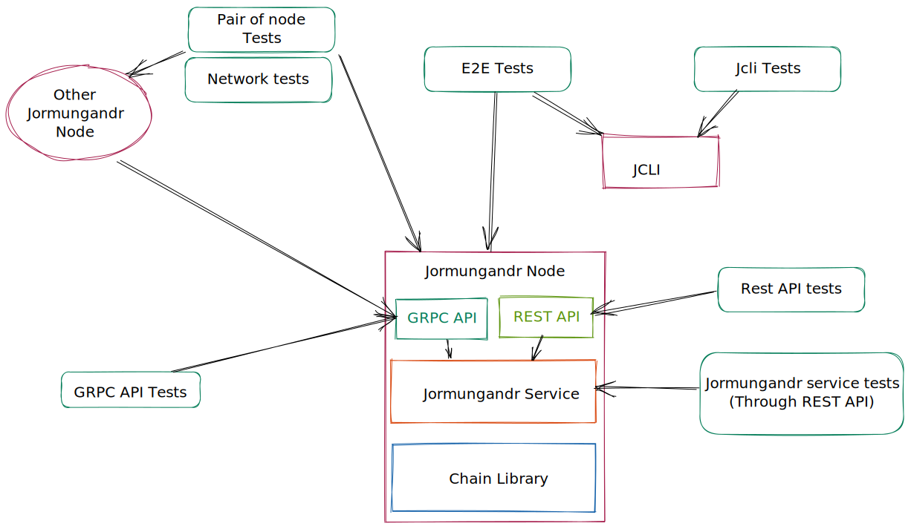

Prologue
The Catalyst-Core Documentation is currently undergoing review and re-write.
This documentation is published AS-IS. There is no guarantee that it is correct with regards to the current implementation. The source of all truth with regards to the implementation is the source code.
Patches to improve the documentation are very welcome. See Contributing.
Introduction
What is Catalyst-Core
Core Ledger
Welcome to the Jörmungandr User Guide.
Jörmungandr is a node implementation, written in rust, with the initial aim to support the Ouroboros type of consensus protocol.
A node is a participant of a blockchain network, continuously making, sending, receiving, and validating blocks. Each node is responsible to make sure that all the rules of the protocol are followed.
Mythology
Jörmungandr refers to the Midgard Serpent in Norse mythology. It is a hint to Ouroboros, the Ancient Egyptian serpent, who eat its own tail, as well as the IOHK paper on proof of stake.
General Concepts
This chapter covers the general concepts of the blockchain, and their application in the node, and is followed by the node organisation and the user interaction with it.
Blockchain concepts
Time
Slots represent the basic unit of time in the blockchain, and at each slot a block could be present.
Consecutive slots are grouped into epochs, which have updatable size defined by the protocol.
Fragments
Fragments are part of the blockchain data that represent all the possible events related to the blockchain health (e.g. update to the protocol), but also and mainly the general recording of information like transactions and certificates.
Blocks
Blocks represent the spine of the blockchain, safely and securely linking blocks in a chain, whilst grouping valid fragments together.
Blocks are composed of 2 parts:
- The header
- The content
The header link the content with the blocks securely together, while the content is effectively a sequence of fragments.
Blockchain
The blockchain is the general set of rules and the blocks that are periodically created. Some of the rules and settings, can be changed dynamically in the system by updates, while some other are hardcoded in the genesis block (first block of the blockchain).
+-------+ +-------+
|Genesis+<-----+Block 1+<--- ....
|Header | |Header |
+---+---+ +---+---+
| |
+---v---+ +---v---+
|Genesis| |Block 1|
|Content| |Content|
+-------+ +-------+
Consensus
The node currently support the following consensus protocol:
- Ouroboros BFT (OBFT)
- Ouroboros Genesis-Praos
Ouroboros BFT is a simple Byzantine Fault Tolerant (BFT) protocol where the block makers is a known list of leaders that successively create a block and broadcast it on the network.
Ouroboros Genesis Praos is a proof of stake (PoS) protocol where the block maker is made of a lottery where each stake pool has a chance proportional to their stake to be elected to create a block. Each lottery draw is private to each stake pool, so that the overall network doesn’t know in advance who can or cannot create blocks.
In Genesis-Praos slot time duration is constant, however the frequency of creating blocks is not stable, since the creation of blocks is a probability that is linked to the stake and consensus_genesis_praos_active_slot_coeff.
Note: In Genesis-Praos, if there is no stake in the system, no blocks will be created anymore starting with the next epoch.
Leadership
The leadership represent in abstract term, who are the overall leaders of the system and allow each individual node to check that specific blocks are lawfully created in the system.
The leadership is re-evaluated at each new epoch and is constant for the duration of an epoch.
Leader
Leader are an abstraction related to the specific actor that have the ability to create block; In OBFT mode, the leader just the owner of a cryptographic key, whereas in Genesis-Praos mode, the leader is a stake pool.
Transaction
Transaction forms the cornerstone of the blockchain, and is one type of fragment and also the most frequent one.
Transaction is composed of inputs and outputs; On one side, the inputs represent coins being spent, and on the other side the outputs represent coins being received.
Inputs Alice (80$) Bob (20$)
\ /
\ /
-----------
100$
---------
/ \
Outputs Charlie (50$) Dan (50$)
Transaction have fees that are defined by the blockchain settings and the following invariant hold:
\( \sum Inputs = \sum Outputs + fees \)
Transaction need to be authorized by each of the inputs in the transaction by their respective witness. In the most basic case, a witness is a cryptographic signature, but depending on the type of input can the type of witness vary.
Accounting
The blockchain has two methods of accounting which are interoperable:
- Unspent Transaction Output (UTXO)
- Accounts
UTXO behaves like cash/notes, and work like fixed denomination ticket that are cumulated. This is the accounting model found in Bitcoin. A UTXO is uniquely reference by its transaction ID and its index.
Accounts behaves like a bank account, and are simpler to use since exact amount can be used. This is the accounting model found in Ethereum. An account is uniquely identified by its public key.
Each inputs could refer arbitrarily to an account or a UTXO, and similarly each outputs could refer to an account or represent a new UTXO.
Network overview
Jörmungandr network capabilities are split into:
- the REST API, used for informational queries or control of the node;
- the gRPC API for blockchain protocol exchange and participation;
Here we will only review the gRPC API as the REST API is described in another chapter: go to the REST documentation
The protocol
The protocol is based on gRPC that combines commonly used protocols like HTTP/2 and RPC.
More precisely, Jörmungandr utilises.
This choice was made because gRPC is already widely supported around the world because
of it’s uitilization of standard protocols HTTP/2 which makes it much easier for Proxies and Firewalls to recognise
the protocol and permit the traffic.
Type of queries
The protocol allows you to send multiple types of messages between nodes:
- sync block to remote peer’s Last Block (
tip). - propose new fragments (new transactions, certificates, …): this is for the fragment propagation.
- propose new blocks: for block propagation.
There are other commands that optimise the communication and synchronization between nodes that will be documented here in the future.
Another type of messages is the Gossip message. These gossip messages allow Nodes to exchange
information (gossips) about other nodes on the network, allowing for peer
discovery.
Peer to peer
The peer 2 peer connections are established utilising multiple components:
- A multilayered topology (e.g. Poldercast);
- Gossiping for node discoverability;
- Subscription mechanism for event propagation;
- Security and countermeasures: (such as Topology Policy for scoring and/or blacklisting nodes);
Multilayered topology
As described in the Poldercast paper, our network topology is built on multiple layers that allow for granular control of it’s behavior. In practice this means a node will have different groups of nodes that it connects to based on different algorithms, each of these groups are a subset of the whole known list of nodes.
In short we have:
- The rings layer selects a predecessor(s) and a successor(s) for each topic (Fragment or Blocks);
- The Vicinity layer will select nodes that have similar interests;
- The Cyclon layer, will select nodes randomly.
However, we keep the option open to remove some of these layers or to add new ones, such as:
- A layer to allow privilege connections between stake pools;
- A layer for the user’s whitelist, a list of nodes the users considered trustworthy and that we could use to check in the current state of the network and verify the user’s node is not within a long running fork;
Gossiping
Gossiping is the process used for peer discovery. It allows two things:
- For any nodes to advertise themselves as discoverable;
- To discover new nodes via exchanging a list of nodes (gossips);
The gossips are selected by the different layers of the multilayered topology. For the Poldercast modules, the gossips are selected just as in the paper. Additional modules may select new nodes in the gossip list or may decide to not add any new information.
Subscription mechanism
Based on the multilayered topology, the node will open multiplexed and
bi-directional connections (thanks to industry standard gRPC, this comes for
free). These bi-directional connections are used to propagate events such as:
- Gossiping events, when 2 nodes exchange gossips for peer discovery;
- Fragment events, when a node wants to propagate a new fragment to other nodes;
- Block events, when a node wants to propagate a new block creation event
Security and countermeasures
In order to facilitate the handling of unreachable nodes or of misbehaving ones we have built a node policy tooling. Currently, we collect connectivity statuses for each node. The policy can then be tuned over the collected data to apply some parameters when connecting to a given node, as well as banning nodes from our topology.
For each node, the following data is collected:
Connection statuses:
- The failed connection attempts and when it happened;
- Latency
- Last message used per topic item (last time a fragment has been received from that node, last time a block has been received from that node…)
In the future, we may expand the polocy to include data collected at the blockchain level lile:
- Faults (e.g. trying to send an invalid block)
- Contributions in the network
- Their blockchain status (e.g. tips)
Policy
The p2p policy provides some more fine control on how to handle nodes flagged as not behaving as expected (see the list of data collected).
It currently works as a 4 levels: trusted, possible contact, quarantined, forgotten. Each gossip about a new node will create a new entry in the list of possible contact. Then the policy, based on the logged data associated to this node, may decide to put this node in quarantine for a certain amount of time.
Trusted nodes are the ones to which we were able to connect successfully. A connectivity report against those nodes will make them transition to the possible contact level, while a successful connection attempt will promote them again to trusted.
The changes from one level to another is best effort only. Applying the policy may be costly so the node applies the policy only on the node it is interested about (a gossip update or when reporting an issue against a node). This guarantees that the node does not spend too much time policing its database. And it also makes sure that only the nodes of interest are up to date. However it is possible for the node to choose, at a convenient time, to policy the whole p2p database. This is not enforced by the protocol.
| Disposition | Description |
|---|---|
| available | Node is available for the p2p topology for view selection and gossips. |
| quarantined | Node is not available for the p2p topology for view selection or gossips. After a certain amount of time, if the node is still being gossiped about, it will be moved to available. |
| forgotten | A node forgotten is simply removed from the whole p2p database. However, if the node is still being gossiped about it will be added back as available and the process will start again. |
Node organization
Secure Enclave
The secure enclave is the component containing the secret cryptographic material, and offering safe and secret high level interfaces to the rest of the node.
Network
The node’s network is 3 components:
- Intercommunication API (GRPC)
- Public client API (REST)
- Control client API (REST)
More detailed information here
Intercommunication API (GRPC)
This interface is a binary, efficient interface using the protobuf format and GRPC standard. The protobuf files of types and interfaces are available in the source code.
The interface is responsible to communicate with other node in the network:
- block sending and receiving
- fragments (transaction, certificates) broadcast
- peer2peer gossip
Public API REST
This interface is for simple queries for clients like:
- Wallet Client & Middleware
- Analytics & Debugging tools
- Explorer
it’s recommended for this interface to not be opened to the public.
TODO: Add a high level overview of what it does
Control API REST
This interface is not finished, but is a restricted interface with ACL, to be able to do maintenance tasks on the process:
- Shutdown
- Load/Retire cryptographic material
TODO: Detail the ACL/Security measure
Stake
In a proof of stake, participants are issued a stake equivalent to the amount of coins they own. The stake is then used to allow participation in the protocol, simply explained as:
The more stake one has, the more likely one will participate in the good health of the network.
When using the BFT consensus, the stake doesn’t influence how the system runs, but stake can still be manipulated for a later transition of the chain to another consensus mode.
Stake in the Account Model
Account are represented by 1 type of address and are just composed of a public key. The account accumulate moneys and its stake power is directly represented by the amount it contains
For example:
A - Account with 30$ => Account A has stake of 30
B - Account with 0$ => Account B has no stake
The account might have a bigger stake than what it actually contains, since it could also have associated UTXOs, and this case is covered in the next section.
Stake in the UTXO Model
UTXO are represented by two kind of addresses:
- single address: those type of address have no stake associated
- group address: those types of address have an account associated which receive the stake power of the UTXOs value
For example with the following utxos:
UTXO1 60$ (single address) => has stake of 0
UTXO2 50$ (group address A) \
->- A - Account with 10$ => Account A has stake of 100
UTXO3 40$ (group address A) /
UTXO4 20$ (group address B) -->- B - Account with 5$ => Account B has stake of 25
Stake pool
Stake pool are the trusted block creators in the genesis-praos system. A pool is declared on the network explicitly by its owners and contains, metadata and cryptographic material.
Stake pool has no stake power on their own, but participants in the network delegate their stake to a pool for running the operation.
Stake Delegation
Stake can and need to be delegated to stake pool in the system. They can change over time with a publication of a new delegation certificate.
Delegation certificate are a simple declaration statement in the form of:
Account 'A' delegate to Stake Pool 'Z'
Effectively it assigns the stake in the account and its associated UTXO stake to the pool it delegates to until another delegation certificate is made.
Quickstart
The rust node comes with tools and help in order to quickly start a node and connect to the blockchain.
It is compatible with most platforms and it is pre-packaged for some of them.
Here we will see how to install jormungandr and its helper jcli
and how to connect quickly to a given blockchain.
There are three posible ways you can start jormungandr.
As a passive node in an existing network
As described here.
The passive Node is the most common type of Node on the network. It can be used to download the blocks and broadcast transactions to peers. However, it doesn’t have cryptographic materials or any mean to create blocks. This type of nodes are mostly used for wallets, explorers or relays.
As a node generating blocks in an existing network
The network could be running either bft or genesis consensus. In the former case the node must have the private key of a registered as a slot leader. For the latter the private keys of a registered stake pool are needed.
More information here
Creating your own network
This is similar to the previous case, but configuring a genesis file is needed. Consult the Advanced section for more information on this procedure.
Command line tools
The software is bundled with 2 different command line software:
- jormungandr: the node;
- jcli: Jörmungandr Command Line Interface, the helpers and primitives to run and interact with the node.
Installation
From a release
This is the recommended method. Releases are all available here.
From source
Jörmungandr’s code source is available on github. Follow the instructions to build the software from sources.
Help and auto completion
All commands come with usage help with the option --help or -h.
For jcli, it is possible to generate the auto completion with:
jcli auto-completion bash ${HOME}/.bash_completion.d
Supported shells are:
- bash
- fish
- zsh
- powershell
- elvish
Note:
Make sure ${HOME}/.bash_completion.d directory previously exists on your HD.
In order to use auto completion you still need to:
source ${HOME}/.bash_completion.d/jcli.bash
You can also put it in your ${HOME}/.bashrc.
Starting a passive node
In order to start the node, you first need to gather the blockchain information you need to connect to.
- the hash of the genesis block of the blockchain, this will be the source of truth of the blockchain. It is 64 hexadecimal characters.
- the trusted peers identifiers and access points.
These information are essentials to start your node in a secure way.
The genesis block is the first block of the blockchain. It contains the static parameters of the blockchain as well as the initial funds. Your node will utilise the Hash to retrieve it from the other peers. It will also allows the Node to verify the integrity of the downloaded genesis block.
The trusted peers are the nodes in the public network that your Node will trust in order to initialise the Peer To Peer network.
The node configuration
Your node configuration file may look like the following:
Note
This config shouldn’t work as it is, the ip address and port for the trusted peer should be those of an already running node. Also, the public_address (‘u.x.v.t’) should be a valid address (you can use an internal one, eg: 127.0.0.1). Furthermore, you need to have permission to write in the path specified by the storage config.
storage: "/mnt/cardano/storage"
rest:
listen: "127.0.0.1:8443"
p2p:
trusted_peers:
- address: "/ip4/104.24.28.11/tcp/8299"
id: ad24537cb009bedaebae3d247fecee9e14c57fe942e9bb0d
Description of the fields:
storage: (optional) Path to the storage. If omitted, the blockchain is stored in memory only.log: (optional) Logging configuration:level: log messages minimum severity. If not configured anywhere, defaults to “info”. Possible values:- “off”
- “critical”
- “error”
- “warn”
- “info”
- “debug”
- “trace”
format: Log output format,plainorjson.output: Log output destination. Possible values are:stdout: standard outputstderr: standard errorsyslog: syslog (only available on Unix systems)syslogudp: remote syslog (only available on Unix systems)host: address and port of a syslog serverhostname: hostname to attach to syslog messages
journald: journald service (only available on Linux with systemd, (if jormungandr is built with thesystemdfeature)gelf: Configuration fields for GELF (Graylog) network logging protocol (if jormungandr is built with thegelffeature):backend: hostname:port of a GELF serverlog_id: identifier of the source of the log, for thehostfield in the messages.
file: path to the log file.
rest: (optional) Configuration of the REST endpoint.listen: address:port to listen for requeststls: (optional) enables TLS and disables plain HTTP if providedcert_file: path to server X.509 certificate chain file, must be PEM-encoded and contain at least 1 itempriv_key_file: path to server private key file, must be PKCS8 with single PEM-encoded, unencrypted key
cors: (optional) CORS configuration, if not provided, CORS is disabledallowed_origins: (optional) allowed origins, if none provided, echos request originmax_age_secs: (optional) maximum CORS caching time in seconds, if none provided, caching is disabled
p2p: P2P network settingstrusted_peers: (optional) the list of nodes’s multiaddr with their associatedpublic_idto connect to in order to bootstrap the P2P topology (and bootstrap our local blockchain);public_id: (optional) the node’s public ID that will be used to identify this node to the network.public_address: multiaddr string specifying address of the P2P service. This is the public address that will be distributed to other peers of the network that may find interest in participating to the blockchain dissemination with the node.listen: (optional) address:port to specifies the address the node will listen to to receive p2p connection. Can be left empty and the node will listen to whatever value was given topublic_address.topics_of_interest: The dissemination topics this node is interested to hear about:messages: Transactions and other ledger entries. Typical setting for a non-mining node:low. For a stakepool:high;blocks: Notifications about new blocks. Typical setting for a non-mining node:normal. For a stakepool:high.
max_connections: The maximum number of simultaneous P2P connections this node should maintain.
explorer: (optional) Explorer settingsenabled: True or false
no_blockchain_updates_warning_interval: (optional, seconds) if no new blocks were received after this period of time, the node will start sending you warnings in the logs.
Starting the node
jormungandr --config config.yaml --genesis-block-hash 'abcdef987654321....'
The ‘abcdef987654321….’ part refers to the hash of the genesis. This should be given to you from one of the peers in the network you are connecting to.
In case you have the genesis file (for example block-0.bin, because you are creating the network) you can get this hash with jcli.
jcli genesis hash --input block-0.bin
or, in case you only have the yaml file
jcli genesis encode --input genesis.yaml | jcli genesis hash
REST Api
It is possible to query the node via its REST Interface.
In the node configuration, you have set something like:
# ...
rest:
listen: "127.0.0.1:8443"
#...
This is the REST endpoint to talk to the node, to query blocks or send transaction.
It is possible to query the node stats with the following end point:
curl http://127.0.0.1:8443/api/v0/node/stats
The result may be:
{"blockRecvCnt":120,"txRecvCnt":92,"uptime":245}
THE REST API IS STILL UNDER DEVELOPMENT
Please note that the end points and the results may change in the future.
To see the whole Node API documentation:
Explorer mode
The node can be configured to work as a explorer. This consumes more resources, but makes it possible to query data otherwise not available.
Configuration
There are two ways of enabling the explorer api.
It can either be done by passing the --enable-explorer flag on the start arguments or by the config file:
explorer:
enabled: true
CORS
For configuring CORS the explorer API, this needs to be done on the REST section of the config, as documented here.
API
A graphql interface can be used to query the explorer data. When enabled, two endpoints are available in the REST interface:
/explorer/graphql/explorer/playground
The first is the one that queries are made against, for example:
curl \
-X POST \
-H "Content-Type: application/json" \
--data '{'\
'"query": "{'\
' status {'\
' latestBlock {'\
' chainLength'\
' id'\
' previousBlock {'\
' id'\
' }'\
' }'\
' }'\
'}"'\
'}' \
http://127.0.0.1:8443/explorer/graphql
While the second serves an in-browser graphql IDE that can be used to try queries interactively.
How to start a node as a leader candidate
Gathering data
Like in the passive node case, two things are needed to connect to an existing network
- the hash of the genesis block of the blockchain, this will be the source of truth of the blockchain. It is 64 hexadecimal characters.
- the trusted peers identifiers and access points.
The node configuration could be the same as that for running a passive node.
There are some differences depending if you are connecting to a network running a genesis or bft consensus protocol.
Connecting to a genesis blockchain
Registering a stake pool
In order to be able to generate blocks in an existing genesis network, a registered stake pool is needed.
Creating the secrets file
Put the node id and private keys in a yaml file in the following way:
Example
filename: node_secret.yaml
genesis:
sig_key: Content of stake_pool_kes.prv file
vrf_key: Content of stake_pool_vrf.prv file
node_id: Content of stake_pool.id file
Starting the Genesis node
jormungandr --genesis-block-hash asdf1234... --config config.yaml --secret node_secret.yaml
The ‘asdf1234…’ part should be the actual block0 hash of the network.
Connecting to a BFT blockchain
In order to generate blocks, the node should be registered as a slot leader in the network and started in the following way.
The secret file
Put secret key in a yaml file, e.g. node_secret.yaml as follows:
bft:
signing_key: ed25519_sk1kppercsk06k03yk4qgea....
where signing_key is a private key associated to the public id of a slot leader.
Starting the BFT node
jormungandr --genesis-block asdf1234... --config node.config --secret node_secret.yaml
The ‘asdf1234…’ part should be the actual block0 hash of the network.
Configuration
This chapter covers the node documentation, necessary to have a working system. It covers the network, logging and storage parameters.
Node Configuration
This is an common example of a Jörmungandr node configuration file typically named node-config.yaml.
However your’s will vary depending on your needs.
Additionally, this configuration has been tested on a specific Jörmungandr version and may change with newer versions.
It’s important to keep in mind that the trusted_peers portion of this configuration will be different for each Cardano blockchain network.
If you’re trying to connect this node to a specific network, you need to know:
- its genesis block hash
- its associated list of trusted peers.
Example Configuration - 1:
---
log:
output: stderr
level: info
format: plain
http_fetch_block0_service:
- https://url/jormungandr-block0/raw/master/data
skip_bootstrap: false # If set to true - will skip the bootstrapping phase
bootstrap_from_trusted_peers: false
p2p:
public_address: "/ip4/X.X.X.X/tcp/Y" # This should match your public IP address (X) and port number (Y)
#listen: 0.0.0.0:Y
topics_of_interest:
blocks: normal # Default is normal - set to high for stakepool
messages: low # Default is low - set to high for stakepool
allow_private_addresses: false
max_connections: 256
max_client_connections: 192
gossip_interval: 10s
max_bootstrap_attempts: # Default is not set
trusted_peers:
- address: "/ip4/13.230.137.72/tcp/3000"
id: e4fda5a674f0838b64cacf6d22bbae38594d7903aba2226f
- address: "/ip4/13.230.48.191/tcp/3000"
id: c32e4e7b9e6541ce124a4bd7a990753df4183ed65ac59e34
- address: "/ip4/18.196.168.220/tcp/3000"
id: 74a9949645cdb06d0358da127e897cbb0a7b92a1d9db8e70
- address: "/ip4/3.124.132.123/tcp/3000"
id: 431214988b71f3da55a342977fea1f3d8cba460d031a839c
- address: "/ip4/18.184.181.30/tcp/3000"
id: e9cf7b29019e30d01a658abd32403db85269fe907819949d
- address: "/ip4/184.169.162.15/tcp/3000"
id: acaba9c8c4d8ca68ac8bad5fe9bd3a1ae8de13816f40697c
- address: "/ip4/13.56.87.134/tcp/3000"
id: bcfc82c9660e28d4dcb4d1c8a390350b18d04496c2ac8474
policy:
quarantine_duration: 30m
quarantine_whitelist:
- "/ip4/13.230.137.72/tcp/3000"
- "/ip4/13.230.48.191/tcp/3000"
- "/ip4/18.196.168.220/tcp/3000"
layers:
preferred_list:
view_max: 20
peers:
- address: "/ip4/13.230.137.72/tcp/3000"
id: e4fda5a674f0838b64cacf6d22bbae38594d7903aba2226f
- address: "/ip4/13.230.48.191/tcp/3000"
id: c32e4e7b9e6541ce124a4bd7a990753df4183ed65ac59e34
- address: "/ip4/18.196.168.220/tcp/3000"
id: 74a9949645cdb06d0358da127e897cbb0a7b92a1d9db8e70
rest:
listen: 127.0.0.1:3100
storage: "./storage"
explorer:
enabled: false
mempool:
pool_max_entries: 100000
log_max_entries: 100000
leadership:
logs_capacity: 1024
no_blockchain_updates_warning_interval: 15m
Note: The node configuration uses the YAML format.
Advanced
Rewards report
Starting the node jormungandr with the command line option --rewards-report-all will
collect a thorough report of all the reward distribution. It can then be accessed via the
REST endpoints /api/v0/rewards/history/1 or /api/v0/rewards/epoch/10.
this is not a recommended setting as it may take memory and may trigger some latency.
Handling of time-consuming transactions
By default we allow a single transaction to delay a block by 50 slots. This can
be changed by adjusting the block_hard_deadline setting.
The following is deprecated and will be removed
If you want to record the reward distributions in a directory it is possible to set
the environment variable: JORMUNGANDR_REWARD_DUMP_DIRECTORY=/PATH/TO/DIR/TO/WRITE/REWARD.
If an error occurs while dumping the reward, the node will panic with an appropriate error message.
Leadership
The leadership field in your node config file is not mandatory, by default it is set
as follow:
leadership:
logs_capacity: 1024
logs_capacity: the maximum number of logs to keep in memory. Once the capacity is reached, older logs will be removed in order to leave more space for new ones [default: 1024]
Logging
The following options are available in the log section:
-
level: log messages minimum severity. If not configured anywhere, defaults toinfo. Possible values:off,critical,error,warn,info,debug,trace -
format: Log output format,plainorjson -
output: Log output destination (multiple destinations are supported). Possible values are:stdout: standard outputstderr: standard errorjournald: journald service (only available on Linux with systemd, (if jormungandr is built with thesystemdfeature)gelf: Configuration fields for GELF (Graylog) network logging protocol (if jormungandr is built with thegelffeature):backend: hostname:port of a GELF serverlog_id: identifier of the source of the log, for thehostfield in the messages
file: path to the log file
Example
A single configurable backend is supported.
Output to stdout
log:
output: stdout
level: trace
format: plain
Output to a file
log:
output:
file: example.log
level: info
format: json
Mempool
When running an active node (BFT leader or stake pool) it is interesting to be able to make choices on how to manage the pending transactions: how long to keep them, how to prioritize them etc.
The mempool field in your node config file is not mandatory, by default it is set
as follow:
mempool:
pool_max_entries: 10000
log_max_entries: 100000
pool_max_entries: (optional, default is 10000). Set a maximum size of the mempoollog_max_entries: (optional, default is 100000). Set a maximum size of fragment logspersistent_log: (optional, disabled by default) log all incoming fragments to log files, rotated on a hourly basis. The value is an object, with thedirfield specifying the directory name where log files are stored.
Persistent logs
A persistent log is a collection of records comprised of a UNIX timestamp of when a fragment was registereed by the mempool followed by the hex-encoded fragment body. This log is a line-delimited JSON stream.
Keep in mind that enabling persistent logs could result in impaired performance of the node if disk operations are slow. Consider using a reasonably fast ssd for best results.
Node network
There are 2 different network interfaces which are covered by their respective section:
rest:
...
p2p:
...
REST interface configuration
listen: listen addresstls: (optional) enables TLS and disables plain HTTP if providedcert_file: path to server X.509 certificate chain file, must be PEM-encoded and contain at least 1 itempriv_key_file: path to server private key file, must be PKCS8 with single PEM-encoded, unencrypted key
cors: (optional) CORS configuration, if not provided, CORS is disabledallowed_origins: (optional) allowed origins, if none provided, echos request origin, note that an origin should include a scheme, for example:http://127.0.0.1:8080.max_age_secs: (optional) maximum CORS caching time in seconds, if none provided, caching is disabled
Configuring TLS
In order to enable TLS there must be provided certificate and private key files.
jcli TLS requirements
Note that jormungandr itself does not have any specific requirements for TLS certificates and you
may give whatever you want including self-signed certificates as long as you do not intend to use
jcli.
The cryptography standards used by jcli as well as by all modern browsers and many http clients
place the following requirements on certificates:
- A certificate should adhere to X.509 v3 with appropriate key usage settings and subject alternative name.
- A certificate must not be self-signed.
Given that, your options are to either get a certificate from a well-known CA (Let’s Encrypt will
do, jcli uses Mozilla’s CA bundle for verification) or create your own local CA and provide the
root certificate to jcli via the --tls-cert-path option.
Creating a local CA using OpenSSL and EasyRSA
EasyRSA is a set of scripts that use OpenSSL and give you an easier experience with setting up your local CA. You can download them here.
-
Go to
easy-rsa/easy-rsa3. -
Configure your CA. To do that, create the configuration file (
cp vars.example vars); open it with the text editor of your choise (for example,vim vars); uncomment and edit fields you need to change. Each CA needs to edit these lines (find then in yourvarsfile according to their organization structure:#set_var.EASYRSA_REQ_COUNTRY––“US” #set_var.EASYRSA_REQ_PROVINCE—“California” #set_var.EASYRSA_REQ_CITY—“San.Francisco” #set_var.EASYRSA_REQ_ORG––“Copyleft.Certificate.Co” #set_var.EASYRSA_REQ_EMAIL–“me@example.net” #set_var.EASYRSA_REQ_OU—–“My.Organizational.Unit”
-
When your configuration is ready, run
./easyrsa init-pkiand./easyrsa build-ca nopass. You will be prompted to set the name of your CA. -
Run
./easyrsa gen-req server nopassto create a new private key and a certificate signing request. You will be prompted to enter the host name (localhostfor local testing). -
Run
./easyrsa sign-req server serverto sign the request.
To use the generated certificate, use it and the corresponding key in your jormungandr config:
rest:
tls:
cert_file: <path to server.crt>
priv_key_file: <path to server.key>
Use the CA certificate with jcli.
P2P configuration
trusted_peers: (optional) the list of nodes’ multiaddr to connect to in order to bootstrap the p2p topology (and bootstrap our local blockchain). Note that you can use a DNS name in the following format:/dns4/node.example.com/tcp/3000. Usedns6instead ofdns4if you want the peer to connect with IPv6.public_address: multiaddr the address to listen from and accept connection from. This is the public address that will be distributed to other peers of the network that may find interest into participating to the blockchain dissemination with the node. Currently only TCP is supported.node_key_file: (optional) Path to a file containing a bech32-encoded ed25519 secret key. The keys are used to advertize the node in network gossip and to authenticate a connection to the node if the node is used as a trusted peer. Most of the users don’t need to set this value as the key will be randomly generated if the option is not present.listen: (optional) socket address (IP address and port separated by a comma), specifies the interface address and port the node will listen at to receive p2p connection. Can be left empty and the node will listen to whatever value was given topublic_address.topics_of_interest: (optional) the different topics we are interested to hear about:messages: notify other peers this node is interested about Transactions typical setting for a non mining node:"low". For a stakepool:"high";blocks: notify other peers this node is interested about new Blocks. typical settings for a non mining node:"normal". For a stakepool:"high".
max_connections: the maximum number of P2P connections this node should maintain. If not specified, an internal limit is used by default[default: 256]max_client_connections: the maximum number of client P2P connections this node should keep open.[default: 192]policy: (optional) set the setting for the policy modulequarantine_durationset the time to leave a node in quarantine before allowing it back (or not) into the fold. It is recommended to leave the default value[default: 30min].quarantine_whitelistset a trusted list of peers that will not be quarantined in any circumstance. It should be a list of valid addresses, for example:["/ip4/127.0.0.1/tcp/3000"]. By default this list is empty,[default: []].
layers: (optional) set the settings for some of the poldercast custom layers (see below)gossip_interval: (optional) interval to start gossiping with new nodes, changing the value will affect the bandwidth. The more often the node will gossip the more bandwidth the node will need. The less often the node gossips the less good the resilience to node churn.[default: 10s]network-stuck_check: (optional) If no gossip has been received in the last interval, try to connect to nodes that were previously known to this node. This helps to rejoin the protocol in case there is a network outage and the node cannot reach any other peer.[default: 5min]max_bootstrap_attempts: (optional) number of times to retry bootstrapping from trusted peers. If not set, default behavior, the bootstrap process will keep retrying indefinitely, until completed successfully. If set to 0 (zero), the node will skip bootstrap all together – even if trusted peers are defined. If the node fails to bootstrap from any of the trusted peers and the number of bootstrap retry attempts is exceeded, then the node will continue to run without completing the bootstrap process. This will allow the node to act as the first node in the p2p network (i.e. genesis node), or immediately begin gossip with the trusted peers if any are defined.
The trusted peers
The trusted peers is a concept that is not fully implemented yet. One of the key element for now is that this is the first node any node tries to connect in order to meet new nodes. Right now, as far as we know, only one of them is needed. IOHK provides a few others for redundancy.
Layers
Jörmungandr provides multiple additional layers to the poldercast default ones:
the preferred list or the bottle in the sea.
Preferred list
This is a special list that allows to connect multiple nodes together without relying on the auto peer discovery. All entries in the preferred list are also whitelisted automatically, so they cannot be quarantined.
configuration
view_max: this is the number of entries to show in the view each round the layer will randomly select up toview_maxentries from the whole preferred_list.peers list of entries. [default: 20]peers: the list of peers to keep in the preferred list [default: EMPTY]
Also, the preferred list will never be quarantined or blacklisted, the node will
attempt to connect to (up to view_max of) these nodes every time, even if some
are down, unreachable or not operated anymore.
COMPATIBILITY NOTE: in near future the peer list will be only a list of addresses and the ID part will not be necessary.
Example
p2p:
layers:
preferred_list:
view_max: 20
peers:
- address: '/ip4/127.0.0.1/tcp/2029'
id: 019abc...
- ...
Setting the public_id
This is needed to advertise your node as a trusted peer.
If not set, the node will generate a random ID, which is fine for a regular user.
You can generate a public id with openssl, for example: openssl rand -hex 24
topics_of_interest
This is an optional value to set. The default is:
messages: low
blocks: normal
These values make sense for most of the users that are not running stake pools or that are not even publicly reachable.
However for a publicly reachable node, the recommended settings would be:
messages: normal
blocks: normal
and for a stake pool:
messages: high
blocks: high
Prometheus
Prerequisites
To use Prometheus you need Jormungandr compiled with the prometheus-metrics feature enabled.
Usage
To enable Prometheus endpoint you need to enable it in the configuration file:
prometheus:
enabled: true
Alternatively, you can use the --prometheus-metrics flag.
When enabled, the Prometheus endpoint is exposed as http(s)://<API_ADDR>:<API_PORT>/prometheus.
jcli
This is the node command line helper. It is mostly meant for developers and stake pool operators. It allows offline operations:
- generating cryptographic materials for the wallets and stake pools;
- creating addresses, transactions and certificates;
- prepare a new blockchain
and it allows simple interactions with the node:
- query stats;
- send transactions and certificates;
- get raw blocks and UTxOs.
Address
Jormungandr comes with a separate CLI to create and manipulate addresses.
This is useful for creating addresses from their components in the CLI, for debugging addresses and for testing.
Display address info
To display an address and verify it is in a valid format you can utilise:
$ jcli address info ta1svy0mwwm7mdwcuj308aapjw6ra4c3e6cygd0f333nvtjzxg8ahdvxlswdf0
discrimination: testing
public key: ed25519e_pk1pr7mnklkmtk8y5tel0gvnksldwywwkpzrt6vvvvmzus3jpldmtpsx9rnmx
or for example:
$ jcli address \
info \
ca1qsy0mwwm7mdwcuj308aapjw6ra4c3e6cygd0f333nvtjzxg8ahdvxz8ah8dldkhvwfghn77se8dp76uguavzyxh5cccek9epryr7mkkr8n7kgx
discrimination: production
public key: ed25519_pk1pr7mnklkmtk8y5tel0gvnksldwywwkpzrt6vvvvmzus3jpldmtpsx9rnmx
group key: ed25519_pk1pr7mnklkmtk8y5tel0gvnksldwywwkpzrt6vvvvmzus3jpldmtpsx9rnmx
Creating an address
Each command following allows to create addresses for production and testing
chains. For chains, where the discrimination is testing, you need to
use the --testing flag.
There’s 3 types of addresses:
- Single address : A simple spending key. This doesn’t have any stake in the system
- Grouped address : A spending key attached to an account key. The stake is automatically
- Account address : An account key. The account is its own stake
Address for UTxO
You can create a single address (non-staked) using the spending public key for this address utilising the following command:
$ jcli address \
single ed25519e_pk1jnlhwdgzv3c9frknyv7twsv82su26qm30yfpdmvkzyjsdgw80mfqduaean
ca1qw207ae4qfj8q4yw6v3ned6psa2r3tgrw9u3y9hdjcgj2p4pcaldyukyka8
To add the staking information and make a group address, simply add the account public key as a second parameter of the command:
$ jcli address \
single \
ed25519_pk1fxvudq6j7mfxvgk986t5f3f258sdtw89v4n3kr0fm6mpe4apxl4q0vhp3k \
ed25519_pk1as03wxmy2426ceh8nurplvjmauwpwlcz7ycwj7xtl9gmx9u5gkqscc5ylx
ca1q3yen35r2tmdye3zc5lfw3x992s7p4dcu4jkwxcda80tv8xh5ym74mqlzudkg42443nw08cxr7e9hmcuzals9ufsa9uvh723kvteg3vpvrcxcq
Address for Account
To create an account address you need the account public key and run:
$ jcli address \
account ed25519_pk1c4yq3hflulynn8fef0hdq92579n3c49qxljasrl9dnuvcksk84gs9sqvc2
ca1qhz5szxa8lnujwva8997a5q42nckw8z55qm7tkq0u4k03nz6zc74ze780qe
changing the address prefix
You can decide to change the address prefix, allowing you to provide more enriched data to the user. However, this prefix is not forwarded to the node, it is only for UI/UX.
$ jcli address \
account \
--prefix=address_ \
ed25519_pk1yx6q8rsndawfx8hjzwntfs2h2c37v5g6edv67hmcxvrmxfjdz9wqeejchg
address_1q5smgquwzdh4eyc77gf6ddxp2atz8ej3rt94nt6l0qes0vexf5g4cw68kdx
Certificate
Tooling for offline transaction creation
Building stake pool registration certificate
Builds a stake pool registration certificate.
jcli certificate new stake-pool-registration \
--vrf-key <vrf-public-key> \
--kes-key <kes-public-key> \
--start-validity <seconds-since-start> \
--management-threshold <THRESHOLD> \
--owner <owner-public-key> \
[--operator <operator-public-key>] \
[<output-file>]
Where:
--operator <operator-public-key>- optional, public key of the operator(s) of the pool.output-file- optional, write the output to the given file or print it to the standard output if not defined
Retiring a stake pool
It is possible to retire a stake pool from the blockchain. By doing so the stake delegated to the stake pool will become dangling and will need to be re-delegated.
Remember though that the action won’t be applied until the next following epoch. I.e. the certificate will take a whole epoch before being applied, this should leave time for stakers to redistribute their stake to other pools before having their stake becoming dangling.
It might be valuable for a stake pool operator to keep the stake pool running until the stake pool retirement certificate is fully applied in order to not miss any potential rewards.
example:
jcli certificate new stake-pool-retirement \
--pool-id <STAKE_POOL_ID> \
--retirement-time <seconds-since-start> \
[<output-file>]
where:
output-file- optional, write the output to the given file or print it to the standard output if not defined.--retirement-time- is the number of seconds since the start in order to make the stake pool retire.0means as soon as possible.--pool-id- hex-encoded stake pool ID. Can be retrieved usingjcli certificate get-stake-pool-idcommand. See here for more details.
Building stake pool delegation certificate
Builds a stake pool delegation certificate.
jcli certificate new stake-delegation <STAKE_KEY> <STAKE_POOL_IDS> [--output <output-file>]
Where:
-o, --output <output-file>- optional, write the output to the given file or print it to the standard output if not defined<STAKE_KEY>- the public key used in the stake key registration<STAKE_POOL_IDS>...- hex-encoded stake pool IDs and their numeric weights in format “pool_id:weight”. If weight is not provided, it defaults to 1.
Building update proposal certificate
Builds an update proposal certificate.
jcli certificate new update-proposal \
<PROPOSER_ID> \
<CONFIG_FILE> \
[<output-file>]
Where:
- <PROPOSER_ID> - the proposer ID, public key of the one who will sign this certificate
- <CONFIG_FILE> - optional, the file path to the config file defining the config param changes. If omitted it will be read from the standard input.
output-file- optional, write the output to the given file or print it to the standard output if not defined
For example your config file may look like:
# The block0-date defines the date the blockchain starts
# expected value in seconds since UNIX_EPOCH
#
# By default the value will be the current date and time. Or you can
# add a specific time by entering the number of seconds since UNIX
# Epoch
- Block0Date: 17
# This is the type of discrimination of the blockchain
# if this blockchain is meant for production then
# use 'production' otherwise use 'test'.
- Discrimination: test
# The initial consensus version:
#
# * BFT consensus: bft
# * Genesis Praos consensus: genesis
- ConsensusVersion: bft
# Number of slots in each epoch.
- SlotsPerEpoch: 42
# The slot duration, in seconds, is the time between the creation
# of 2 blocks
- SlotDuration: 79
# Epoch stability depth
- EpochStabilityDepth: 12
# Genesis praos active slot coefficient
# Determines minimum stake required to try becoming slot leader, must be in range (0,1]
- ConsensusGenesisPraosActiveSlotsCoeff: "0.004"
# This is the size, in bytes, of all the contents of the block (excluding the
# block header).
- BlockContentMaxSize: 96
# Add a new bft leader
- AddBftLeader: ed25519_pk1g53asm6l4gcwk2pm5ylr092umaur5yes47rqv7ng5yl525x8g8mq5nk7x7
# Remove a bft leader
- RemoveBftLeader: ed25519_pk1a3sjcg6gt4d05k5u6uqyzmsap8cjw37ul9cgztz8m697lvkz26uqg49nm3
# The fee calculations settings
#
# total fees: constant + (num_inputs + num_outputs) * coefficient [+ certificate]
- LinearFee:
# this is the minimum value to pay for every transaction
constant: 57
# the additional fee to pay for every inputs and outputs
coefficient: 14
# the additional fee to pay if the transaction embeds a certificate
certificate: 95
# (optional) fees for different types of certificates, to override the one
# given in `certificate` just above
#
# here: all certificate fees are set to `4` except for pool registration
# and stake delegation which are respectively `5` and `2`.
per_certificate_fees:
# (optional) if not specified, the pool registration certificate fee will be
# the one set by linear_fees.certificate
certificate_pool_registration: 5
# (optional) if not specified, the delegation certificate fee will be
# the one set by linear_fees.certificate
certificate_stake_delegation: 2
# (optional) if not specified, the owner delegation certificate fee will be
# the one set by linear_fees.certificate. Uncomment to set the owner stake
# delegation to `1` instead of default `4`:
certificate_owner_stake_delegation: 1
# Proposal expiration in epochs
- ProposalExpiration: 68
# The speed to update the KES Key in seconds
- KesUpdateSpeed: 120
# Increase the treasury amount
- TreasuryAdd: 10000
# Set the total reward supply available for monetary creation
- RewardPot: 100000000000000
# Set the treasury parameters, this is the tax type, just as in stake pool
# registration certificate parameters.
#
# When distributing the rewards, the treasury will be first serve as per
# the incentive specification document
- TreasuryParams:
# the fix value the treasury will take from the total reward pot of the epoch
fixed: 1000
# the extra percentage the the treasury will take from the reward pot of the epoch
ratio: "1/10"
# it is possible to add a max bound to the total value the treasury takes
# at each reward distribution. For example, one could cap the treasury tax
# to 10000. Uncomment the following line to apply a max limit:
max_limit: 10000
# set the reward supply consumption. These parameters will define how the
# total_reward_supply is consumed for the stake pool reward
#
# There's fundamentally many potential choices for how rewards are contributed back, and here's two potential valid examples:
#
# Linear formula: constant - ratio * (#epoch after epoch_start / epoch_rate)
# Halving formula: constant * ratio ^ (#epoch after epoch_start / epoch_rate)
- RewardParams:
halving: # or use "linear" for the linear formula
# In the linear formula, it represents the starting point of the contribution
# at #epoch=0, whereas in halving formula is used as starting constant for
# the calculation.
constant: 2
# In the halving formula, an effective value between 0.0 to 1.0 indicates a
# reducing contribution, whereas above 1.0 it indicate an acceleration of contribution.
#
# However in linear formula the meaning is just a scaling factor for the epoch zone
# (current_epoch - start_epoch / epoch_rate). Further requirement is that this ratio
# is expressed in fractional form (e.g. 1/2), which allow calculation in integer form.
ratio: 3/68
# indicates when this contribution start. note that if the epoch is not
# the same or after the epoch_start, the overall contribution is zero.
epoch_start: 89
# the rate at which the contribution is tweaked related to epoch.
epoch_rate: 20
# Fees for different types of certificates, to override the one
# given in `certificate` just above.
- PerCertificateFees:
# (optional) if not specified, the pool registration certificate fee will be
# the one set by linear_fees.certificate
certificate_pool_registration: 5
# (optional) if not specified, the delegation certificate fee will be
# the one set by linear_fees.certificate
certificate_stake_delegation: 2
# (optional) if not specified, the owner delegation certificate fee will be
# the one set by linear_fees.certificate. Uncomment to set the owner stake
# delegation to `1` instead of default `4`:
certificate_owner_stake_delegation: 1
# Set where to send the fees generated by transactions activity.
#
# It is possible to send all the generated fees to the "treasury"
- FeesInTreasury: rewards
- RewardLimitNone
# Limit the epoch total reward drawing limit to a portion of the total
# active stake of the system.
#
# for example, if set to 10%, the reward drawn will be bounded by the
# 10% of the total active stake.
- RewardLimitByAbsoluteStake: 22/72
# Settings to incentivize the numbers of stake pool to be registered
# on the blockchain.
#
# These settings does not prevent more stake pool to be added. For example
# if there is already 1000 stake pools, someone can still register a new
# stake pool and affect the rewards of everyone else too.
#
# if the threshold is reached, the pool doesn't really have incentive to
# create more blocks than 1 / set-value-of-pools % of stake.
- PoolRewardParticipationCapping:
min: 8
max: 52
# Add a new committee id
- AddCommitteeId: 8103973beaa56f4e9440004ee8e8f8359ea18499d4199c1b018c072e7f503ea0
# Remove a committee id
- RemoveCommitteeId: 6375dcdd714e69c197e99c32486ec28f166a50da7a1e3694807cd8a76f1c8175
- PerVoteCertificateFees:
certificate_vote_plan: 52
certificate_vote_cast: 57
# The transaction max expiry epochs
- TransactionMaxExpiryEpochs: 91
Building vote cast certificate
Builds a vote cast certificate.
Public vote cast
jcli certificate new update-cast public \
--choice <choice> \
--proposal-index <proposal-index> \
--vote-plan-id <vote-plan-id> \
--output <output-file>
Where:
- <choice> - the number of choice within the proposal you vote for
- <proposal-index> - the number of proposal in the vote plan you vote for
- <vote-plan-id> - the vote plan identified on the blockchain
- <output-file> - optional write the output to the given file or print it to the standard output if not defined
Private vote cast
jcli certificate new update-cast private \
--choice <choice> \
--options-size <options> \
--proposal-index <proposal-index> \
--vote-plan-id <vote-plan-id> \
--key-path <secret-key>
--output <output-file>
Where:
- <choice> - the number of choice within the proposal you vote for
- <options> - size of voting options
- <proposal-index> - the number of proposal in the vote plan you vote for
- <vote-plan-id> - the vote plan identified on the blockchain
- <secret-key> - optional key to encrypt the vote with, if not provided read secret key from the stdit
- <output-file> - optional write the output to the given file or print it to the standard output if not defined
Genesis
Tooling for working with a genesis file
Usage
jcli genesis [subcommand]
Subcommands
- decode: Print the YAML file corresponding to an encoded genesis block.
- encode: Create the genesis block of the blockchain from a given yaml file.
- hash: Print the block hash of the genesis
- init: Create a default Genesis file with appropriate documentation to help creating the YAML file
- help
Examples
Encode a genesis file
jcli genesis encode --input genesis.yaml --output block-0.bin
or equivantely
cat genesis.yaml | jcli genesis encode > block-0.bin
Get the hash of an encoded genesis file
jcli genesis hash --input block-0.bin
cryptographic keys
There are multiple type of key for multiple use cases.
| type | usage |
|---|---|
ed25519 | Signing algorithm for Ed25519 algorithm |
ed25519-bip32 | Related to the HDWallet, Ed25519 Extended with chain code for derivation |
ed25519-extended | Related to Ed25519Bip32 without the chain code |
sum-ed25519-12 | For stake pool, necessary for the KES |
ristretto-group2-hash-dh | For stake pool, necessary for the VRF |
There is a command line parameter to generate this keys:
$ jcli key generate --type=Ed25519
ed25519_sk1cvac48ddf2rpk9na94nv2zqhj74j0j8a99q33gsqdvalkrz6ar9srnhvmt
and to extract the associated public key:
$ echo ed25519_sk1cvac48ddf2rpk9na94nv2zqhj74j0j8a99q33gsqdvalkrz6ar9srnhvmt | jcli key to-public
ed25519_pk1z2ffur59cq7t806nc9y2g64wa60pg5m6e9cmrhxz9phppaxk5d4sn8nsqg
Signing data
Sign data with private key. Supported key formats are: ed25519, ed25519-bip32, ed25519-extended and sumed25519_12.
jcli key sign <options> <data>
The options are
- –secret-key <secret_key> - path to file with bech32-encoded secret key
- -o, –output <output> - path to file to write signature into, if no value is passed, standard output will be used
<data> - path to file with data to sign, if no value is passed, standard input will be used
Verifying signed data
Verify signed data with public key. Supported key formats are: ed25519, ed25519bip32 and sumed25519_12.
jcli key verify <options> <data>
The options are
- –public-key <public_key> - path to file with bech32-encoded public key
- –signature <signature> - path to file with signature
<data> - path to file with data to sign, if no value is passed, standard input will be used
REST
Jormungandr comes with a CLI client for manual communication with nodes over HTTP.
Conventions
Many CLI commands have common arguments:
-h <addr>or--host <addr>- Node API address. Must always havehttp://orhttps://prefix and always ends with the/api. E.g.-h http://127.0.0.1:8081/api,--host https://node.com:8443/cardano/api.--debug- Print additional debug information to stderr. The output format is intentionally undocumented and unstable--output-format <format>- Format of output data. Possible values: json, yaml, default yaml. Any other value is treated as a custom format using values from output data structure. Syntax is Go text template: https://golang.org/pkg/text/template/.
Node stats
Fetches node stats
jcli rest v0 node stats get <options>
The options are
- -h <node_addr> - see conventions
- –debug - see conventions
- –output-format <format> - see conventions
YAML printed on success
---
# Number of blocks received by node
blockRecvCnt: 1102
# Size in bytes of all transactions in last block
lastBlockContentSize: 484
# The Epoch and slot Number of the block (optional)
lastBlockDate: "20.29"
# Sum of all fee values in all transactions in last block
lastBlockFees: 534
# The block hash, it's unique identifier in the blockchain (optional)
lastBlockHash: b9597b45a402451540e6aabb58f2ee4d65c67953b338e04c52c00aa0886bd1f0
# The block number, in order, since the block0 (optional)
lastBlockHeight: 202901
# Sum of all input values in all transactions in last block
lastBlockSum: 51604
# The time slot of the tip block
lastBlockTime: "2020-01-30T22:37:46+00:00"
# Number of transactions in last block
lastBlockTx: 2
# The time at which we received the last block, not necessarily the current tip block (optional)
lastReceivedBlockTime: "2020-01-30T22:37:59+00:00"
# 24 bytes encoded in hexadecimal Node ID
nodeId: "ad24537cb009bedaebae3d247fecee9e14c57fe942e9bb0d"
# Number of nodes that are available for p2p discovery and events propagation
peerAvailableCnt: 321
# Number of nodes that have been quarantined by our node
peerQuarantinedCnt: 123
# Total number of nodes
peerTotalCnt: 444
# Number of nodes that are connected to ours but that are not publicly reachable
peerUnreachableCnt: 0
# State of the node
state: Running
# Number of transactions received by node
txRecvCnt: 5440
# Node uptime in seconds
uptime: 20032
# Node app version
version: jormungandr 0.8.9-30d20d2e
Get UTxO
Fetches UTxO details
jcli rest v0 utxo <fragment-id> <output-index> get <options>
- <fragment-id> - hex-encoded ID of the transaction fragment
- <output-index> - index of the transaction output
The options are
- -h <node_addr> - see conventions
- –debug - see conventions
- –output-format <format> - see conventions
YAML printed on success
---
# UTxO owner address
address: ca1svs0mwkfky9htpam576mc93mee5709khre8dgnqslj6y3p5f77s5gpgv02w
# UTxO value
value: 10000
Post transaction
Posts a signed, hex-encoded transaction
jcli rest v0 message post <options>
The options are
- -h <node_addr> - see conventions
- –debug - see conventions
- -f –file <file_path> - File containing hex-encoded transaction. If not provided, transaction will be read from stdin.
Fragment Id is printed on success (which can help finding transaction status using get message log command)
50f21ac6bd3f57f231c4bf9c5fff7c45e2529c4dffed68f92410dbf7647541f1
Get message log
Get the node’s logs on the message pool. This will provide information on pending transaction, rejected transaction and or when a transaction has been added in a block
jcli rest v0 message logs <options>
The options are
- -h <node_addr> - see conventions
- –debug - see conventions
- –output-format <format> - see conventions
YAML printed on success
---
- fragment_id: 7db6f91f3c92c0aef7b3dd497e9ea275229d2ab4dba6a1b30ce6b32db9c9c3b2 # hex-encoded fragment ID
last_updated_at: 2019-06-02T16:20:26.201000000Z # RFC3339 timestamp of last fragment status change
received_at: 2019-06-02T16:20:26.201000000Z # RFC3339 timestamp of fragment receivement
received_from: Network, # how fragment was received
status: Pending, # fragment status
received_from can be one of:
received_from: Rest # fragment was received from node's REST API
received_from: Network # fragment was received from the network
status can be one of:
status: Pending # fragment is pending
status:
Rejected: # fragment was rejected
reason: reason of rejection # cause
status: # fragment was included in a block
InABlock:
date: "6637.3" # block epoch and slot ID formed as <epoch>.<slot_id>
block: "d9040ca57e513a36ecd3bb54207dfcd10682200929cad6ada46b521417964174"
Blockchain tip
Retrieves a hex-encoded ID of the blockchain tip
jcli rest v0 tip get <options>
The options are
- -h <node_addr> - see conventions
- –debug - see conventions
Get block
Retrieves a hex-encoded block with given ID
jcli rest v0 block <block_id> get <options>
- <block_id> - hex-encoded block ID
The options are
- -h <node_addr> - see conventions
- –debug - see conventions
Get next block ID
Retrieves a list of hex-encoded IDs of descendants of block with given ID. Every list element is in separate line. The IDs are sorted from closest to farthest.
jcli rest v0 block <block_id> next-id get <options>
- <block_id> - hex-encoded block ID
The options are
- -h <node_addr> - see conventions
- –debug - see conventions
- -c –count <count> - Maximum number of IDs, must be between 1 and 100, default 1
Get account state
Get account state
jcli rest v0 account get <account-id> <options>
- <account-id> - ID of an account, bech32-encoded
The options are
- -h <node_addr> - see conventions
- –debug - see conventions
- –output-format <format> - see conventions
YAML printed on success
---
counter: 1
delegation: c780f14f9782770014d8bcd514b1bc664653d15f73a7158254730c6e1aa9f356
value: 990
valueis the current balance of the account;counteris the number of transactions performed using this account this is useful to know when signing new transactions;delegationis the Stake Pool Identifier the account is delegating to. it is possible this value is not set if there is no delegation certificate sent associated to this account.
Node settings
Fetches node settings
jcli rest v0 settings get <options>
The options are
- -h <node_addr> - see conventions
- –debug - see conventions
- –output-format <format> - see conventions
YAML printed on success
---
block0Hash: 8d94ecfcc9a566f492e6335858db645691f628b012bed4ac2b1338b5690355a7 # block 0 hash of
block0Time: "2019-07-09T12:32:51+00:00" # block 0 creation time of
blockContentMaxSize: 102400 # the block content's max size in bytes
consensusVersion: bft # currently used consensus
currSlotStartTime: "2019-07-09T12:55:11+00:00" # current slot start time
epochStabilityDepth: 102400 # the depth, number of blocks, to which we consider the blockchain to
# be stable and prevent rollback beyond that depth
fees: # transaction fee configuration
certificate: 4 # fee per certificate
coefficient: 1 # fee per every input and output
constant: 2 # fee per transaction
per_certificate_fees: # fee per certificate operations, all zero if this object absent (optional)
certificate_pool_registration: 5 # fee per pool registration, zero if absent (optional)
certificate_stake_delegation: 15 # fee per stake delegation, zero if absent (optional)
certificate_owner_stake_delegation: 2 # fee per pool owner stake delegation, zero if absent (optional)
rewardParams: # parameters for rewards calculation
compoundingRatio: # speed at which reward is reduced. Expressed as numerator/denominator
denominator: 1024
numerator: 1
compoundingType: Linear # reward reduction algorithm. Possible values: "Linear" and "Halvening"
epochRate: 100 # number of epochs between reward reductions
epochStart: 0 # epoch when rewarding starts
initialValue: 10000 # initial reward
slotDuration: 5 # slot duration in seconds
slotsPerEpoch: 720 # number of slots per epoch
treasuryTax: # tax from reward that goes to pot
fixed: 5 # what get subtracted as fixed value
ratio: # ratio of tax after fixed amount is subtracted. Expressed as numerator/denominator
numerator: 1
denominator: 10000
max: 100 # limit of tax (optional)
Node shutdown
Node shutdown
jcli rest v0 shutdown get <options>
The options are
- -h <node_addr> - see conventions
- –debug - see conventions
Get leaders
Fetches list of leader IDs
jcli rest v0 leaders get <options>
The options are
- -h <node_addr> - see conventions
- –debug - see conventions
- –output-format <format> - see conventions
YAML printed on success
---
- 1 # list of leader IDs
- 2
Register leader
Register new leader and get its ID
jcli rest v0 leaders post <options>
The options are
- -h <node_addr> - see conventions
- –debug - see conventions
- –output-format <format> - see conventions
- -f, –file <file> - File containing YAML with leader secret. It must have the same format as secret YAML passed to Jormungandr as –secret. If not provided, YAML will be read from stdin.
On success created leader ID is printed
3
Delete leader
Delete leader with given ID
jcli rest v0 leaders delete <id> <options>
- <id> - ID of deleted leader
The options are
- -h <node_addr> - see conventions
- –debug - see conventions
Get leadership logs
Fetches leadership logs
jcli rest v0 leaders logs get <options>
The options are
- -h <node_addr> - see conventions
- –debug - see conventions
- –output-format <format> - see conventions
YAML printed on success
---
- created_at_time: "2019-08-19T12:25:00.417263555+00:00"
enclave_leader_id: 1
finished_at_time: "2019-08-19T23:19:05.010113333+00:00"
scheduled_at_date: "0.3923"
scheduled_at_time: "2019-08-19T23:18:35+00:00"
wake_at_time: "2019-08-19T23:18:35.001254555+00:00"
status:
Block:
chain_length: 201018
block: d9040ca57e513a36ecd3bb54207dfcd10682200929cad6ada46b521417964174
parent: cc72d4ca957b03d7c795596b7fd7b1ff09c649c3e2877c508c0466abc8604832
Different value for the status:
# meaning the action is still pending to happen
status: Pending
# meaning the action successfully create the given block with the given hash and parent
status:
Block:
chain_length: 201018
block: d9040ca57e513a36ecd3bb54207dfcd10682200929cad6ada46b521417964174
parent: cc72d4ca957b03d7c795596b7fd7b1ff09c649c3e2877c508c0466abc8604832
# meaning the event has failed for some reasons
status:
Rejected:
reason: "Missed the deadline to compute the schedule"
Get stake pools
Fetches list of stake pool IDs
jcli rest v0 stake-pools get <options>
The options are
- -h <node_addr> - see conventions
- –debug - see conventions
- –output-format <format> - see conventions
YAML printed on success
---
- 5cf03f333f37eb7b987dbc9017b8a928287a3d77d086cd93cd9ad05bcba7e60f # list of stake pool IDs
- 3815602c096fcbb91072f419c296c3dfe1f730e0f446a9bd2553145688e75615
Get stake distribution
Fetches stake information
jcli rest v0 stake get <options> [<epoch>]
- <epoch> - Epoch to get the stake distribution from. (optional)
The options are
- -h <node_addr> - see conventions
- –debug - see conventions
- –output-format <format> - see conventions
YAML printed on success
jcli rest v0 stake get <options>- stake distribution from the current epoch
---
epoch: 228 # Epoch of last block
stake:
dangling: 0 # Total value stored in accounts, but assigned to nonexistent pools
pools:
- - 5cf03f333f37eb7b987dbc9017b8a928287a3d77d086cd93cd9ad05bcba7e60f # stake pool ID
- 1000000000000 # staked value
- - 3815602c096fcbb91072f419c296c3dfe1f730e0f446a9bd2553145688e75615 # stake pool ID
- 1000000000000 # staked value
unassigned: 0 # Total value stored in accounts, but not assigned to any pool
jcli rest v0 stake get <options> 10- stake distribution from a specific epoch (epoch 10 in this example)
---
epoch: 10 # Epoch specified in the request
stake:
dangling: 0 # Total value stored in accounts, but assigned to nonexistent pools
pools:
- - 5cf03f333f37eb7b987dbc9017b8a928287a3d77d086cd93cd9ad05bcba7e60f # stake pool ID
- 1000000000000 # staked value
- - 3815602c096fcbb91072f419c296c3dfe1f730e0f446a9bd2553145688e75615 # stake pool ID
- 1000000000000 # staked value
unassigned: 0 # Total value stored in accounts, but not assigned to any pool
Network stats
Fetches network stats
jcli rest v0 network stats get <options>
The options are
- -h <node_addr> - see conventions
- –debug - see conventions
- –output-format <format> - see conventions
YAML printed on success
---
- # node address (optional)
addr: "3.124.55.91:3000"
# hex-encoded node ID
nodeId: 0102030405060708090a0b0c0d0e0f101112131415161718191a1b1c1d1e1f20
# timestamp of when the connection was established
establishedAt: "2019-10-14T06:24:12.010231281+00:00"
# timestamp of last time block was received from node if ever (optional)
lastBlockReceived: "2019-10-14T00:45:57.419496113+00:00"
# timestamp of last time fragment was received from node if ever (optional)
lastFragmentReceived: "2019-10-14T00:45:58.419496150+00:00"
# timestamp of last time gossip was received from node if ever (optional)
lastGossipReceived: "2019-10-14T00:45:59.419496188+00:00"
Get stake pool details
Fetches stake pool details
jcli rest v0 stake-pool get <pool-id> <options>
- <pool-id> - hex-encoded pool ID
The options are
- -h <node_addr> - see conventions
- –debug - see conventions
- –output-format <format> - see conventions
YAML printed on success
---
tax: # pool reward
fixed: 5 # what get subtracted as fixed value
ratio: # ratio of tax after fixed amount is subtracted. Expressed as numerator/denominator
numerator: 1
denominator: 10000
max: 100 # limit of tax (optional)
total_stake: 2000000000000 # total stake pool value
# bech32-encoded stake pool KES key
kesPublicKey: kes25519-12-pk1q7susucqwje0lpetqzjgzncgcrjzx7e2guh900qszdjskkeyqpusf3p39r
# bech32-encoded stake pool VRF key
vrfPublicKey: vrf_pk1rcm4qm3q9dtwq22x9a4avnan7a3k987zvepuxwekzj3uyu6a8v0s6sdy0l
Get rewards history for a specific epoch
Get the rewards history of a given epoch.
jcli rest v0 rewards epoch get <epoch> <options>
- <epoch> - epoch number to get the rewards history for.
The options are
- -h <node_addr> - see conventions
- –debug - see conventions
jcli rest v0 rewards epoch get 82 -h <node_addr>
[
{
"epoch": 82, // the epoch number to collect rewards info from (rewards are from epoch 81)
"drawn": 3835616440000, // Total Drawn from reward escrow pot for the epoch
"fees": 1828810000, // Fees contributed into the pot the epoch
"treasury": 462179124139, // Value added to the treasury
"stake_pools": {
"0087011b9c626759f19d9d0315a9b42492ba497438c12efc026d664c9f324ecb": [
1683091391, // pool's owned rewards from taxes
32665712521 // distributed rewards to delegators
],
"014bb0d84f40900f6dd85835395bc38da3ab81435d1e6ee27d419d6eeaf7d16a": [
47706672,
906426770
],
},
"accounts": {
"ed25519_pk1qqq6r7r7medu2kdpvdra5kwh8uz9frvftm9lf25shm7ygx9ayvss0nqke9": 427549785, // Amount added to each account
"ed25519_pk1qqymlwehsztpzhy2k4szkp7j0xk0ra35jyxcpgr9p9q4ngvzzc5q4sh2gm": 24399360,
"ed25519_pk1qq9h62jv6a0mz36xgecjrz9tm8z6ay3vj4d64ashxkgxcyhjewwsvgvelj": 22449169,
"ed25519_pk1qq9l2qrqazk5fp4kt2kvjtsjc32g0ud888um8k2pvms0cw2r0uzsute83u": 1787992,
"ed25519_pk1qqx6h559ee7pa67dm255d0meekt6dmq6857x302wdwrhzv47z9hqucdnt2": 369024,
}
}
]
Get rewards history for some epochs
Get the rewards history of the length last epoch(s) from tip.
jcli rest v0 rewards history get <length> <options>
- <length> - number of epochs, starting from the last epoch from tip, to get the reward history for.
The options are
- -h <node_addr> - see conventions
- –debug - see conventions
jcli rest v0 rewards history get 2 -h <node_addr>
[
{
"epoch": 93,
"drawn": 3835616440000,
"fees": 641300000,
"treasury": 467151470296,
"stake_pools": {
"0087011b9c626759f19d9d0315a9b42492ba497438c12efc026d664c9f324ecb": [
1121750881,
21771124247
],
"014bb0d84f40900f6dd85835395bc38da3ab81435d1e6ee27d419d6eeaf7d16a": [
429241408,
8155586765
],
"01bd272cede02d0b0c9cd47b16e5356ab3fb2330dd9d1e972ab5494365309d2a": [
1691506850,
32829041110
],
},
"accounts": {
"ed25519_pk1002kje4l8j7kvsseyauusk3s7nzef4wcvvafltjmg0rkzr6qccyqg064kz": 33311805,
"ed25519_pk100549kxqn8tnzfzr5ndu0wx7pp2y2ck28mnykq03m2z5qcwkvazqx9fp0h": 15809,
"ed25519_pk10054y058qfn5wnazalnkax0mthg06ucq87nn9320rphtye5ca0xszjcelk": 10007789,
"ed25519_pk10069dsunppwttl4qtsfnyhjnqwkunuwxjxlandl2fnpwpuznf5pqmg3twe": 545094806,
"ed25519_pk1009sfpljfgx30z70l3n63gj7w9vp3epugmd3vn62fyr07ut9pfwqjp7f8h": 4208232,
},
},
{
"epoch": 92,
"drawn": 3835616440000,
"fees": 620400000,
"treasury": 480849578351,
"stake_pools": {
"0087011b9c626759f19d9d0315a9b42492ba497438c12efc026d664c9f324ecb": [
979164601,
19003786459
],
"0105449dd66524111349ef677d1ebc25247a5ba2d094913f52aa4db265eac03a": [
26977274,
972170279
],
"014bb0d84f40900f6dd85835395bc38da3ab81435d1e6ee27d419d6eeaf7d16a": [
299744265,
5695141053
],
},
"accounts": {
"ed25519_pk1002kje4l8j7kvsseyauusk3s7nzef4wcvvafltjmg0rkzr6qccyqg064kz": 40581616,
"ed25519_pk100549kxqn8tnzfzr5ndu0wx7pp2y2ck28mnykq03m2z5qcwkvazqx9fp0h": 49156,
"ed25519_pk10054y058qfn5wnazalnkax0mthg06ucq87nn9320rphtye5ca0xszjcelk": 12306084,
"ed25519_pk10069dsunppwttl4qtsfnyhjnqwkunuwxjxlandl2fnpwpuznf5pqmg3twe": 142737175,
"ed25519_pk1009sfpljfgx30z70l3n63gj7w9vp3epugmd3vn62fyr07ut9pfwqjp7f8h": 3932910,
},
}
]
Get voting committee members
Get the list of voting committee members.
jcli rest v0 vote active committees get <options>
The options are
- -h <node_addr> - see conventions
- –debug - see conventions
- –output-format <format> - see conventions
YAML printed on success
---
- 7ef044ba437057d6d944ace679b7f811335639a689064cd969dffc8b55a7cc19 # list of members
- f5285eeead8b5885a1420800de14b0d1960db1a990a6c2f7b517125bedc000db
Get active voting plans and proposals
Get the list of active voting plans and proposals.
jcli rest v0 vote active plans get <options>
The options are
- -h <node_addr> - see conventions
- –debug - see conventions
- –output-format <format> - see conventions
YAML printed on success
---
- committee_end:
epoch: 10
slot_id: 0
proposals:
- external_id: adb92757155d09e7f92c9f100866a92dddd35abd2a789a44ae19ab9a1dbc3280
options:
OneOf:
max_value: 3
- external_id: 6778d37161c3962fe62c9fa8a31a55bccf6ec2d1ea254a467d8cd994709fc404
options:
OneOf:
max_value: 3
vote_end:
epoch: 5
slot_id: 0
vote_start:
epoch: 1
slot_id: 0
Transaction
Tooling for offline transaction creation and signing.
jcli transaction
Those familiar with cardano-cli
transaction builder will see resemblance in jcli transaction.
There is a couple of commands that can be used to:
- prepare a transaction:
newcreate a new empty transaction;add-inputadd-accountadd-output
finalizethe transaction for signing:- create witnesses and add the witnesses:
make-witnessadd-witness
sealthe transaction, ready to send to the blockchainauththe transaction, if it contains a certificate
There are also functions to help decode and display the content information of a transaction:
infodisplays summary of transaction being constructeddata-for-witnessget the data to sign from a given transactionfragment-idget the Fragment ID from a transaction in sealed stateto-messageto get the hexadecimal encoded message, ready to send withcli rest message
DEPRECATED:
idget the data to sign from a given transaction (usedata-for-witnessinstead)
Transaction info
On every stage of building a transaction user can display its summary
jcli transaction info <options>
The options are:
-
--prefix <address-prefix>- set the address prefix to use when displaying the addresses (default: ca) -
--fee-certificate <certificate>- fee per certificate (default: 0) -
--fee-coefficient <coefficient>- fee per every input and output (default: 0) -
--fee-constant <constant>- fee per transaction (default: 0) -
--fee-owner-stake-delegation <certificate-owner-stake-delegation>- fee per owner stake delegation (default: fee-certificate) -
--fee-pool-registration <certificate-pool-registration>- fee per pool registration (default: fee-certificate) -
--fee-stake-delegation <certificate-stake-delegation>- fee per stake delegation (default: fee-certificate) -
--fee-vote-cast <certificate-vote-cast>- fee per vote cast -
--fee-vote-plan <certificate-vote-plan>- fee per vote plan -
--output-format <format>- Format of output data. Possible values: json, yaml. Any other value is treated as a custom format using values from output data structure. Syntax is Go text template: https://golang.org/pkg/text/template/. (default: yaml) -
--output <output>- write the info in the given file or print it to the standard output -
--staging <staging-file>- place where the transaction is going to be saved during its staging phase. If a file is given, the transaction will be read from this file and modification will be written into this same file. If no file is given, the transaction will be read from the standard input and will be rendered in the standard output.
YAML printed on success
---
balance: 40 # transaction balance or how much input is not spent
fee: 60 # total fee for transaction
input: 200 # total input of transaction
inputs: # list of transaction inputs, each can be of either "utxo" or "account" kind
- index: 4 # index of transaction output
kind: utxo # constant value, signals that UTxO is used
# hex-encoded ID of transaction
txid: 543326b2739356ab6d14624a536ca696f1020498b36456b7fdfe8344c084bfcf
value: 130 # value of transaction output
- # hex-encoded account address
account: 3fd45a64ae5a3b9c35e37114baa099b8b01285f7d74b371597af22d5ff393d9f
kind: account # constant value, signals that account is used
value: 70 # value taken from account
num_inputs: 1 # total number of inputs of transaction
num_outputs: 1 # total number of outputs of transaction
num_witnesses: 1 # total number of witnesses of transaction
output: 100 # total output of transaction
outputs: # list of transaction outputs
- # bech32-encoded address
address: ca1swedukl830v26m8hl7e5dzrjp77yctuz79a68r8jl2l79qnpu3uwz0kg8az
value: 100 # value sent to address
# hex-encoded transaction hash, when transaction is complete, it's also its ID
sign_data_hash: 26be0b8bd7e34efffb769864f00d7c4aab968760f663a7e0b3ce213c4b21651b
status: sealed # transaction status, can be "balancing", "finalizing", "sealed" or "authed"
Examples
The following example focuses on using an utxo as input, the few differences when transfering from an account
will be pointed out when necessary.
Also, the simplified make-transaction command in jcli covers all this process. For more information run:
jcli transaction make-transaction --help
Let’s use the following utxo as input and transfer 50 lovelaces to the destination address
Input utxo
| Field | Value |
|---|---|
| UTXO’s transaction ID | 55762218e5737603e6d27d36c8aacf8fcd16406e820361a8ac65c7dc663f6d1c |
| UTXO’s output index | 0 |
| associated address | ca1q09u0nxmnfg7af8ycuygx57p5xgzmnmgtaeer9xun7hly6mlgt3pjyknplu |
| associated value | 100 |
Destination address
address: ca1qvnr5pvt9e5p009strshxndrsx5etcentslp2rwj6csm8sfk24a2wlqtdj6
Create a staging area
jcli transaction new --staging tx
Add input
For the input, we need to reference the utxo with the UTXO’s transaction ID and UTXO’S output index fields. We also need to specify how many coins there are with the associated value field.
Example - UTXO address as Input
jcli transaction add-input 55762218e5737603e6d27d36c8aacf8fcd16406e820361a8ac65c7dc663f6d1c 0 100 --staging tx
Example - Account address as Input
If the input is an account, the command is slightly different
jcli transaction add-account account_address account_funds --staging tx
Add output
For the output, we need the address we want to transfer to, and the amount.
jcli transaction add-output ca1qvnr5pvt9e5p009strshxndrsx5etcentslp2rwj6csm8sfk24a2wlqtdj6 50 --staging tx
Add fee and change address
We want to get the change in the same address that we are sending from (the associated address of the utxo).
We also specify how to compute the fees.
You can leave out the --fee-constant 5 --fee-coefficient 2 part if those are both 0.
jcli transaction finalize ca1q09u0nxmnfg7af8ycuygx57p5xgzmnmgtaeer9xun7hly6mlgt3pjyknplu --fee-constant 5 \
--fee-coefficient 2 --staging tx
Now, if you run
jcli transaction info --fee-constant 5 --fee-coefficient 2 --staging tx
You should see something like this
---
balance: 0
fee: 11
input: 100
inputs:
- index: 0
kind: utxo
txid: 55762218e5737603e6d27d36c8aacf8fcd16406e820361a8ac65c7dc663f6d1c
value: 100
num_inputs: 1
num_outputs: 2
num_witnesses: 0
output: 89
outputs:
- address: ca1qvnr5pvt9e5p009strshxndrsx5etcentslp2rwj6csm8sfk24a2wlqtdj6
value: 50
- address: ca1q09u0nxmnfg7af8ycuygx57p5xgzmnmgtaeer9xun7hly6mlgt3pjyknplu
value: 39
sign_data_hash: 0df39a87d3f18a188b40ba8c203f85f37af665df229fb4821e477f6998864273
status: finalizing
Sign the transaction
Make witness
For signing the transaction, you need:
- the hash of the genesis block of the network you are connected to.
- the private key associated with the input address (the one that’s in the utxos).
- the hash of the transaction, that can be retrieved in two ways:
sign_data_hashvalue fromjcli transaction info --staging txorjcli transaction data-for-witness --staging tx
The genesis’ hash is needed for ensuring that the transaction:
- cannot be re-used in another blockchain
- and for security concerns on offline transaction signing, as we are signing the transaction for the specific blockchain started by this block0 hash.
First we need to get the hash of the transaction we are going to sign.
jcli transaction data-for-witness --staging tx
You should see something like this (the value may be different since it depends on the input/output data)
0df39a87d3f18a188b40ba8c203f85f37af665df229fb4821e477f6998864273
The following command takes the private key in the key.prv file and creates a witness in a file named witness in the current directory.
jcli transaction make-witness --genesis-block-hash abcdef987654321... \
--type utxo 0df39a87d3f18a188b40ba8c203f85f37af665df229fb4821e477f6998864273 witness key.prv
Account input
When using an account as input, the command takes account as the type and an additional parameter:
--account-spending-counter, that should be increased every time the account is used as input.
e.g.
jcli transaction make-witness --genesis-block-hash abcdef987654321... --type account --account-spending-counter 0 \
0df39a87d3f18a188b40ba8c203f85f37af665df229fb4821e477f6998864273 witness key.prv
Add witness
jcli transaction add-witness witness --staging tx
Send the transaction
jcli transaction seal --staging tx
jcli transaction to-message --staging tx > txmsg
Send it using the rest api
jcli rest v0 message post -f txmsg --host http://127.0.0.1:8443/api
You should get some data back referring to the TransactionID (also known as FragmentID)
d6ef0b2148a51ed64531efc17978a527fd2d2584da1e344a35ad12bf5460a7e2
Checking if the transaction was accepted
You can check if the transaction was accepted by checking the node logs, for example, if the transaction is accepted
jcli rest v0 message logs -h http://127.0.0.1:8443/api
---
- fragment_id: d6ef0b2148a51ed64531efc17978a527fd2d2584da1e344a35ad12bf5460a7e2
last_updated_at: "2019-06-11T15:38:17.070162114Z"
received_at: "2019-06-11T15:37:09.469101162Z"
received_from: Rest
status:
InABlock:
date: "4.707"
block: "d9040ca57e513a36ecd3bb54207dfcd10682200929cad6ada46b521417964174"
Where the InABlock status means that the transaction was accepted in the block with date “4.707”
and for block d9040ca57e513a36ecd3bb54207dfcd10682200929cad6ada46b521417964174.
The status here could also be:
Pending: if the transaction is received and is pending being added in the blockchain (or rejected).
or
Rejected: with an attached message of the reason the transaction was rejected.
Voting
Jormungandr supports decentralized voting with privacy features.
The voting process is controlled by a committee whose private keys can be used to decrypt and certify the tally.
Creating committee keys
Private
Please refer to jcli votes committee --help for help with the committee related cli operations and specification of arguments.
In this example we will be using 3 kind of keys for the private vote and tallying.
In order:
Committee communication key
jcli votes committee communication-key generate > ./comm.sk
We can get its public representation with:
jcli votes committee communication-key to-public --input ./comm.sk > ./comm.pk
Committee member key
jcli votes committee member-key generate --threshold 3 --crs "$crs" --index 0 --keys pk1 pk2 pk3 > ./member.sk
Where pkX are each of the committee communication public keys in bech32 format.
The order of the keys shall be the same for every member invoking the command,
and the --index parameter provides the 0-based index of the member this key
is generated for.
Note that all committee members shall use the same CRS.
We can also easily get its public representation as before:
jcli votes committee member-key to-public --input ./member.sk ./member.pk
Election public key
This key (public) is the key every vote should be encrypted with.
jcli votes election-key --keys mpk1 mpk2 mpk3 > ./vote.pk
Notice that we can always rebuild this key with the committee member public keys found within the voteplan certificate.
jcli rest v0 vote active plans > voteplan.json
Creating a vote plan
We need to provide a vote plan definition file to generate a new voteplan certificate.
That file should be a yaml (or json) with the following format:
{
"payload_type": "private",
"vote_start": {
"epoch": 1,
"slot_id": 0
},
"vote_end": {
"epoch": 3,
"slot_id": 0
},
"committee_end": {
"epoch": 6,
"slot_id": 0
},
"proposals": [
{
"external_id": "d7fa4e00e408751319c3bdb84e95fd0dcffb81107a2561e691c33c1ae635c2cd",
"options": 3,
"action": "off_chain"
},
...
],
"committee_member_public_keys": [
"pk....",
]
}
Where:
- payload_type is either public or private
- commitee_public_keys is only needed for private voting, can be empty for public.
Then, we can generate the voteplan certificate with:
jcli certificate new vote-plan voteplan_def.json --output voteplan.certificate
Casting votes
To generate a vote cast transaction:
- firstly you need to generate vote-cast certificate following this instructions.
- Storing it into the ’vote-cast.certificate`
- now you can generate a transaction following this intructions.
Note that a valid vote cast transaction MUST have only:
- one input with the corresponding account of the voter
- zero outputs
- 1 corresponding witness.
Example (voter.sk contains a private key of the voter):
genesis_block_hash=$(jcli genesis hash < block0.bin)
vote_plan_id=$(jcli rest v0 vote active plans get --output-format json|jq '.[0].id')
voter_addr=$(jcli address account $(jcli key to-public < voter.sk))
voter_addr_counter=$(jcli rest v0 account get "$committee_addr" --output-format json|jq .counter)
jcli certificate new vote-cast public --choice 0 --proposal-index 0 --vote-plan-id "$vote_plan_id" --output vote-cast.certificate
jcli transaction new --staging vote-cast.staging
jcli transaction add-account "$committee_addr" 0 --staging vote-cast.staging
jcli transaction add-certificate $(< vote-cast.certificate) --staging vote-cast.staging
jcli transaction finalize --staging vote-cast.staging
jcli transaction data-for-witness --staging vote-cast.staging > vote-cast.witness-data
jcli transaction make-witness --genesis-block-hash "$genesis_block_hash" --type account --account-spending-counter
"$voter_addr_counter" $(< vote-cast.witness-data) vote-cast.witness committee.sk
jcli transaction seal --staging vote-cast.staging
jcli transaction to-message --staging vote-cast.staging > vote-cast.fragment
jcli rest v0 message post --file vote-cast.fragment
Tallying
Public vote plan
To tally public votes, a single committee member is sufficient.
In the example below, the file committee.sk contains the committee member’s
private key in bech32 format, and block0.bin contains the genesis block of
the voting chain.
genesis_block_hash=$(jcli genesis hash < block0.bin)
vote_plan_id=$(jcli rest v0 vote active plans get --output-format json|jq '.[0].id')
committee_addr=$(jcli address account $(jcli key to-public < committee.sk))
committee_addr_counter=$(jcli rest v0 account get "$committee_addr" --output-format json|jq .counter)
jcli certificate new vote-tally --vote-plan-id "$vote_plan_id" --output vote-tally.certificate
jcli transaction new --staging vote-tally.staging
jcli transaction add-account "$committee_addr" 0 --staging vote-tally.staging
jcli transaction add-certificate $(< vote-tally.certificate) --staging vote-tally.staging
jcli transaction finalize --staging vote-tally.staging
jcli transaction data-for-witness --staging vote-tally.staging > vote-tally.witness-data
jcli transaction make-witness --genesis-block-hash "$genesis_block_hash" --type account --account-spending-counter \
"$committee_addr_counter" $(< vote-tally.witness-data) vote-tally.witness committee.sk
jcli transaction add-witness --staging vote-tally.staging vote-tally.witness
jcli transaction seal --staging vote-tally.staging
jcli transaction auth --staging vote-tally.staging --key committee.sk
jcli transaction to-message --staging vote-tally.staging > vote-tally.fragment
jcli rest v0 message post --file vote-tally.fragment
Private vote plan
To tally private votes, all committee members are needed. The process is similar to the public one, but we need to issue different certificates.
First, we need to retrieve vote plans info:
jcli rest v0 vote active plans > active_plans.json
If there is more than one vote plan in the file, we also need to provide the id of the vote plan we are interested in. We can get the id of the first vote plan with:
...
vote_plan_id=$(cat active_plans.json |jq '.[0].id')
...
Each committee member needs to generate their shares for the vote plan, which we will use later to decrypt the tally.
jcli votes tally decryption-shares --vote-plan active_plans.json --vote-plan-id $"vote_plan_id" --key member.sk --output-format json
Then, the committee members need to exchange their shares (only one full set of shares is needed). Once all shares are available, we need to merge them in a single file with the following command (needed even if there is only one set of shares):
jcli votes tally merge-shares share_file1 share_file2 ... > merged_shares.json
With the merged shares file, we are finally able to process the final tally result as follows:
jcli votes tally decrypt-results \
--vote-plan active_plans.json \
--vote-plan-id $"vote_plan_id" \
--shares merged_shares.json \
--threshold number_of_committee_members \
--output-format json > result.json
Staking with Jörmungandr
Here we will describe how to:
- delegate your stake to a stake pool - so that you can participate to the consensus and maybe collect rewards for that.
- register a stake pool
- retire a stake pool
Delegating your stake
how to create the delegation certificate
Stake is concentrated in accounts, and you will need account public key to delegate its associated stake.
for own account
You will need:
- the Stake Pool ID: an hexadecimal string identifying the stake pool you want to delegate your stake to.
jcli certificate new owner-stake-delegation STAKE_POOL_ID --output stake_delegation.cert
Note that the certificate is in blaco, there’s no account key used for its creation. In order for delegation to work it must be submitted to a node inside a very specific transaction:
- Transaction must have exactly 1 input
- The input must be from account
- The input value must be strictly equal to fee of the transaction
- Transaction must have 0 outputs
The account used for input will have its stake delegated to the stake pool
for any account
You will need:
- account public key: a bech32 string of a public key
- the Stake Pool ID: an hexadecimal string identifying the stake pool you want to delegate your stake to.
jcli certificate new stake-delegation ACCOUNT_PUBLIC_KEY STAKE_POOL_ID --output stake_delegation.cert
submitting to a node
The jcli transaction add-certificate command should be used to add a certificate before finalizing the transaction.
For example:
...
jcli transaction add-certificate $(cat stake_delegation.cert) --staging tx
jcli transaction finalize CHANGE_ADDRESS --fee-constant 5 --fee-coefficient 2 --fee-certificate 2 --staging tx
...
jcli transaction seal --staging tx
jcli transaction auth --key account_key.prv --staging tx
...
The --fee-certificate flag indicates the cost of adding a certificate, used for computing the fees, it can be omitted if it is zero.
See here for more documentation on transaction creation.
how to sign your delegation certificate
This procedure is needed only for certificates that are to be included
in the genesis config file.
We need to make sure that the owner of the account is authorizing this delegation to happens, and for that we need a cryptographic signature.
We will need the account secret key to create a signature
jcli certificate sign --certificate stake_delegation.cert --key account_key.prv --output stake_delegation.signedcert
The content of stake_delegation.signedcert will be something like:
signedcert1q9uxkxptz3zx7akmugkmt4ecjjd3nmzween2qfr5enhzkt37tdt4uqt0j0039z5048mu9ayv3ujep5sl28q2cpdnx9fkvpq30lmjrrgtmqqctzczvu6e3v65m40n40c3y2pnu4vhd888dygkrtnfm0ts92fe50jy0h0ugh6wlvgy4xvr3lz4uuqzg2xgu6vv8tr24jrwhg0l09klp5wvwzl5
and can now be added in the genesis config file.
Registering a stake pool
There are multiple components to be aware of when running a stake pool:
- your
NodeId: it is the identifier within the blockchain protocol (wallet will delegate to your stake pool via thisNodeId); - your [VRF] key pairs: this is the cryptographic material we will use to participate to the leader election;
- your KES key pairs: this is the cryptographic material we will use to sign the block with.
- the stake pool Tax: the value the stake pool will take from the total reward due to the stake pool before distributing rewards (if any left) to the delegators.
So in order to start your stake pool you will need to generate these objects.
The primitives
VRF key pair
To generate your [VRF] Key pairs, we will utilise jcli as described
here:
jcli key generate --type=RistrettoGroup2HashDhH stake_pool_vrf.prv
stake_pool_vrf.prv file now contains the VRF private key.
jcli key to-public --input stake_pool_vrf.prv stake_pool_vrf.pub
stake_pool_vrf.pub file now contains the VRF public key.
KES key pair
Similar to above:
jcli key generate --type=SumEd25519_12 stake_pool_kes.prv
stake_pool_kes.prv file now contains the KES private key
jcli key to-public --input stake_pool_kes.prv stake_pool_kes.pub
stake_pool_kes.pub file now contains the KES public key
Choosing the Tax parameters
There are 3 values you can set to configure the stake pool’s Tax:
tax-fixed: this is the fixed cut the stake pool will take from the total reward due to the stake pool;tax-ratio: this is the percentage of the remaining value that will be taken from the total duetax-limit: a value that can be set to limit the pool’s Tax.
All of these values are optionals, if not set, they will be set to 0. This will mean
no tax for the stake pool: rewards are all distributed to the delegators.
So how does this works
Let say you control a stake pool SP, with 2 owners (O1 and O2). During epoch 1, SP has
created some blocks and is entitled to receive 10_000.
Before distributing the 10_000 among the delegators, SP will take its Tax.
- we extract the
tax-fixed. If this is greater or equal to the total (10_000) then we stop there, there is no more rewards to distribute. - with what remains the
SPextracts itstax-ratioand checks the tax from the ratio is not greater thantax-limit. - the total
SPrewards will then be distributed equally to the owners (O1 and O2). Note that if the--reward-accountis set, the rewards forSPare then distributed to that account and nothing toO1andO2.
For example:
| total | fixed | ratio | limit | SP | O1 | O2 | for delegators | |
|---|---|---|---|---|---|---|---|---|
| takes 100% | 10000 | 0 | 1/1 | 0 | 10000 | 5000 | 5000 | 0 |
| fixed of 1000 | 10000 | 1000 | 0/1 | 0 | 1000 | 500 | 500 | 9000 |
| fixed + 10% | 2000 | 1000 | 1/10 | 0 | 1100 | 550 | 550 | 900 |
| fixed + 20% up to 150 | 2000 | 1000 | 1/5 | 150 | 1150 | 575 | 575 | 850 |
The options to set
--tax-limit <TAX_LIMIT>
The maximum tax value the stake pool will take.
This will set the maximum the stake pool value will reserve for themselves from the `--tax-ratio` (excluding `--tax-fixed`).
--tax-ratio <TAX_RATIO>
The percentage take of the stake pool.
Once the `tax-fixed` has been take, this is the percentage the stake pool will take for themselves. [default: 0/1]
--tax-fixed <TAX_VALUE>
set the fixed value tax the stake pool will reserve from the reward
For example, a stake pool may set this value to cover their fixed operation costs. [default: 0]
creating a stake pool certificate
The certificate is what will be sent to the blockchain in order to register yourself to the other participants of the blockchain that you are a stake pool too.
jcli certificate new stake-pool-registration \
--kes-key $(cat stake_pool_kes.pub) \
--vrf-key $(cat stake_pool_vrf.pub) \
--start-validity 0 \
--management-threshold 1 \
--tax-fixed 1000000 \
--tax-limit 1000000000 \
--tax-ratio "1/10" \
--owner $(cat owner_key.pub) > stake_pool.cert
The --operator flag is optional.
And now you can retrieve your stake pool id (NodeId):
jcli certificate get-stake-pool-id stake_pool.cert
ea830e5d9647af89a5e9a4d4089e6e855891a533316adf4a42b7bf1372389b74
submitting to a node
The jcli transaction add-certificate command should be used to add a certificate before finalizing the transaction.
For example:
...
jcli transaction add-certificate $(cat stake_pool.cert) --staging tx
jcli transaction finalize CHANGE_ADDRESS --fee-constant 5 --fee-coefficient 2 --fee-certificate 2 --staging tx
...
jcli transaction seal --staging tx
jcli transaction auth --key owner_key.prv --staging tx
...
The --fee-certificate flag indicates the cost of adding a certificate, used for computing the fees, it can be omitted if it is zero.
See here for more documentation on transaction creation.
Retiring a stake pool
Stake pool can be retired by sending transaction with retirement certificate. From technical stand point, it is very similar to register stake pool operation. Before start we need to be sure, that:
- you have sufficient amount of ada to pay fee for transaction with retirement certificate.
- you know your stake pool id.
Retrieve stake pool id
To retrieve your stake pool id:
jcli certificate get-stake-pool-id stake_pool.cert
ea830e5d9647af89a5e9a4d4089e6e855891a533316adf4a42b7bf1372389b74
creating a retirement certificate
The certificate is what will be sent to the blockchain in order to retire your stake pool.
jcli certificate new stake-pool-retirement \
--pool-id ea830e5d9647af89a5e9a4d4089e6e855891a533316adf4a42b7bf1372389b74 \
--retirement-time 0 \
retirement.cert
where:
retirement.cert- write the output of to theretirement.cert--retirement-time 0-0means as soon as possible. Which is until the next following epoch.--pool-id ea830e5d9647af89a5e9a4d4089e6e855891a533316adf4a42b7bf1372389b74- hex-encoded stake pool ID.
submitting to a node
The jcli transaction add-certificate command should be used to add a certificate before finalizing the transaction.
For example:
...
jcli transaction add-certificate $(cat retirement.cert) --staging tx
jcli transaction finalize CHANGE_ADDRESS --fee-constant 5 --fee-coefficient 2 --fee-certificate 2 --staging tx
...
jcli transaction seal --staging tx
jcli transaction auth --key owner_key.prv --staging tx
...
The --fee-certificate flag indicates the cost of adding a certificate, used for computing the fees, it can be omitted if it is zero.
Important ! Please be sure that you have sufficient amount of owners signatures in order to retire stake pool. At least half of owners singatures (which were provided when registering stake pool) are required to sign retirement certificate.
See here for more documentation on transaction creation.
Advanced
This section is meant for advanced users and developers of the node, or if you wish to learn more about the node.
At the moment, it only covers details on how to create your own blockchain genesis configuration, but in normal case, the blockchain configuration should be available with the specific blockchain system.
genesis file
The genesis file is the file that allows you to create a new blockchain from block 0. It lays out the different parameters of your blockchain: the initial utxo, the start time, the slot duration time, etc…
Example of a BFT genesis file with an initial address UTxO and an account UTxO. More info regarding starting a BFT blockchain here and regarding addresses there. You could also find information regarding the jcli genesis tooling.
You can generate a documented pre-generated genesis file:
jcli genesis init
For example your genesis file may look like:
# The Blockchain Configuration defines the settings of the blockchain.
blockchain_configuration:
# The block0-date defines the date the blockchain starts
# expected value in seconds since UNIX_EPOCH
#
# By default the value will be the current date and time. Or you can
# add a specific time by entering the number of seconds since UNIX
# Epoch
block0_date: {default_block0_date}
# This is the type of discrimination of the blockchain
# if this blockchain is meant for production then
# use 'production' instead.
#
# otherwise leave as this
discrimination: {discrimination}
# The initial consensus version:
#
# * BFT consensus: bft
# * Genesis Praos consensus: genesis
block0_consensus: bft
# Number of slots in each epoch.
#
# default value is {default_slots_per_epoch}
slots_per_epoch: {default_slots_per_epoch}
# The slot duration, in seconds, is the time between the creation
# of 2 blocks
#
# default value is {default_slot_duration}
slot_duration: {default_slot_duration}
# set the block content max size
#
# This is the size, in bytes, of all the contents of the block (excluding the
# block header).
#
# default value is {default_block_content_max_size}
block_content_max_size: {default_block_content_max_size}
# A list of Ed25519 PublicKey that represents the
# BFT leaders encoded as bech32. The order in the list matters.
consensus_leader_ids:
- {leader_1}
- {leader_2}
# Epoch stability depth
#
# Optional: default value {default_epoch_stability_depth}
epoch_stability_depth: {default_epoch_stability_depth}
# Genesis praos active slot coefficient
# Determines minimum stake required to try becoming slot leader, must be in range (0,1]
#
# default value: {default_consensus_genesis_praos_active_slot_coeff}
consensus_genesis_praos_active_slot_coeff: {default_consensus_genesis_praos_active_slot_coeff}
# The fee calculations settings
#
# total fees: constant + (num_inputs + num_outputs) * coefficient [+ certificate]
linear_fees:
# this is the minimum value to pay for every transaction
constant: 2
# the additional fee to pay for every inputs and outputs
coefficient: 1
# the additional fee to pay if the transaction embeds a certificate
certificate: 4
# (optional) fees for different types of certificates, to override the one
# given in `certificate` just above
#
# here: all certificate fees are set to `4` except for pool registration
# and stake delegation which are respectively `5` and `2`.
per_certificate_fees:
# (optional) if not specified, the pool registration certificate fee will be
# the one set by linear_fees.certificate
certificate_pool_registration: 5
# (optional) if not specified, the delegation certificate fee will be
# the one set by linear_fees.certificate
certificate_stake_delegation: 2
# (optional) if not specified, the owner delegation certificate fee will be
# the one set by linear_fees.certificate. Uncomment to set the owner stake
# delegation to `1` instead of default `4`:
# certificate_owner_stake_delegation: 1
# Proposal expiration in epochs
#
# default value: {default_proposal_expiration}
proposal_expiration: {default_proposal_expiration}
# The speed to update the KES Key in seconds
#
# default value: {default_kes_update_speed}
kes_update_speed: {default_kes_update_speed}
# Set where to send the fees generated by transactions activity.
#
# by default it is send to the "rewards" pot of the epoch which is then
# distributed to the different stake pools who created blocks that given
# epoch.
#
# It is possible to send all the generated fees to the "treasury".
#
# Optional, default is "rewards"
# fees_go_to: "rewards"
# initial value the treasury will start with, if not set the treasury
# starts at 0
treasury: 1000000000000
# set the treasury parameters, this is the tax type, just as in stake pool
# registration certificate parameters.
#
# When distributing the rewards, the treasury will be first serve as per
# the incentive specification document
#
# if not set, the treasury will not grow
treasury_parameters:
# the fix value the treasury will take from the total reward pot of the epoch
fixed: 1000
# the extra percentage the the treasury will take from the reward pot of the epoch
ratio: "1/10"
# It is possible to add a max bound to the total value the treasury takes
# at each reward distribution. For example, one could cap the treasury tax
# to 10000. Uncomment the following line to apply a max limit:
# max_limit: 10000
# Set the total reward supply available for monetary creation
#
# if not set there is no monetary creation
# once emptied, there is no more monetary creation
total_reward_supply: 100000000000000
# set the reward supply consumption. These parameters will define how the
# total_reward_supply is consumed for the stake pool reward
#
# There's fundamentally many potential choices for how rewards are contributed back, and here's two potential valid examples:
#
# Linear formula: constant - ratio * (#epoch after epoch_start / epoch_rate)
# Halving formula: constant * ratio ^ (#epoch after epoch_start / epoch_rate)
#
reward_parameters:
halving: # or use "linear" for the linear formula
# In the linear formula, it represents the starting point of the contribution
# at #epoch=0, whereas in halving formula is used as starting constant for
# the calculation.
constant: 100
# In the halving formula, an effective value between 0.0 to 1.0 indicates a
# reducing contribution, whereas above 1.0 it indicate an acceleration of contribution.
#
# However in linear formula the meaning is just a scaling factor for the epoch zone
# (current_epoch - start_epoch / epoch_rate). Further requirement is that this ratio
# is expressed in fractional form (e.g. 1/2), which allow calculation in integer form.
ratio: "13/19"
# indicates when this contribution start. note that if the epoch is not
# the same or after the epoch_start, the overall contribution is zero.
epoch_start: 1
# the rate at which the contribution is tweaked related to epoch.
epoch_rate: 3
# set some reward constraints and limits
#
# this value is optional, the default is no constraints at all. The settings
# are commented below:
#
#reward_constraints:
# # limit the epoch total reward drawing limit to a portion of the total
# # active stake of the system.
# #
# # for example, if set to 10%, the reward drawn will be bounded by the
# # 10% of the total active stake.
# #
# # this value is optional, the default is no reward drawing limit
# reward_drawing_limit_max: "10/100"
#
# # settings to incentivize the numbers of stake pool to be registered
# # on the blockchain.
# #
# # These settings does not prevent more stake pool to be added. For example
# # if there is already 1000 stake pools, someone can still register a new
# # stake pool and affect the rewards of everyone else too.
# #
# # if the threshold is reached, the pool doesn't really have incentive to
# # create more blocks than 1 / set-value-of-pools % of stake.
# #
# # this value is optional, the default is no pool participation capping
# pool_participation_capping:
# min: 300
# max: 1000
# list of the committee members, they will be used to guarantee the initial
# valid operation of the vote as well as privacy.
committees:
- "7ef044ba437057d6d944ace679b7f811335639a689064cd969dffc8b55a7cc19"
- "f5285eeead8b5885a1420800de14b0d1960db1a990a6c2f7b517125bedc000db"
# Initial state of the ledger. Each item is applied in order of this list
initial:
# Initial deposits present in the blockchain
- fund:
# UTxO addresses or account
- address: {initial_funds_address_1}
value: 10000
- address: {initial_funds_address_2}
value: 10000
# Initial token distribution
- token:
token_id: 00000000000000000000000000000000000000000000000000000000.7e5d6abc
to:
- address: {initial_funds_address_1}
value: 150
- address: {initial_funds_address_2}
value: 255
- token:
token_id: 00000000000000000000000000000000000000000000000000000000.6c1e8abc
to:
- address: {initial_funds_address_1}
value: 22
- address: {initial_funds_address_2}
value: 66
# Initial certificates
#- cert: ..
# Initial deposits present in the blockchain
#- legacy_fund:
# # Legacy Cardano address
# - address: 48mDfYyQn21iyEPzCfkATEHTwZBcZJqXhRJezmswfvc6Ne89u1axXsiazmgd7SwT8VbafbVnCvyXhBSMhSkPiCezMkqHC4dmxRahRC86SknFu6JF6hwSg8
# value: 123
There are multiple parts in the genesis file:
blockchain_configuration: this is a list of configuration parameters of the blockchain, some of which can be changed later via the update protocol;initial: list of steps to create initial state of ledger
blockchain_configuration options
| option | format | description |
|---|---|---|
block0_date | number | the official start time of the blockchain, in seconds since UNIX EPOCH |
discrimination | string | production or test |
block0_consensus | string | bft |
slot_duration | number | the number of seconds between the creation of 2 blocks |
epoch_stability_depth | number | allowed size of a fork (in number of block) |
consensus_leader_ids | array | the list of the BFT leader at the beginning of the blockchain |
block_content_max_size | number | the maximum size of the block content (excluding the block header), in bytes. |
linear_fees | object | linear fee settings, set the fee for transaction and certificate publishing |
consensus_genesis_praos_active_slot_coeff | number | genesis praos active slot coefficient. Determines minimum stake required to try becoming slot leader, must be in range (0,1] |
kes_update_speed | number | the speed to update the KES Key in seconds |
slots_per_epoch | number | number of slots in each epoch |
for more information about the BFT leaders in the genesis file, see Starting a BFT Blockchain
initial options
Each entry can be one of 3 variants:
| variant | format | description |
|---|---|---|
fund | sequence | initial deposits present in the blockchain (up to 255 outputs per entry) |
cert | string | initial certificate |
legacy_fund | sequence | same as fund, but with legacy Cardano address format |
Example:
initial:
- fund:
- address: <address>
value: 10000
- address: <address2>
value: 20000
- address: <address3>
value: 30000
- cert: <certificate>
- legacy_fund:
- address: <legacy address>
value: 123
- fund:
- address: <another address>
value: 1001
fund and legacy_fund format
| variant | format | description |
|---|---|---|
address | string | can be a single address or an account address |
value | number | assigned value |
legacy_fund differs only in address format, which is legacy Cardano
starting a bft node
BFT stands for the Byzantine Fault Tolerant (read the paper).
Jormungandr allows you to start a BFT blockchain fairly easily. The main downside is that it is centralized, only a handful of nodes will ever have the right to create blocks.
How does it work
It is fairly simple. A given number of Nodes (N) will generate
a key pairs of type Ed25519 (see
JCLI’s Keys).
They all share the public key and add them in the genesis.yaml file. It is the source of truth, the file that will generate the first block of the blockchain: the Block 0.
Then, only by one after the other, each Node will be allowed to create a block. Utilising a Round Robin algorithm.
Example of genesis file
blockchain_configuration:
block0_date: 1550822014
discrimination: test
block0_consensus: bft
slots_per_epoch: 5
slot_duration: 15
epoch_stability_depth: 10
consensus_leader_ids:
- ed25519e_pk1k3wjgdcdcn23k6dwr0cyh88ad7a4ayenyxaherfazwy363pyy8wqppn7j3
- ed25519e_pk13talprd9grgaqzs42mkm0x2xek5wf9mdf0eefdy8a6dk5grka2gstrp3en
consensus_genesis_praos_active_slot_coeff: 0.22
linear_fees:
constant: 2
coefficient: 1
certificate: 4
kes_update_speed: 43200
initial:
- fund:
- address: ta1svy0mwwm7mdwcuj308aapjw6ra4c3e6cygd0f333nvtjzxg8ahdvxlswdf0
value: 10000
- cert: cert1qgqqqqqqqqqqqqqqqqqqq0p5avfqqmgurpe7s9k7933q0wj420jl5xqvx8lywcu5jcr7fwqa9qmdn93q4nm7c4fsay3mzeqgq3c0slnut9kns08yn2qn80famup7nvgtfuyszqzqrd4lxlt5ylplfu76p8f6ks0ggprzatp2c8rn6ev3hn9dgr38tzful4h0udlwa0536vyrrug7af9ujmrr869afs0yw9gj5x7z24l8sps3zzcmv
- legacy_fund:
- address: 48mDfYyQn21iyEPzCfkATEHTwZBcZJqXhRJezmswfvc6Ne89u1axXsiazmgd7SwT8VbafbVnCvyXhBSMhSkPiCezMkqHC4dmxRahRC86SknFu6JF6hwSg8
value: 123
In order to start your blockchain in BFT mode you need to be sure that:
consensus_leader_idsis non empty;
more information regarding the genesis file here.
Creating the block 0
jcli genesis encode --input genesis.yaml --output block-0.bin
This command will create (or replace) the Block 0 of the blockchain
from the given genesis configuration file (genesis.yaml).
Starting the node
Now that the blockchain is initialized, you need to start your node.
Write your private key in a file on your HD:
$ cat node_secret.yaml
bft:
signing_key: ed25519_sk1hpvne...
Configure your Node (config.yml) and run the following command:
$ jormungandr --genesis-block block-0.bin \
--config example.config \
--secret node_secret.yaml
It’s possible to use the flag --secret multiple times to run a node
with multiple leaders.
Step by step to start the BFT node
-
Generate initial config
jcli genesis init > genesis.yaml -
Generate secret key, e.g.
jcli key generate --type=Ed25519 > key.prv -
Put secret key in a file, e.g.
node_secret.yamlas follows:bft: signing_key: ed25519_sk1kppercsk06k03yk4qgea.... -
Generate public key out of previously generated key
cat key.prv | jcli key to-public -
Put generated public key as in
genesis.yamlunderconsensus_leader_ids: -
Generate block =
jcli genesis encode --input genesis.yaml --output block-0.bin -
Create config file and store it on your HD as
node.confige.g. ->--- log: level: trace format: json rest: listen: "127.0.0.1:8607" p2p: public_address: /ip4/127.0.0.1/tcp/8606 topics_of_interest: messages: low blocks: normal -
Start Jörmungandr node :
jormungandr --genesis-block block-0.bin --config node.config --secret node_secret.yaml
Script
Additionally, there is a script here that can be used to bootstrap a test node with bft consensus protocol.
starting a genesis blockchain
When starting a genesis praos blockchain there is an element to take into consideration while constructing the block 0: the stake distribution.
In the context of Genesis/Praos the network is fully decentralized and it is necessary to think ahead about initial stake pools and to make sure there is stake delegated to these stake pools.
In your genesis yaml file, make sure to set the following values to the appropriate values/desired values:
# The Blockchain Configuration defines the settings of the blockchain.
blockchain_configuration:
block0_consensus: genesis_praos
consensus_genesis_praos_active_slot_coeff: 0.1
kes_update_speed: 43200 # 12hours
block0_consensus set to genesis_praos means you want to start a blockchain with
genesis praos as the consensus layer.
consensus_genesis_praos_active_slot_coeff determines minimum stake required to
try becoming slot leader, must be in range 0 exclusive and 1 inclusive.
The initial certificates
In the initial_certs field you will set the initial certificate. It is important
to declare the stake pool and delegate stake to them. Otherwise no block will ever be
created.
Remember that in this array the order matters:
In order to delegate your stake, you need a stake pool to already exist, so the stake pool registration certificate should go first.
Stake pool registration
Now you can register a stake pool. Follow the instructions in registering stake pool guide.
The owner key (the key you sign the stake pool registration certificate) is the secret key associated to a previously registered stake key.
Delegating stake
Now that there is both your stake key and there are stake pools available in the block0 you need to delegate to one of the stake pool. Follow the instruction in delegating stake.
And in the initial funds start adding the addresses. To create an address with delegation follow the instruction in JCLI’s address guide. Utilise the stake key registered previously as group address:
jcli address single $(cat wallet_key.pub) $(cat stake_key.pub)
ta1sjx4j3jwel94g0cgwzq9au7h6m8f5q3qnyh0gfnryl3xan6qnmjse3k2uv062mzj34eacjnxthxqv8fvdcn6f4xhxwa7ms729ak3gsl4qrq2mm
You will notice that addresses with delegation are longer (about twice longer) than addresses without delegation.
For example, the most minimal setting you may have is:
initial_certs:
# register a stake pool (P), owner of the stake pool is the stake key (K)
- cert1qsqqqqqqqqqqqqqqqqqqq0p5avfqp9tzusr26chayeddkkmdlap6tl23ceca8unsghc22tap8clhrzslkehdycufa4ywvqvs4u36zctw4ydtg7xagprfgz0vuujh3lgtxgfszqzqj4xk4sxxyg392p5nqz8s7ev5wna7eqz7ycsuas05mrupmdsfk0fqqudanew6c0nckf5tsp0lgnk8e8j0dpnxvjk2usn52vs8umr3qrccegxaz
# delegate stake associated to stake key (K) to stake pool (P)
- cert1q0rv4ccl54k99rtnm39xvhwvqcwjcm385n2dwvamahpu5tmdz3plt65rpewev3a03xj7nfx5pz0xap2cjxjnxvt2ma9y9dalzder3xm5qyqyq0lx05ggrws0ghuffqrg7scqzdsd665v4m7087eam5zvw4f26v2tsea3ujrxly243sgqkn42uttk5juvq78ajvfx9ttcmj05lfuwtq9qhdxzr0
initial_funds:
# address without delegation
- address: ta1swx4j3jwel94g0cgwzq9au7h6m8f5q3qnyh0gfnryl3xan6qnmjsczt057x
value: 10000
# address delegating to stake key (K)
- address: ta1sjx4j3jwel94g0cgwzq9au7h6m8f5q3qnyh0gfnryl3xan6qnmjse3k2uv062mzj34eacjnxthxqv8fvdcn6f4xhxwa7ms729ak3gsl4qrq2mm
value: 1000000
Starting the node
Now, to start the node and be able to generate new blocks, you have to put your pool’s private keys and id in a file.
Then start the node with the --secret filename parameter.
For example, if you follow the examples of the registering stake pool guide
You could create a file called poolsecret.yaml with the following content.
genesis:
sig_key: Content of stake_pool_kes.prv file
vrf_key: Content of stake_pool_vrf.prv file
node_id: Content of stake_pool.id file
And you could start the node with this command
jormungandr --genesis-block block-0.bin --config config.yaml --secret poolsecret.yaml
Test script
There is a script here that can be used to bootstrap a test node with a pre-set faucet and stake pool and can be used as an example.
How Vote plans, Vote Fragments and the blockchain transaction work and inter-relate
Please just brain dump everything you know about the above topics, or anything related to them, either individually or interrelated. This process is not intended to consume an excessive amount of your time, so focus more on getting the information you have to contribute down in the quickest way possible.
Don’t be overly concerned with format or correctness, its not a test. If you think things work in a particular way, describe it. Obviously, different people will know different things, don’t second guess info and not include it because you think someone else might say it.
If you have technical details, like the format of a data entity that can be explained, please include it. This is intended to become a deep dive, to the byte level. If you want to, feel free to x-ref the code as well.
Add what you know (if anything) in the section below your name and submit a PR to the DOCS branch (not main) with Steven Johnson for review. I will both review and merge these. I will also start collating the data once this process is complete, and we can then iterate until the picture is fully formed and accurate. Feel free to include other .md files if there is a big piece of information, such as the format of a vote transaction, or the vote plan section of block 0, etc. Or refer to other documentation we may already have (in any form, eg confluence, jira issue or Miro, or the old repos or Anywhere else is ok.).
For Jormungandr, we are particularly interested in:
How the vote plan is set up, what the various fields of the vote plan are and how they are specified. 2. How individual votes relate to vote-plans. 3. How votes are prevented from being cast twice by the same voter. 4. The format of the entire vote transaction, both public and private. 5. How is the tally conducted? (is it done in Jormungandr, or with the jcli tool for example)? 6. Anything else which is not listed but is necessary to fully understand the votes cast in Jormungandr.
Don’t feel limited by this list, if there is anything else the list doesn’t cover but you want to describe it, please do.
Sasha Prokhorenko
Nicolo Padovani
Felipe Rosa
Joaquin Rosales
Proposal.chain_proposal_id
This field is not very well documented, except for a line in book/src/core-vitss-doc/api/v0.yaml that describes it as:
> Identifier of the proposal on the blockchain.
Internally, the identifier is of type ExternalProposalId (src/chain-libs/chain-impl-mockchain/src/certificate/vote_plan.rs).
This is an alias type for DigestOf<Blake2b256, _>, from the chain_crypto crate. This is undocumented.
The ExternalProposalId is sent through the wire and csv files as a 64-character hex-encoded string.
The catalyst-toolbox binary decodes this hex string, and converts it into a valid ExternalProposalId.
So that the underlying [u8; 32] can be extracted, hashed and used in logic related to rewards thresholds, votes, and dreps.
There is an arbitrary snapshot generator used in vit-servicing-station-tests.
It creates valid ExternalProposalId from a randomized [u8; 32] array that is used in integration tests found in vit-testing.
Stefano Cunego
Conor Gannon
Alex Pozhylenkov
Spending Counters
Spending counter associated to an account. Every time the owner is spending from an account, the counter is incremented.
This features is similar to the Ethereum nonce field in the block and prevents from the replay attack.
#![allow(unused)] fn main() { pub struct SpendingCounter(pub(crate) u32); }
As it was said before every account associated with the a current state of the Spending Counter. Or to be more precised to an array of 8 Spending counters.
#![allow(unused)] fn main() { pub struct SpendingCounterIncreasing { nexts: Vec<SpendingCounter>, } }
Each spending counter differers with each other.
The specified lane bits are a first 3 bits of the original Spending counter value.
Spending counter structure:
(001)[lane] (00000 00000000 00000000 00000001){counter}
(00100000 00000000 00000000 00000001){whole Spending Counter}
With such approach user can:
- generate up to 8 transactions with the specified different lanes and corresponding counters
- submit it into the blockchain with no matter on the transaction processing order.
So incrementing of the counter will be done in “parallel” for each lane.
That is the only difference with the original Ethereum approach with nonce (counter in our implementation).
Where for each transaction you should specify an exact value and submits transaction in the exact order.
Cameron Mcloughlin
Dariusz Kijania
Ognjen Dokmanovic
Stefan Rasevic
Jormungandr Specifications
This directory contains Jormungandr’s specifications.
| file | content |
|---|---|
| network | the node to node communication and the peer to peer topology |
MIGRATION
This is the migration plan for current cardano blockchain (henceforth refered as legacy) to jormungandr style state and formats.
Vocabulary
- Block Zero: first/genesis block of the blockchain.
Description
It’s paramount for all users from the legacy chain to find their precious data after the migration. Also as one secondary consideration, the users need not to be aware, as much as possible of the transition, apart from requiring new or updated software capable of handling the new formats and processes. Lastly, it would be useful to provide some kind of cryptographic continuinity of the chains, increasing assurances during transition.
The first thing that need consideration is the legacy utxos. We need the ability to take the latest known state of coin distribution and transfer this as is to the new state order.
The settings of the legacy chain, are automatically superseded by the new settings mandatory in block zero, so there’s no need to keep any related data.
The heavy/light delegation certificates are also superseded by either the BFT leaders or the Genesis-Praos stake pools defined explicitely in block zero.
From a user experience and offering continuinity of history, it would be preferable to start the chain initial date at the end of the legacy one. This way the user can still refer to historical transaction in the legacy era of the chain without seeing similar block date on two different era.
Finally it’s important to provide as much guarantee as possible of the transition, and hence knowing the hash of last block of the legacy chain on “the other side”, would allow some validation mechanism. Block 0 content being a trusted data assumption, having the previous hash embedded directly inside, reconstruct the inherent chain of trust of a blockchain cheaply.
Mechanisms
To support this, the following continuinity mechanisms are thus available:
- blockchain continuity: the ability to embed inside block zero of the chain an arbitrary hash of data, representing the last block of the legacy chain.
- user experience: block zero choice of start of epoch (e.g. starting the new chain at epoch 129).
- legacy funds: A sequence of legacy address and their associated values
Note: On the blockchain continuity, we decided to store the hash as an opaque blob of data in the content, instead of using the normal blockchain construction of the previous hash. Using the previous hash, would have made the start condition of the blockchain harder to detect compared to the sentinel 0 value currently in place and would have forced to have an identical hash size by construction.
The legacy funds are automatically assigned a new transaction-id / index in the new system, compared to whichever computed transaction-id / index in the legacy chain. This new transaction-id is computed similarly from normal transaction in the new system, and no special case has been added to support this. However the legacy address is stable across this transition, allowing user to find their funds on whichever address it was left, at the value it was left.
Transaction
To clearly break from the past, the old funds are only allowed to be consumed, leading to the old state monotonically decreasing. This also prevent from having the old legacy address construction available in witness or outputs.
The transaction-id/index system is the same as normal funds, so the inputs doesn’t requires any modification, however we need to distinguish the witness since the witness on the old chain is different. This provide a clear mechanism to distinguish the type of input (fund or old-fund).
The witness construction is similar to what is found on the old chain, an extended public key followed by a signature.
Mainnet-Testnet tests
Considering the risk involve in such a migration, we can repeatly tests mock migration at arbitrary points (preferably at end of epoch).
The migration itself will be fully automated and repeadtly tested for solidity and accuracy, and can be done with mostly off the shelf code that we already have.
The migration will capture the latest known state and create the equivalent genesis.yaml file mingled with the settings for the new blockchain, and subsequently compiled into a working block0. The task itself should be completeable in sub-second, leading to a very small window of transition. Although to note, the block0 size is proportional to the number of state point that is being kept; Approximately for ~200000 utxos, 13mb of block zero will be created.
rust-cardano’s chain-state is already capable to capture the latest known state, but there’s no currently any genesis generational tool for this task, although the task remain fairly simple.
Advantages
The net benefits is the total removal of all legacy constructs; The new users or software have no need to handle any of the legacy data.
This also provide an implicit net chain “compression”:
what happened in Byron, stays in Byron.
The legacy addresses are particularly problematic for many reasons not described here, but not providing full usage is particularly advantageous, nonetheless since it provide a way to not have their numbers go up ever after transition.
Historical data
From historical purpose and bip44 wallets, we need to provide the legacy blocks.
The legacy blocks can be made available from a 3rd party service for a one-of 2.0 Gb download (approximate: all the mainnet data), for example using a service like cardano-http-bridge which have caching and CDN capability, leading to a very small cost for the provider of such a service.
It’s also possible to provide the historical data as part of the node, supplementing the current interface with an interface to download old data ala cardano-http-bridge. The first option is strongly favored to cleanly break the legacy data from the new data.
Legacy randomized wallets (e.g. Ddz addresses) will not need to download the full history, since the legacy address contains the metadata sufficient for recovery, so only block zero is necessary to know their own fund.
On the other hand, legacy BIP44 wallets will need to download the full history to be able to recover their BIP44 state at the transition.
For wallet history of legacy wallets, the historical data will have to be downloaded too.
For new wallet, after the transition, this historical data will not be needed whatsoever, saving 2.0gb of download for new users.
Network
Bringing Ouroboros to the people
Introduction
This document highlights the requirements we wish to apply to a decentralised network applied to cardano blockchain. Then we will discuss the possible solutions we can provide in a timely manner and the tradeoff we will need to make.
Design decisions guidelines
This is a main of general guidelines for the design decision in this document, and to judge the merit of solutions:
- Efficiency: the communication between the nodes needs to be succinct. to the point, avoiding unnecessary redundancies. The protocol needs to stabilise quickly to a well distributed network, guaranteeing a fast propagation of the important events;
- Security: limit the ability for other nodes to trigger behavior that would prevent a peer from working (e.g. unbounded resources usage)
- Simplicity: we need to easily implement the protocol for any platforms or environment that will matter for our users.
Node-to-Node communication
This section describes the communication between 2 different peers on the network. It involves synchronous queries with the context of the local state and remote state.
General Functionality
This is a general high level list of what information will need to be exchanged:
- Bootstrap local state from nothing
- Update local state from an arbitrary point
- Answer Synchronous queries: RPC style
- Asynchronous messages for state propagation (transactions, blocks, ..)
- P2P messages (See P2P Communication)
Design
User Stories
-
Alice wants to synchronise its local state from Bob from Alice’s Tip:
-
Alice downloads Block Headers from Bob (starting from Alice’s Tip);
- Bob does not know this Tip:
- Error: unknown block
- Alice starts again with a previous Tip;
- Bob does know this state:
- Bob streams back the block headers
- Bob does not know this Tip:
-
Alice downloads block
- Since Alice knows the list of Block Headers and the number of blocks to download, Alice can download from multiple peers, requiring to get block stream from different Hash in this list of Block;
-
State: tip_hash, storage
-
Pseudocode (executed by Alice):
#![allow(unused)] fn main() { sync(): bob.get_headers(alice.tip) }
-
-
Alice wants to propagate a transaction to Bob
- Alice send the transaction hash to Bob
- Bob replies whether it want to hear more
- Alice send the transaction to Bob if Bob agrees
-
Alice wants to submit a Block to Bob
- Alice sends the Header to Bob;
- Bob replies whether it want to hear more
- Alice sends the Block to Bob if Bob agrees
-
Alice want to exchange peers with Bob
High Level Messages
We model everything so that we don’t need any network state machine. Everything is stateless for
Handshake: () -> (Version, Hash)- This should be the first request performed by the client after connecting. The server responds with the protocol version and the hash of the genesis block.
- The handshake is used to establish that the remote node has a compatible protocol implementation and serves the right block chain.
Tip: () -> Header:- Return the header of the latest block known by the peer (also known as at the tip of the blockchain).
- DD? : Block vs hash: block is large but contain extra useful metadata (slotid, prevhash), whereas hash is small.
GetHeaders: ([Hash]) -> [Header]:- Fetch the headers (cryptographically verifiable metadata summaries) of the blocks identified by hashes.
GetBlocks: ([Hash]) -> [Block]:- Like GetHeaders, but returns full blocks.
PullBlocksToTip: ([Hash]) -> Stream<Block>:- Retrieve a stream of blocks descending from one of the given hashes, up to the remote’s current tip.
- This is an easy way to pull blockchain state from a single peer,
for clients that don’t have a need to fiddle with batched
GetBlocksrequests and traffic distribution among multiple peers.
BlockSubscription: (Stream<Header>) -> Stream<BlockEvent>- Establish a bidirectional subscription to send and receive announcements of new blocks and (in the client role) receive solicitations to upload blocks or push the chain of headers.
- The stream item is a tagged enumeration:
BlockEvent: Announce(Header)|Solicit([Hash])|Missing([Hash], Hash)Announcepropagates header information of a newly minted block.Solicitrequests the client to upload blocks identified by the given hashes using theUploadBlocksrequest.Missingrequests the client to stream the chain of block headers using the given range parameters. The meaning of the parameters is the same as in thePullHeadersrequest.
- The client does not need to stream solicitations upwards, as it can
request blocks directly with
GetBlocksorPullHeaders. - The announcements send in either direction are used for both announcing new blocks when minted by this node in the leadership role, and propagating blocks received from other nodes on the p2p network.
PullHeaders: ([Hash], Hash) -> Stream<Header>- Retrieve a stream of headers for blocks descending from one of the hashes given in the first parameter, up to the hash given in the second parameter. The starting point that is latest in the chain is selected.
- The client sends this request after receiving an announcement of a new
block via the
BlockSubscriptionstream, when the parent of the new block is not present in its local storage. The proposed starting points are selected from locally known blocks with exponentially receding depth.
PushHeaders: (Stream<Header>)- Streams the chain of headers in response to a
Missingevent received via theBlockSubscriptionstream.
- Streams the chain of headers in response to a
UploadBlocks: (Stream<Block>)- Uploads blocks in response to a
Solicitevent received via theBlockSubscriptionstream.
- Uploads blocks in response to a
ContentSubscription: (Stream<Fragment>) -> Stream<Fragment>- Establish a bidirectional subscription to send and receive new content for the block under construction.
- Used for submission of new fragments submitted to the node by application clients, and for relaying of fragment gossip on the network.
- P2P Messages: see P2P messages section.
The protobuf files describing these methods are available in the
proto directory of chain-network crate in the
chain-libs project repository.
Pseudocode chain sync algorithm
#![allow(unused)] fn main() { struct State { ChainState chain_state, HashMap<Hash, Block> blocks } struct ChainState { Hash tip, HashSet<Hash> ancestors, Utxos ..., ... } impl ChainState { Fn is_ancestor(hash) -> bool { self.ancestors.exists(hash) } } // Fetch ‘dest_tip’ from `server’ and make it our tip, if it’s better. sync(state, server, dest_tip, dest_tip_length) { if is_ancestor(dest_tip, state.chain_state.tip) { return; // nothing to do } // find a common ancestor of `dest_tip` and our tip. // FIXME: do binary search to find exact most recent ancestor n = 0; loop { hashes = server.get_chain_hashes(dest_tip, 2^n, 1); if hashes == [] { ancestor = genesis; break; } ancestor = hashes[0]; if state.chain_state.has_ancestor(ancestor): { break } n++; } // fetch blocks from ancestor to dest_tip, in batches of 1000 // blocks, forwards // FIXME: integer arithmetic is probably off a bit here, but you get the idea. nr_blocks_to_fetch = 2^n; batch_size = 1000; batches = nr_blocks_to_fetch / batch_size; new_chain_state = reconstruct_chain_state_at(ancestor); for (i = batches; i > 0; i--) { // validate the headers ahead of downloading blocks to validate // cryptographically invalid blocks. It is interesting to do that // ahead of time because of the small size of a BlockHeader new_hashes = server.get_chain_hashes(dest_tip, (i - 1) * batch_size, batch_size); new_headers = server.get_headers(new_hashes); if new_headers are invalid { stop; } new_blocks = server.get_blocks(new_hashes).reverse(); for block in new_blocks { new_chain_state.validate_block(block)?; write_block_to_storage(block); } } if new_chain_state.chain_quality() > state.chain_state.chain_quality() { state.chain_state = new_chain_state } } }
Choice of wire Technology
We don’t rely on any specific wire protocol, and only require that the wire protocol allow the transfer of the high level messages in a bidirectional way.
We chose to use GRPC/Protobuf as initial technology choice:
- Efficiency: Using Protobuf, HTTP2, binary protocol
- Bidirectional: through HTTP2, allowing stream of data. data push on a single established connection.
- Potential Authentication: Security / Stream atomicity towards malicious MITM
- Simplicity: Many languages supported (code generation, wide support)
- Language/Architecture Independent: works on everything
- Protobuf file acts as documentation and are relatively easy to version
Connections and bidirectional subscription channels can be left open (especially for clients behind NAT), although we can cycle connections with a simple RCU-like system.
Node-to-Client communication
Client are different from the node, in the sense that they may not be reachable by other peers directly.
However we might consider non reachable clients to keep an open connections to a node to received events. TBD
ReceiveNext : () -> Event
Another solution would be use use libp2p which also implements NAT Traversals and already has solutions for this.
Peer-to-Peer network
This section describes the construction of the network topology between nodes participating in the protocol. It will describes the requirements necessary to propagate the most efficiently the Communication Messages to the nodes of the topology.
Definitions
- Communication Messages: the message that are necessary to be sent through the network (node-to-node and node-to-client) as defined above;
- Topology: defines how the peers are linked to each other;
- Node or Peer: an instance running the protocol;
- Link: a connection between 2 peers in the topology;
Functionalities
- A node can join the network at any moment;
- A node can leave the network at any moment;
- Node will discover new nodes to connect to via gossiping: nodes will exchange information regarding other nodes;
- Nodes will relay information to their linked nodes (neighbors);
- A node can challenge another node utilising the VRF in order to authentify the remote node is a specific stake owner/gatherer.
Messages
- RingGossip: NodeProfileDetails * RING_GOSSIP_MAX_SIZE;
- VicinityGossip: NodeProfileDetails * VICINITY_GOSSIP_MAX_SIZE;
- CyclonGossip: NodeProfileDetails * CYCLON_GOSSIP_MAX_SIZE;
A node profile contains:
- Node’s id;
- Node’s IP Address;
- Node’s topics (set of what the node is known to be interested into);
- Node’s connected IDs
Communications Design
The requirements to join and leave the network at any moment, to discover and change the links and to relay messages are all handled by PolderCast. Implementing PolderCast provides a good support to handle churn, fast relaying and quick stabilisation of the network. The paper proposes 3 modules: Rings, Vicinity and Cyclon.
Our addition: The preferred nodes
We propose to extend the number of modules with a 4th one. This module is static and entirely defined in the config file.
This 4th module will provide the following features:
- Connect to specific dedicated nodes that we know we can trust (we may use a
VRF challenge to validate they are known stakeholder – they participated to
numerous block creations);
- This will add a static, known inter-node communications. Allowing users to build a one to one trusted topology;
- A direct application for this will be to build an inter-stake-pool communication layer;
- Static / configured list of trusted parties (automatically whitelisted for quarantine)
- Metrics measurement related to stability TBD
Reports and Quarantine
In order to facilitate the handling of unreachable nodes or of misbehaving ones we have a system of reports that handles the state of known peers.
Following such reports, at the moment based only on connectivity status, peers may move into quarantine or other less restrictive impairements.
In the current system, a peer can be in any of these 4 states:
-
Available: the peer is known to the current node and can be picked up by poldercast layers for gossip and propagation of messages. This is the state in which new peers joining the topology via gossip end up.
-
Trusted: the last handshake between the peer and this node was successfull. For these kind of nodes we are a little more forgiving with reports and failures.
-
Quarantined: the peer has (possibly several) failed handshake attempts. We will not attempt to contact it again for some time even if we receive new gossip.
-
Unknown: the peer is not known to the current node.
Actually, due to limitations of the poldercast library, this may mean that there are some traces of the peer in the profiles maintained by the current node but it cannot be picked up by poldercast layers for gossip or propagation. For all purposes but last resort connection attempts (see next paragraph), these two cases are essentially the same.
Since a diagram is often easier to understand than a bunch of sentences, these are the transitions between states in the current implementation, with details about avoiding network partition removed (see next paragraph).

Avoid network partitions
An important property of the p2p network is resilience to outages. We must avoid creating partitions in the network as much as possible.
For this reason, we send a manual (i.e. not part of poldercast protocol) optimistic gossip message to all nodes that were reported after the report expired. If this message fails to be delivered, no further action will be taken against that peer to avoid cycling it back and forth from quarantine indefinitely. If instead the message is delivered correctly, we successfully prevented a possible partition :).
Another measure in place is a sort of a last resort attempt: if the node did not receive any incoming gossip for the last X minutes (tweakable in the config file), we try to contact again any node that is not quarantined and for which we have any trace left in the system (this is where nodes that were artificially forgotten by the system come into play).
Part to look into
Privacy. Possibly Dandelion tech
Adversarial models considered
Adversarial forks
We consider an adversary whose goal is to isolate from the network nodes with stake. The impact of such successful attack would prevent block creation. Such adversarial node would propose a block that may look like a fork of the blockchain. Ouroboros Genesis allows fork up to an undetermined number of blocks in the past. The targeted would then have to do a large amount of block synchronisation and validation.
- If the fork pretend to be in an epoch known to us, we can perform some cryptographic verifications (check the VRF);
- If the fork pretends to be in an epoch long past, we may perform a small, controlled verification of up to N blocks from the forking point to verify the validity of these blocks;
- Once the validity verified, we can then verify the locality aliveness of the fork and apply the consensus algorithm to decide if such a fork is worth considering.
- However, suck attack can be repeated ad nauseam by any adversarial that
happened to have been elected once by the protocol to create blocks. Once
elected by its stake, the node may turn adversarial, creates as many invalid
blocks, and propose them to the attacked node indefinitely. How do we keep
track of the rejected blocks ? How do we keep track of the blacklisted
stakeholder key or pool that are known to have propose too many invalid block
or attempted this attack ?
- Rejected block have a given block hash that is unlikely to collide with valid blocks, a node can keep a bloomfilter of hashes of known rejected block hash; or of known rejected VRF key;
- The limitation of maintaining a bloom filter is that we may need to keep an ever growing bloom filter. However, it is reasonable to assume that the consensus protocol will organise itself in a collection of stakepools that have the resources (and the incentive) to keep suck bloom filter.
Flooding attack
We consider an adversary whose goal is to disrupt or interrupt the p2p message propagation. The event propagation mechanism of the pub/sub part of the p2p network can be leverage to continuously send invalid or non desired transactions to the network. For example, in a blockchain network protocol the transactions are aimed to be sent quickly between nodes of the topology so they may be quickly added to the ledger.
- While it is true that one can create a random amount of valid transactions,
it is also possible perform a certain amount of validation and policies to
prevent the transaction message forwarding from flooding the network:
- The protocol already requires the nodes to validate the signatures and that the inputs are unspent;
- We can add a policy not to accept transaction that may imply a double spend, i.e. in our pool of pending transaction, we can check that there is no duplicate inputs.
- The p2p gossiping protocols is an active action where a node decides to contact another node to exchange gossip with. It is not possible to flood the network with the gossiping messages as they do not require instant propagation of the gossips.
Anonymity Against distributed adversaries
We consider an adversary whose goal is to deanonymize users by linking their transactions to their IP addresses. This model is analysed in Dandelion. PolderCast already allows us to provide some reasonable guarantees against this adversary model.
- Node do not share their links, they share a limited number of gossips based on what a node believe the recipient node might be interested in;
- While some links can be guessed (those of the Rings module for example), some are too arbitrary (Vicinity or Cyclon) to determined the original sender of a transaction;
Man in the middle
We consider an adversary that could intercept the communication between two nodes. Such adversary could:
- Escalate acquired knowledge to break the node privacy (e.g. user’s public keys);
- Disrupt the communication between the two nodes;
Potentially we might use SSL/TLS with dynamic certificate generation. A node would introduce itself to the network with its certificate. The certificate is then associated to this node and would be propagated via gossiping to the network.
In relation to Ouroboros Genesis
Each participants in the protocol need:
- Key Evolving signature (KES) secret key
- Verifiable Random Function (VRF) secret key
Apart from the common block deserialization and hashing verification, each block requires:
- 2 VRF verification
- 1 KES verification.
Considering the perfect network, it allow to calculate how many sequential hops, a block can hope to reach at a maximum bound.
testing
This section describes tools and libraries used to test catalyst-core components.
Jormungandr test libraries includes projects:
- jormungandr-automation - sets of apis for automating all node calls and node sub-components (REST, GRPC, logging etc.),
- hersir - api & cli for bootstrapping entire network of nodes with some predefined configuration. Project takes care of proper settings for all nodes as well as block0,
- thor - testing api & cli for all wallet operations,
- mjolnir - load tool (api & cli) for all kind of jormungandr transactions,
- loki - api & cli for sending invalid/adversary load as well as boostraping adversary node.
jormungandr-automation
Incubator of all testing apis for the node and jcli:
build
In order to build jormungandr-automation in main project folder run:
cd testing/jormungandr-automation
cargo build
jcli testing api
Api that can be used to run jcli executable underneath and is capable to assert outcome of command. It can work with already installed jcli (using PATH variable) or custom path. For Example:
#![allow(unused)] fn main() { let jcli: JCli = Default::default(); let private_key = jcli.key().generate("ed25519-extended"); let public_key = jcli.key().convert_to_public_string(&private_key); }
jormungandr testing api
Collection of automation modules for node interaction and configuration:
- configuration - allows to configure node & blockchain settings,
- explorer - explorer configuration/bootstrap & interaction module,
- grpc - module for grpc internode connection library handling. capable of sending some RPC calls as well as bootstrap receiver instance,
- legacy - module for loosely typed configuration. This allow to bootstrap older version of node, for example to satisfy need on cross-version testing,
- rest - module for jormungandr REST api testing,
- starter - module for bootstrapping node,
- verifier - node state verifier
- logger - api for jormungandr log handling/assertion
- process - api for handling jormungandr process
testing
Bunch of loosely coupled utility modules, mostly for additional configuration capabilities or benchmarking:
- benchmark - measurements framework for various purposes, for example bootstrap time or how many transactions were successfully handled by node,
- vit - additional helpers for voting capabilities,
- asserts - asserts extensions, tailored for node needs,
- block0 - block0 extensions, like easier access to blockchain setting or function to download block0,
- collector - input collector utils,
- configuration - test configuration helper (apps paths etc.),
- keys - create default keys,
- observer - simple observer framework,
- panic - panic error reporting in test code,
- process - process extensions,
- resource - resources manager, mostly for tls certificates used for testing,
- storage - node storage generators,
- time - time utils, mostly for waiting for particular block date,
- verify - substitute of asserts in case we don’t want to panic eagerly when assertion is failed.
Hersir
Hersir is a cli & api project capable of bootstrapping local jormungandr network which can be exercised by various tools.
build & install
In order to build hersir in main project folder run:
cd testing/hersir
cargo build
cargo install --path . --force
quick start
The simplest configuration is available by using command:
hersir --config res\example.yaml
it results in small network with all data dumped to current folder
configuration
Simple example:
nodes:
- spawn_params:
alias: passive
leadership_mode: passive
persistence_mode: inmemory
trusted_peers:
- leader
- spawn_params:
alias: leader
leadership_mode: leader
persistence_mode: inmemory
blockchain:
discrimination: test
consensus: bft
-
nodes sections defines each network node. We can define alias, that is then used to express relations between the nodes. Also if we keep everything in memory or if node can mint blocks or not.
-
blockchain section defines blockchain parameters, like what is the consensus and if we are using test or production addresses discrimination.
full list of available parameters
nodes
-
spawn_params
-
alias:string (mandatory) - reference name of the node. Example: “alias”, -
bootstrap_from_peers:bool (optional) - should node bootstrap from trusted peers. By default it is auto-evaluated: If node doesn’t have any trusted peers it won’t bootstrap from peers, -
faketime:custom (optional) - inject fake time settings. For example:faketime: { /// Clock drift (1 = no drift, 2 = double speed) drift: 1, /// Offset from the real clock in seconds offset: 2, } -
gossip_interval:time (optional) - node gossip interval with the rest of the network. Format:number unit. For example:10 s, -
jormungandr:path (optional) - path to jormungandr node executable, -
leadership_mode:enum (optional) - node leadership mode. Possible values:passive- node won’t be able to produce blocks,leader- node will be able to mint blocks,
-
listen_address:string (optional) - override listen address for node. Example:/ip4/127.0.0.1/tcp/10005, -
log_level:enum (optional) - log level, Possible values: (info/warn/error/debug/trace) -
max_bootstrap_attempts:number (optional) - maximum number of bootstrap attempt before abandon, -
max_connections:number (optional) - max connection node will create with other nodes, -
max_inbound_connections:number (optional) - max inbound connection that node will accept, -
mempool:custom (optional) - mempool configuration. Example:mempool: pool_max_entries: 100000 log_max_entries: 100000 -
network_stuck_check:time (optional) - check interval which node use to verify blockchain advanced. Format:number unit. For example:10 s, -
node_key_file:path (optional) - path to node network key, -
persistence_mode:enum (optional) - set persistence mode. Possible values:inmemory- everything is kept in node memory. If node restarts, all history is gone,persistence- node uses local storage to preserve current state,
-
persistent_fragment_log:path (optional) - persistent fragment log serializes every fragment node receives via REST api, -
policy:custom (optional) - defines nodes quarantine configuration. Example:policy: quarantine_duration: 30m quarantine_whitelist: - "/ip4/13.230.137.72/tcp/3000" - "/ip4/13.230.48.191/tcp/3000" - "/ip4/18.196.168.220/tcp/3000" -
preferred_layer:custom (optional) - defines preferences in gossiping. Example:layers: preferred_list: view_max: 20 peers: - address: "/ip4/13.230.137.72/tcp/3000" id: e4fda5a674f0838b64cacf6d22bbae38594d7903aba2226f - address: "/ip4/13.230.48.191/tcp/3000" id: c32e4e7b9e6541ce124a4bd7a990753df4183ed65ac59e34 - address: "/ip4/18.196.168.220/tcp/3000" id: 74a9949645cdb06d0358da127e897cbb0a7b92a1d9db8e70 -
public_address:String (optional)- override public address for node. Example:/ip4/127.0.0.1/tcp/10005, -
skip_bootstrap:bool (optional) - skips node bootstrap step, -
topics_of_interest:custom (optional) - topics of interests describe how eager node will fetch blocks or transactions:topics_of_interest: blocks: normal # Default is normal - set to high for stakepool messages: low # Default is low - set to high for stakepool -
verbose:bool (optional) - enable verbose mode, which prints additional information,
-
-
trusted_peers:List (optional) - list of trusted peers. Example:trusted_peers: - leader - leader_1
blockchain
block0_date:date (optional) - block0 date, if not provided current date would be taken,block_content_max_size:number (optional) - maximum block content size in bytes,committees:list (optional) - list of wallet aliases which will be committees (capable of tallying the vote),consensus:enum (optional) - blockchain consensus, possible values: Bft,GenesisPraos,consensus_genesis_praos_active_slot_coeff:float (optional) - Determines minimum stake required to try becoming slot leader, must be in range (0,1],discrimination:enum (optional) - type of discrimination of the blockchain:production, if this blockchain is meant for productiontest, otherwise
external_committees:list (optional) - list of committees to be included in block0,external_consensus_leader_ids:list (optional) - list of external leaders id (apart from already defined nodes),external_wallets:list (optional) - list of external wallets. Example:
external_wallets:
- alias: Alice
address: ca1q47vz09320mx2qcs0gspwm47lsm8sh40af305x759vvhm7qyjyluulja80r
value: 1000000000
tokens: {}
kes_update_speed:number (optional) - the speed to update the KES Key in seconds,linear_fee:custom (optional) - fee calculations settings,slot_duration:number (optional) - The slot duration, in seconds, is the time between the creation of 2 blocks,slots_per_epoch:number (optional) - number of slots in each epoch,tx_max_expiry_epochs:number (optional) - transaction ttl (expressed in number of epochs).
session
jormungandr:path (optional) - override path to jormungandr. By default it’s taken from PATH variable,root:path (optional) - override path to local storage folder. By default all related data is dumped ino TEMP folder,generate_documentation:bool (optional) - generate documentation files into local storage folder,mode:enum (optional) - set hersir working mode. By default it’s “standard”, which just prints information about correct nodes bootstrap. Possible values:- monitor - prints current nodes status as progress bar,
- standard - just prints information about correct nodes bootstrap,
- interactive - spawn helper cli, which allows to interact with nodes,
log:enum (optional) - log level, Possible values: (info/warn/error/debug/trace),title:string (optional) - give local storage folder name instead of random one.
full list of available commands
Full list of commands is available on hersir --help command.
hersir 0.1.0
USAGE:
hersir [FLAGS] --config <config>
FLAGS:
-h, --help Prints help information
-V, --version Prints version information
-v, --verbose
OPTIONS:
-c, --config <config>
jormungandr-integration-tests
Integration test is a container project for all jormungandr & jcli tests. Tests are validating node correctness, stability and interaction with database/rest api. Also there are non-functional tests which verify node durability and reliability.
Architecture of tests
Jormungandr tests architecture relies on test pyramid approach. Most of the effort is put into until and api level and small amount of tests on E2E. Thanks to that we can create fast and reliable tests.

Before approaching Jormungandr testing we need to first remind ourselves a simplified architecture diagram for jcli & jormungandr.

Quick start
Prerequisites
In order to run test jormungandr & jcli need to be installed or prebuild.
Start tests
In order to build jormungandr-automation in main project folder run:
cd testing
cargo test
Tests categories
Test are categories based on application/layer and property under test (functional or non-functional: load, perf etc.) Below diagram is a good overview:

How to run all functional tests
cd testing/jormungandr-integration-tests
cargo test jormungandr --features network
How to run jcli only functional tests
cd testing/jormungandr-integration-tests
cargo test jcli
How to run single node functional tests
cd testing/jormungandr-integration-tests
cargo test jormungandr
How to run single node performance tests
cd testing/jormungandr-integration-tests
cargo test jormungandr::non_functional --features sanity,non-functional
How to run single node endurance tests
cd testing/jormungandr-integration-tests
cargo test jormungandr::non_functional --features soak,non-functional
How to run network functional tests
cd testing/jormungandr-integration-tests
cargo test jormungandr::network --features network
How to run network performance tests
cd testing/jormungandr-integration-tests
cargo test jormungandr::non_functional::network --features sanity,non-functional
How to run network endurance tests
cd testing/jormungandr-integration-tests
cargo test jormungandr::non_functional::network --features soak,non-functional
Frequency
Functional tests are run on each PR. Performance and testnet integration tests are run nightly
Loki
Loki is an adversary node implementation and api which operates on jormungandr network.
Build & Install
In order to build hersir in main project folder run:
cd testing/loki
cargo build
cargo install --path . --force
Quick Start
Loki can be used bootstrap using cli:
loki --genesis-block block0.bin --listen-address 127.0.0.1:8080 -s secret.yaml
where:
genesis-block - Path to the genesis block (the block0) of the blockchain
listen-address - Specifies the address the node will listen
secret - Set the secret node config (in YAML format). Example:
---
bft:
signing_key: ed25519_sk1w2tyr7e2w26w5vxv65xf36kpvcsach8rcdmlmrhg3rjzeumjnzyqvdvwfa
Then utilizing rest interface of loki node one can send some invalid GRPC messages to rest of the network:
curl --location --request POST 'http://127.0.0.1:8080/invalid_fragment' \
--header 'Content-Type: application/json' \
--data-raw '{
"address": "127.0.0.1:1000",
"parent": "tip"
}'
where:
address - address of “victim” node,
parent - Parent block. Possible values:
tip- current tip of “victim” node,block0- block0,{Hash}- arbitrary parent block which hash is provided in request
Other possible operations
/invalid_hash- Sends block with invalid hash,/invalid_signature- Sends block with invalid by wrong leader signature,/nonexistent_leader- Sends block with non-existing leader,/wrong_leader- Sends block with signed with invalid leader,
API
Loki also provides API for performing adversary operations, like sending invalid fragments:
#![allow(unused)] fn main() { use loki::{AdversaryFragmentSender, AdversaryFragmentSenderSetup}; let mut sender = ... let receiver = .. // node initialization let jormungandr = ... let adversary_sender = AdversaryFragmentSender::new( jormungandr.genesis_block_hash(), jormungandr.fees(), BlockDate::first().next_epoch().into(), AdversaryFragmentSenderSetup::no_verify(), ); adversary_sender .send_faulty_transactions_with_iteration_delay( 10, &mut sender, &receiver, &jormungandr, Duration::from_secs(5), ) .unwrap(); }
Mjolnir
Mjolnir is a load cli & api project which operates on jormungandr node.
Build & Install
In order to build mjolnir in main project folder run:
cd testing/mjolnir
cargo build
cargo install --path . --force
Quick Start
CLI
Mjolnir can be used as a cli. It is capable of putting various load on jormungandr node. It has couple of different load types:
- explorer - Explorer load
- fragment - Fragment load
- passive - Passive Nodes bootstrap
- rest - Rest load
Simplest load configuration is to use rest load with below parameters:
Rest load
USAGE:
mjolnir.exe rest [FLAGS] [OPTIONS] --duration <duration> --endpoint <endpoint>
FLAGS:
-h, --help Prints help information
-m, --measure Prints post load measurements
-V, --version Prints version information
OPTIONS:
-c, --count <count> Number of threads [default: 3]
--delay <delay> Amount of delay [milliseconds] between sync attempts [default: 50]
-d, --duration <duration> Amount of delay [seconds] between sync attempts
-e, --endpoint <endpoint> Address in format: http://127.0.0.1:8002/api/
-b, --progress-bar-mode <progress-bar-mode> Show progress bar [default: Monitor]
API
Mjolnir main purpose is to serve load api:
#![allow(unused)] fn main() { use jortestkit::load::{self, ConfigurationBuilder as LoadConfigurationBuilder, Monitor}; use std::time::Duration; //node initialization let mut jormungandr = ... let rest_client = jormungandr.rest(); // create request generator for rest calls let request = mjolnir::generators::RestRequestGen::new(rest_client); // duration based load run (40 seconds) let config = LoadConfigurationBuilder::duration(Duration::from_secs(40)) // with 5 threads .thread_no(5) // with delay between each request 0.01 s .step_delay(Duration::from_millis(10)) // with monitor thread monitor status of load run each 0.1 s .monitor(Monitor::Progress(100)) // with status printer which prints out status of load run each 1 s .status_pace(Duration::from_secs(1_000)) .build(); // initialize load in sync manner // (duration of each request is calculated by time difference between receiving response and sending request ) let stats = load::start_sync(request, config, "Jormungandr rest load test"); // finally some way to assert expected correctness, like percentage of successful requests assert!((stats.calculate_passrate() as u32) > 95); }
full list of available commands
Full list of commands is available on mjolnir --help command.
mjolnir 0.1.0
Jormungandr Load CLI toolkit
USAGE:
mjolnir.exe [FLAGS] [SUBCOMMAND]
FLAGS:
--full-version display full version details (software version, source version, targets and compiler used)
-h, --help Prints help information
--source-version display the sources version, allowing to check the source's hash used to compile this
executable. this option is useful for scripting retrieving the logs of the version of this
application
-V, --version Prints version information
SUBCOMMANDS:
explorer Explorer load
fragment Fragment load
help Prints this message or the help of the given subcommand(s)
passive Passive Nodes bootstrap
rest Rest load
Thor
Thor is a wallet cli & wallet api project which operates on jormungandr network.
WARNING: main purpose of the wallet is testing. Do NOT use it on production.
Build & Install
In order to build hersir in main project folder run:
cd testing/hersir
cargo build
cargo install --path . --force
Quick Start
CLI
Thor can be used as a wallet cli. It is capable of sending transactions or pull data from node. The simplest usage example is available by using commands:
-
register new wallet based on secret key:
thor wallets import --alias darek --password 1234 secret.file -
connect to node rest API:
thor connect https://jormungandr.iohk.io/api -
use recently created wallet for rest of commands:
thor wallets use darek -
sync with the node regarding wallet data:
thor wallets refresh -
send transaction:
thor send tx --ada 5 --address ca1q5srhkdfuxqdm6h57mj45acxcdr57cr5lhddzkrjqyl8mmw62v9qczh78cu -pin 1234
API
Thor also allows you to use it as Api to perform any wallet operations from the code:
#![allow(unused)] fn main() { use thor::{Wallet, FragmentSender, FragmentSenderSetup, FragmentVerifier}; let receiver = thor::Wallet::default(); let mut sender = thor::Wallet::default(); // node bootstrap let jormungandr = ... let fragment_sender = FragmentSender::from_with_setup( jormungandr.block0_configuration(), FragmentSenderSetup::no_verify(), ); fragment_sender .send_transaction(&mut sender, &receiver, &jormungandr, 1.into()) .unwrap(); }
Configuration
Thor api doesn’t use any configuration files. However cli uses small cache folder on filesystem (located in: ~/.thor).
The purpose of this configuration is to store wallet lists as well as secret keys guarded by pass phrase.
full list of available commands
Full list of commands is available on thor --help command.
thor 0.1.0
Command line wallet for testing Jormungandr
USAGE:
thor <SUBCOMMAND>
FLAGS:
-h, --help Prints help information
-V, --version Prints version information
SUBCOMMANDS:
address Gets address of wallet in bech32 format
clear-tx Clears pending transactions to confirm. In case if expiration occured
confirm-tx Confirms successful transaction
connect Sets node rest API address. Verifies connection on set
help Prints this message or the help of the given subcommand(s)
logs Prints entire fragment logs from the node
pending-transactions Prints pending transactions (not confirmed)
refresh Pulls wallet data from the node
send Sends fragments to nodes
status Prints wallet status (balance/spending counters/tokens)
statuses Prints pending or already sent fragments statuses
wallets Allows to manage wallets: add/remove/select operations
Internal Design
Glossary:
- blockchains: the current blockchain and possibly different known forks.
- clock: general time tracking to know the time in blockchain unit (epoch/slot)
- tip: the current fork that is considered the correct one, related to consensus algorithm.
Tasks
Each node runs several tasks. Task is a process with a clearly defined interface that abstracts a particular task.
General tasks:
-
Network task: handle new connections, and perform lowlevel queries. It does queries parsing and routing them to the other tasks: block, client or transaction tasks.
-
Block task: handles blocks reception from other nodes and the leadership thread. The blocks can be external and internal. External block (…), and internal block (…). When the task receives an external block it validates the block. If validation succeeds then the task appends blocks to the blockchain and checks if the tip needs any changes. When the task receives an internal block it does the same actions except for block validation. And then broadcasts the change of the tip to the network thread.
-
Leadership task: waits for each new slot, evaluates if this node is a slot leader. In case if it is, the task creates a new block (with a set of known transactions) referencing the latest known and agreed block in the blockchain. Then the task sends it to the block thread for processing.
-
Client task: receives block header/body queries. This task is in charge of in accord [!!!] with the blockchains, reply to the client.
-
Transaction task: receives new transactions from the network, validates transaction and handle duplicates. Also the broadcast to other nodes new (valid) transaction received.

Maintaining the blockchain’s state
The blockchain module is responsible to maintaining the blockchain (i.e.) the blocks,
the current working branches (we will come back to it in a bit), the different states
associated to every blocks, the epoch’s data (the parameters, the stake active distribution
and the leadership schedule).
It is fairly easy to maintain the blocks of a blockchain. They all have the identifier of the parent block. Storing them is another story though and is not covered here.

block0orblockx.yare blocks of the blockchain. Theylinkto the parent block except for theblock0which may not have parents here (there is a special case where we could set a parent pointing to the block of a previously known state of the blockchain);legder0orledgerx.yare states of the blockchain at a givenblock;epoch x parametersare the blockchain parameters that are valid for all the epochx;epoch N stake distributionare the stake distribution as extracted from epochN;epoch x leadershipis the leadership schedule for the epochx.
This may seem a bit overwhelming. Let’s follow the flow of block creations and validation on this blockchain:
From the block 0
Let’s start with first initializing the blockchain from the block0.

The first block, the block0, is the block that contains the initial data of the blockchain.
From the block0 we can construct the first ledger: the ledger0.
From the ledger0 we can extract two objects:
epoch 1 parameterswhich will contains the fee setting to apply during the epoch 1;epoch 0 stake distribution. This is the stake distribution at the end of the epoch 0 (and before the following epoch starts);
And now from the epoch 0 stake distribution we can determine the leadership schedules for the
epoch 1 and the epoch 2.
for a block
The view from the point of view of a block k at an epoch N (block N.k) looks like the following:

It links to the parent block: block N.(k - 1). This is important because it allows us to retrieve the
ledger state at the block N.(k - 1). In order to accept the block N.k in the blockchain we need to
validate a couple of things:
- the block N.k is correctly referring to the block N.(k - 1):
- the block date is increasing;
- the block number is strictly monotonically increasing;
- the schedule is correct: the block has been created by the right stake pool at the right time;
- the
block N.kis updating the parent’s ledger state (ledger N.(k - 1)) and is producing a valid new ledger:ledger N.k
epoch transition
Epoch transition happen when we switch to an epoch to the following one.

Automatic deployment of the voting blockchain
Originally the voting blockchain was designed to be manually started and required a full block 0 and a configuration file to be created and distributed to nodes before it could commence.
This made automated deployment difficult and introduces necessary manual steps into the process of running the voting system.
To resolve this, the voting system is modified to allow the blockchain and parts of the configuration to be automatically created based solely on the parameters of the next election.
Overview
There are two sources of data required to start the blockchain. Block 0 and the config YAML file. To ease deployment, Block 0 will be created dynamically based on data held in our distributed object storage (which is currently a Postgresql Database.) As are certain parameters currently required for the configuration file.
The blockchain would still need to retain the current method for starting, in addition to the new “auto” mode.
In essence, automatic configuration entails:
- Minimizing manual config items to only those that unavoidably need to be defined.
- Generating configuration for other items where possible from known local state, and only having configuration items for these to override the defaults.
- Sharing data in a central repository of local configuration items that other nodes would require.
- Reading other data directly from their source of truth (Such as the schedule of the election, voting power snapshot data and proposals/vote plan information.)
Configuration
The node is configured by a YAML file which contains the following data. In the code, every config parameter should be accompanied by detailed a detailed documentation comment.
secret_file:- Optional Path (to what, used for what?)storage:- Optional Path (to what, used for what?)log:- Optional Logger settings.level:- Optional Logger level, can be"Trace","Debug","Info"."Warn"and"Error". Should default to"Info"if not set.format:- Format of the logs, can be"plain"and"json". Should default to"json"if not set.output:- Optional destination of the log output. Options need to be fully documented. Should default tostdoutif not defined.trace_collector_endpoint:- Optional Options need to be fully documented. Should default to None (ie, no external logging) if not defined.
mempool:Optional configuration of the mempool. Should default as specified here.pool_max_entries:- Optional - maximum number of entries in the mempool. Should default to 1,000,000 if not set.log_max_entries:- Optional - maximum number of entries in the fragment logs. Should default to ???? if not set.persistent_log:- Optional - path to the persistent log of all incoming fragments. A decision needs to be made if persistent logging is normally desired. If it is, it should default to a location in/var. If not, it should default to None and be disabled.
leadership:- Optional - the number of entries allowed in the leadership logs.logs_capacity:- Optional - Should default to ???? if not set.
rest:- Optional - Enables REST API.listen:- Optional - Address to listen to rest api requests on. Should default to “0.0.0.0:12080”. This default is open to suggestionstls:- Optional - Define inbuilt tls support for the listening socket. If not specified, TLS is disabled. The default is TLS Disabled.cert_file:- Path to server X.509 certificate chain file, must be PEM-encoded and contain at least 1 itempriv_key_file:- Path to server private key file, must be PKCS8 with single PEM-encoded, unencrypted key
cors:- Optional - Defines CORS settings. Default should be as shown in the individual entries.allowed_origins- Origin domains we accept connections from. Defaults to “*”.max_ages_secs- How long in seconds to cache CORS responses. Defaults to 60.allowed_headers- A list of allowed headers in the preflight check. If the provided list is empty, all preflight requests with a request header will be rejected. Default should be a value which allows cors to work without requiring extra config under normal circumstances.allowed_methods- A list of allowed methods in the preflight check. If the provided list is empty, all preflight requests will be rejected. Default should be a value which allows cors to work without requiring extra config under normal circumstances.
STILL TODO
* `jrpc` - Optional. No idea what this does yet??? TODO: Document it and defaults.
* `p2p` - Peer to Peer config.
#[serde(default)]
pub p2p: P2pConfig,
#[serde(default)]
pub http_fetch_block0_service: Vec<String>,
#[cfg(feature = "prometheus-metrics")]
pub prometheus: Option<Prometheus>,
/// the time interval with no blockchain updates after which alerts are thrown
#[serde(default)]
pub no_blockchain_updates_warning_interval: Option<Duration>,
#[serde(default)]
pub bootstrap_from_trusted_peers: bool,
#[serde(default)]
pub skip_bootstrap: bool,
pub block_hard_deadline: Option<u32>,
Permissionless Auth
sequenceDiagram
actor U as User
participant B as Cardano Block Chain
participant Br as Cardano-Catalyst Bridge
participant C as Catalyst Backend
U->>B: Registeration Txn
Note right of U: Type/Public Key/Reward Address
Note over B: Block Minted
B->>Br: Reads Chain Tip, detects Registration
Br->>C: Records Latest Registration
U->>C: Requests Priviliged Operation
Note over C: Generates Random Challenge
C->>U: Challenge Sent
Note over U: Signs Challenge with Public Key
U->>C: Challenge Response
Note right of U: Public Key/Challenge Signature
Note over C: Validates Response
alt Public Key Registered & Signature Valid
C->>U: Authorized
Note left of C: Authorized<br>Session Established
loop Authorized
U->>C: Privileged Operation
C->>U: Priviliged Response
end
else Unauthorized
C->>U: Unauthorized
end
Catalyst testing User Guide
Welcome to the Catalyst testing User Guide.
Vit testing is a family of projects, with the aim to support all quality assurance activities in Catalyst. One can find here:
- catalyst backend deployment tool,
- catalyst backend mock,
- integration tests,
- registration service and registration verify service,
- snapshot service,
- snapshot wormhole,
- custom proxy for catalyst backend,
- cli voting app implementation,
- load driver imitating voting app users.
Iapyx
Iapyx
Iapyx is a wallet cli & wallet api project which operates on catalyst-jormungandr network.
WARNING: main purpose of the wallet is testing. Do NOT use it on production.
Build & Install
In order to build iapyx in main project folder run:
cd iapyx
cargo build
cargo install --path . --force
Quick Start
CLI
Iapyx can be used as a wallet cli. It is capable of sending votes or pull data from node. The simplest usage example is available by using commands:
-
register new wallet based on qr code:
iapyx wallets import qr qr_file.png --pin 1234 -
connect to node rest API:
iapyx connect https://catalyst-backend.io/api -
use recently created wallet for rest of commands:
iapyx wallets use darek -
sync with the node and get wallet data:
iapyx wallets refresh -
send vote:
iapyx vote single --choice yes --pin --id {proposal_id}
API
Iapyx can be used as api in order to perform voting operations from the code:
#![allow(unused)] fn main() { let wallet_proxy = spawn_network(...); let secret_file_path = Path::new("wallet_alice"); let mut alice = iapyx::ControllerBuilder::default() .with_backend_from_client(wallet_proxy.client())? .with_wallet_from_secret_file(secret_file_path.as_ref())? .build() let proposals = alice.proposals().unwrap(); let votes_data = proposals .iter() .take(batch_size) .map(|proposal| (proposal, Choice::new(0))) .collect(); let fragment_ids = alice .votes_batch(votes_data) .unwrap() .iter() .map(|item| item.to_string()) .collect(); }
Configuration
Iapyx api doesn’t use any configuration files. However cli uses small cache folder on filesystem (located in: ~/.iapyx).
The purpose of this configuration is to store wallet lists as well as secret keys guarded by pass phrase.
full list of available commands
Full list of commands is available on iapyx --help command.
iapyx 0.0.1
Command line wallet for testing Catalyst
USAGE:
iapyx.exe <SUBCOMMAND>
FLAGS:
-h, --help Prints help information
-V, --version Prints version information
SUBCOMMANDS:
address Gets address of wallet in bech32 format
clear-tx Clears pending transactions to confirm. In case if expiration occurred
confirm-tx Confirms successful transaction
connect Sets node rest API address. Verifies connection on set
funds Prints information about voting funds
help Prints this message or the help of the given subcommand(s)
logs Prints entire fragment logs from the node
pending-transactions Prints pending transactions (not confirmed)
proposals Prints proposals available to vote on
refresh Pulls wallet data from the catalyst backend
status Prints wallet status (balance/spending counters/tokens)
statuses Prints pending or already sent fragments statuses
vote Sends votes to backend
votes Prints history of votes
wallets Allows to manage wallets: add/remove/select operations
Iapyx Load
Iapyx-load is a load cli & api project which operates on catalyst backend.
Build & Install
In order to build iapyx-load in main project folder run:
cd testing/iapyx
cargo build
cargo install --path . --force
Quick Start
CLI
Iapyx-load can be used as a cli. It is capable of putting various load on catalyst backend. Available load types:
- node-only - Load which targets blockchain calls only
- static-only - Load which targets static data only
- simulation - Load with simulate real user case (both blockchain and static data in some relation)
Also node-only load provides two load characteristic:
- bursts - Bursts mode. Sends votes in batches and then wait x seconds
- const - Constant load. Sends votes with x votes per second speed
And two scenario types:
- duration - Duration based load. Defines how much time load should run
- count - Requests count based load. Defines how many requests load should sent in total
Simplest load configuration is to use node-only load with below parameters:
iapyx-load node-only const count --help
USAGE:
iapyx-load.exe node-only const count [FLAGS] [OPTIONS] --requests-per-thread <count>
FLAGS:
--debug Print additional information
--help Prints help information
--read-from-filename Read pin from filename of each qr code
--reuse-accounts-early Update all accounts state before sending any vote
--reuse-accounts-lazy Update account state just before sending vote
-h, --https Use https for sending fragments
-V, --version Prints version information
OPTIONS:
-a, --address <address> Address in format: 127.0.0.1:8000 [default: 127.0.0.1:8000]
-n, --requests-per-thread <count> How many requests per thread should be sent
-c, --criterion <criterion> Pass criteria
-d, --delay <delay> Amount of delay [miliseconds] between requests [default: 10000]
--global-pin <global-pin> Global pin for all qr codes [default: 1234]
-b, --progress-bar-mode <progress-bar-mode>
Show progress. Available are (Monitor,Standard,None) [default: Monitor]
-q, --qr-codes-folder <qr-codes-folder> Qr codes source folder
-s, --secrets-folder <secrets-folder> Secrets source folder
--status-pace <status-pace> How frequent (in seconds) to print status [default: 1]
-t, --threads <threads> Prints nodes related data, like stats,fragments etc [default: 3]
API
Iapyx load main purpose is to serve as load api:
use iapyx::{NodeLoad, NodeLoadConfig};
use jortestkit::{
load::{ConfigurationBuilder, Monitor},
measurement::Status,
};
...
let no_of_threads = 10;
let no_of_wallets = 40_000;
let mut qr_codes_folder = Path::new("qr-codes");
let config = ConfigurationBuilder::duration(parameters.calculate_vote_duration())
.thread_no(threads_no)
.step_delay(Duration::from_millis(delay))
.fetch_limit(250)
.monitor(Monitor::Progress(100))
.shutdown_grace_period(Duration::from_secs(60))
.build();
let load_config = NodeLoadConfig {
batch_size,
use_v1: false,
config,
criterion: Some(100),
address: "127.0.0.1:8080".to_string(),
qr_codes_folder: Some(qr_codes_folder),
secrets_folder: None,
global_pin: "".to_string(),
reuse_accounts_lazy: false,
reuse_accounts_early: false,
read_pin_from_filename: true,
use_https: false,
debug: false,
};
let iapyx_load = NodeLoad::new(load_config);
if let Some(benchmark) = iapyx_load.start().unwrap() {
assert!(benchmark.status() == Status::Green, "too low efficiency");
}
full list of available commands
Full list of commands is available on mjolnir --help command.
mjolnir 0.1.0
Jormungandr Load CLI toolkit
USAGE:
mjolnir.exe [FLAGS] [SUBCOMMAND]
FLAGS:
--full-version display full version details (software version, source version, targets and compiler used)
-h, --help Prints help information
--source-version display the sources version, allowing to check the source's hash used to compile this
executable. this option is useful for scripting retrieving the logs of the version of this
application
-V, --version Prints version information
SUBCOMMANDS:
explorer Explorer load
fragment Fragment load
help Prints this message or the help of the given subcommand(s)
passive Passive Nodes bootstrap
rest Rest load
integration-tests
Integration test is a container project for all catalyst e2e and integration tests. Tests are validating network correctness, stability. Also there are non-functional tests which verify node durability and reliability
Architecture of tests
Integration tests architecture relies on test pyramid approach. Where most of the effort is put into component and integration level and finally small amount of tests on E2E. Thanks to that we can create fast and reliable tests.

Before approaching Jormungandr testing we need to first remind ourselves a simplified architecture diagram for jcli & jormungandr.

Quick start
Prerequisites
In order to run test integration tests below components need to be installed or prebuild:
- [vit-servicing-station-server|https://github.com/input-output-hk/vit-servicing-station/tree/master/vit-servicing-station-server]
- [jormungandr|https://github.com/input-output-hk/jormungandr/tree/master/jormungandr]
- [valgrind|https://github.com/input-output-hk/vit-testing/tree/master/valgrdin]
Start tests
In order to build jormungandr-automation in main project folder run:
cd testing
cargo test
Tests categories
Test are categories based on application/layer and property under test (functional or non-functional: load, perf etc.) Below diagram is a good overview:

How to run all functional tests
cd integration-tests
cargo test
How to run testnet functional tests
cd integration-tests
cargo test --features testnet-tests
How to run load tests
cd integration-tests
cargo test non_functional::load --features load-tests
How to run network endurance tests
cd testing/jormungandr-integration-tests
cargo test non_functional::soak --features soak-tests
Frequency
Functional tests are run on each PR. Performance and testnet integration tests are run nightly
Registration service
Registration service is REST service purely for test purposes which is capable to interact with:
build
In order to build iapyx in main project folder run:
cd registration-service
cargo build
cargo install --path . --force
quick start
The simplest configuration is available by using command:
registration-service --config config.yaml
See config for more details.
clients
cli
Registration CLI is cli utility tool which help to interact with registration service without manually constructing requests
See cli for more details.
api
Example:
#![allow(unused)] fn main() { use registration_service::{ client::rest::RegistrationRestClient, context::State, request::Request, }; ... let payment_skey = Path::new("payment.skey"); let payment_skey = Path::new("payment.vkey"); let payment_skey = Path::new("stake.skey"); let payment_skey = Path::new("stake.vkey"); let payment_skey = Path::new("vote.skey"); let registration_client = RegistrationRestClient::new_with_token(registration_token, registration_address); let registration_request = Request { payment_skey, payment_vkey, stake_skey, stake_vkey, vote_skey, }; let registration_job_id = registration_client.job_new(registration_request).unwrap(); let wait = WaitBuilder::new().tries(10).sleep_between_tries(10).build(); println!("waiting for registration job"); let registration_jobs_status = registration_client .wait_for_job_finish(registration_job_id.clone(), wait) .unwrap(); println!("{:?}", registration_jobs_status); let qr_code_path = temp_dir.child("qr_code"); std::fs::create_dir_all(qr_code_path.path()).unwrap(); let qr_code = registration_client .download_qr(registration_job_id.clone(), qr_code_path.path()) .unwrap(); let voting_key_sk = registration_client .get_catalyst_sk(registration_job_id) .unwrap(); }
NOTE: see cardano cli guide. This details information how to create payment and stake files.
Registration CLI
Registration CLI is cli utility tool which help to interact with registration service.
Build & Install
In order to build iapyx in main project folder run:
cd registration-service
cargo build
cargo install --path . --force
Quick Start
The simplest usage example is available by using commands:
- register new job:
registration-cli job new --payment-skey payment.skey --payment-vkey payment.vkey \
--stake-skey stake.skey --stake-vkey stake.vkey --endpoint https://{ADDRESS}
NOTE: response of the above call should return job-id which should be used in next call
NOTE: see cardano cli guide. This detail information how to create payment and stake files.
- check job id:
registration-cli job status --job-id {job-id} --endpoint https://{ADDRESS}
full list of available commands
Full list of commands is available on registration-cli --help command.
registration-service 0.1.0
USAGE:
registration-cli.exe [OPTIONS] --endpoint <endpoint> <SUBCOMMAND>
FLAGS:
-h, --help Prints help information
-V, --version Prints version information
OPTIONS:
-e, --endpoint <endpoint> registration service endpoint [env: REGISTRATION_ENDPOINT=]
-t, --token <token> access token [env: REGISTRATION_TOKEN=]
SUBCOMMANDS:
files download jobs artifacts
health check if registration service is up
help Prints this message or the help of the given subcommand(s)
job jobs related operations
Configuration
This section describe configuration file which can be passed as argument for registration service:
port: port on which registration-service will be exposed,jcli: path to jcli executable,result-dir: path to folder which artifacts will be dumped (qr-code etc.),cardano-cli: path to jcli executable,voter-registration: path to jcli executable,vit-kedqr: path to jcli executable,network: network type. Possible values:mainnet{ "testnet": 1097911063 },
token: token limiting access to environment. Must be provided in headerAPI-Tokenfor each request
Example:
"port": 8080,
"jcli": "jcli",
"result-dir": "/persist",
"cardano-cli": "./cardano-cli",
"voter-registration": "./voter-registration",
"vit-kedqr": "./vit-kedqr",
"network": "mainnet",
"token": "..."
Registration service
Registration service is REST service purely for test purposes. It is capable to interact with voter registration cli, cardano cli and vit-kedqr.
build
In order to build registration-verify-service in main project folder run:
cd registration-verify-service
cargo build
cargo install --path . --force
quick start
The simplest configuration is available by using command:
registration-service --config config.yaml
See config for more details.
clients
cli
Registration CLI is cli utility tool which help to interact with registration verify service without manually constructing requests
See cli for more details.
api
Example:
#![allow(unused)] fn main() { use registration_verify_service::client::rest::RegistrationVerifyRestClient; ... let registration_verify_client = RegistrationVerifyRestClient::new_with_token(registration_token, registration_address); let mut form = Form::new() .text("pin", "1234") .text("funds","500") .text("threshold", "500") .file("qr", PathBuf::new("my_q.png")?; let registration_job_id = registration_verify_client.job_new(form).unwrap(); let wait = WaitBuilder::new().tries(10).sleep_between_tries(10).build(); println!("waiting for registration job"); let registration_jobs_status = registration_client .wait_for_job_finish(registration_job_id.clone(), wait) .unwrap(); println!("{:?}", registration_jobs_status); }
Registration Verify CLI
Registration Verify CLI is cli utility tool which help to interact with registration service.
Build & Install
In order to build registration verify project in main project folder run:
cd registration-verify-service
cargo build
cargo install --path . --force
Quick Start
The simplest usage example is available by using commands:
- register new job:
registration-verify-cli job new --payment-skey payment.skey --payment-vkey payment.vkey \
--stake-skey stake.skey --stake-vkey stake.vkey --endpoint https://{ADDRESS}`
NOTE: response of the above call should return job-id which should be used in next call
NOTE: see cardano cli guide. This details information how to create payment and stake files.
- check job id:
registration-cli job status --job-id {job-id} --endpoint https://{ADDRESS}
full list of available commands
Full list of commands is available on registration-cli --help command.
registration-service 0.1.0
USAGE:
registration-cli.exe [OPTIONS] --endpoint <endpoint> <SUBCOMMAND>
FLAGS:
-h, --help Prints help information
-V, --version Prints version information
OPTIONS:
-e, --endpoint <endpoint> registration service endpoint [env: REGISTRATION_ENDPOINT=]
-t, --token <token> access token [env: REGISTRATION_TOKEN=]
SUBCOMMANDS:
files download jobs artifacts
health check if registration service is up
help Prints this message or the help of the given subcommand(s)
job jobs related operations
Configuration
This section describe configuration file which can be passed as argument for registration verify service:
port: port on which registration-verify-service will be exposed,jcli: path to jcli executable,snapshot-token: token required by snapshot-service,snapshot-address: address of snapshot-service,client-token: access token for client endpoints (verifying voting power etc.),admin-token: access token for admin endpoints (updating snapshot etc.),,network: network type. Possible values:mainnet{ "testnet": 1097911063 },
initial-snapshot-job-id: initial job id from snapshot service that will be used when starting service Example:
"port": 8080,
"jcli": "jcli",
"snapshot-token": "3568b599a65557b2a2e",
"snapshot-address": "https://snapshot.address:8080",
"client-token": "5e19639accf2d76bae",
"admin-token": "605a7c515ec781fd39",
"network": "mainnet",
"initial-snapshot-job-id": "3b49a0ae-5536-454b-8f47-780d9e7da6a0"
Snapshot trigger service
Service which operates on top of voting tools. It is a interface improvement which expose voting tools as a REST service.
build
In order to build snapshot-trigger-service in main project folder run:
cd snapshot-trigger-service
cargo build
cargo install --path . --force
quick start
The simplest configuration is available by using command:
snapshot-trigger-service --config config.yaml
See config for more details.
Usage
In order to start new job one need to send POST request like below:
curl --location --request POST 'https://snapshot.io/api/job/new' \
--header 'API-Token: ...' \
--header 'Content-Type: application/json' \
--data-raw '{
"threshold": 2000000, // IN Lovelace
"slot-no": 31842935
}'
Response will contains job status:
b0b7b774-7263-4dce-a97d-c167169c8f27
Then query for job status:
curl --location --request GET 'https://snapshot.io/api/job/status/b0b7b774-7263-4dce-a97d-c167169c8f27' \
--header 'API-Token: ...'
and finally fetch snapshot:
curl --location --request GET 'https://snapshot.io/api/job/files/get/b0b7b774-7263-4dce-a97d-c167169c8f27/snapshot.json' \
--header 'API-Token: ...'
which has form:
{
"initial": [
{
"fund": [
{
"address": "ca1q5yr504t56ruuwrp5zxpu469t9slk0uhkefc7admk7wqrs24q6nxwyhwjcf",
"value": 14463
},
{
"address": "ca1q5ynl2yqez8lmuaf3snvgcw885c9hxxq6uexeevd4al8pct7vx69sljvzxe",
"value": 9991
},
....
clients
cli
Snapshot CLI is cli utility tool which help to interact with snapshot trigger service without manually constructing requests
See cli for more details.
api
Example:
#![allow(unused)] fn main() { use snapshot_trigger_service::{ client::rest::SnapshotRestClient, config::JobParameters, State, }; let job_param = JobParameters { slot_no: Some(1234567), tag: Some("fund1".to_string()), }; let snapshot_token= "..."; let snapshot_address = "..."; let snapshot_client = SnapshotRestClient::new_with_token(snapshot_token.into(), snapshot_address.into()); let snapshot_job_id = snapshot_client.job_new(job_params).unwrap(); let wait = WaitBuilder::new().tries(10).sleep_between_tries(10).build(); let snapshot_jobs_status = snapshot_client.wait_for_job_finish(snapshot_job_id.clone(), wait)?; let snapshot = snapshot_client.get_snapshot(snapshot_job_id)?; }
Registration CLI
Registration CLI is cli utility tool which help to interact with registration service.
Build & Install
In order to build registration-service in main project folder run:
cd registration-service
cargo build
cargo install --path . --force
Quick Start
The simplest usage example is available by using commands:
- register new job:
snapshot-cli --endpoint https://snapshot.io job new --tag daily
NOTE: response of the above call should return job-id which should be used in next call like below:
b0b7b774-7263-4dce-a97d-c167169c8f27
- check job id:
snapshot-cli job status --job-id {job-id} --endpoint https://{ADDRESS}
full list of available commands
Full list of commands is available on snapshot-cli --help command.
snapshot-trigger-service 0.1.0
USAGE:
snapshot-cli.exe [OPTIONS] --endpoint <endpoint> <SUBCOMMAND>
FLAGS:
-h, --help Prints help information
-V, --version Prints version information
OPTIONS:
-e, --endpoint <endpoint> snapshot endpoint [env: SNAPSHOT_ENDPOINT=]
-t, --token <token> access token, which is necessary to perform client operations [env: SNAPSHOT_TOKEN=]
SUBCOMMANDS:
files retrieve files from snapshot (snapshot outcome etc.)
health check if snapshot service is up
help Prints this message or the help of the given subcommand(s)
job job related commands
Configuration
This section describe configuration file which can be passed as argument for snapshot service:
-
port: port on which registration-service will be exposed, -
result-dir: path to folder which artifacts will be dumped (qr-code etc.), -
voting-tools: voting tools internal parameters section,bin: “voting-tools”,network: network type. Possible values:mainnet{ "testnet": 1097911063 },db: dbsync name,db-user: dbsync user,db-host: dbsync host,scale: voting power multiplier. If 1 then Lovelace is used
-
voter-registration: path to jcli executable, -
vit-kedqr: path to jcli executable, -
token: token limiting access to environment. Must be provided in headerAPI-Tokenfor each request
Example:
"port": 8080,
"result-dir": "/persist/snapshot",
"voting-tools": {
"bin": "voting-tools",
"network": "mainnet",
"db": "dbsync",
"db-user": "dbsync-admin",
"db-host": "/alloc",
"scale": 1000000
},
"token": "3568b599a65557b2a2e"
snapshot wormhole
Snapshot wormhole is a specialized Rest client API project. It has a builtin scheduler for transfering snapshot result file from snapshot-trigger-service to vit-servicing-station service.
build
In main project folder run:
cd vit-testing/snapshot-wormhole
cargo build
and install:
cargo install --path .
run
quick start
The simplest run configuration is available by using command:
snapshot-wormhole --config snapshot-wormhole.config one-shot
which will perform a single job of snapshot-trigger-service -> vit-servicing-station
See config for configuration file details.
run modes
Two modes are available:
- one-shot - ends program after single job is done,
- schedule - run job continuously based on cron string.
one-shot
This mode can be helpful for debugging or testing purposes to verify if our configuration is correct and services are available.
schedule
Start scheduler based on input cron string. We are using custom cron string which allows to program scheduler based on seconds.
The scheduling format is as follows:
| sec | min | hour | day of month | month | day of week | year |
| * | * | * | * | * | * | * |
For example, to schedule each run per 15 minutes starting from now:
snapshot-wormhole --config wormhole-config.json schedule --cron "* 4/60 * * * *" --eagerly
full list of available commands
Full list of commands is available on snapshot-wormhole --help command
Configuration
This section describe configuration file which can be passed as argument when starting snapshot-wormhole:
snapshot service
This section describe snapshot trigger service connection:
address: snapshot trigger REST api address,token: optional access token,
servicing station service
This section describe servicing station service connection:
address: servicing station service REST api address,,
parameters
This section defines snapshot import parameters when applying snapshot to vit servicing station
min_stake_threshold: minimum stake needed to participate in voting. Expressed in ada,voting_power_cap: maximum voting power before capping in order to satisfy fairness in voting. Expressed as a fraction number,direct_voters_group: group name for direct voters (determines part of REST path when accessing particular group with GET request),representatives_group: group name for representatives (determines part of REST path when accessing particular group with GET request)
Example:
{
"snapshot_service": {
"address": "http://127.0.0.1:9090",
"token": "RBj0weJerr87A"
},
"servicing_station": {
"address": "http://127.0.0.1:8080"
},
"parameters": {
"min_stake_threshold": 500,
"voting_power_cap": {
"Rational": ["Plus",[1,2]]
},
"direct_voters_group": "direct",
"representatives_group": "rep"
}
}
"
valgrind
Valgrind is a Rest API project which is simplified proxy solution for catalyst backend.
build
In main project folder run:
cd valgrind
cargo build
and install:
cargo install --path .
quick start
The simplest configuration is available by using command:
valgrind --block0_path block0.bin
By default valgrind will be exposed at 127.0.0.1:8000
client
Valgrind project provides also API for interacting with proxy server. Usage example:
#![allow(unused)] fn main() { use valgrind::client::{ValgrindClient,ValgrindSettings}; let settings = RestSettings { enable_debug: false, use_https: false, certificate: None, cors: None, } let address = "0.0.0.0:8080".to_string(); let client = ValgrindClient::new(address, settings) let fragment_logs = client.fragment_logs()?; }
Configuration
This section describe configuration file which can be passed as argument when starting valgrind:
address: address on which valgrind will be exposed. By default:127.0.0.1:8000,vit-address: vit servicing station address. By default:127.0.0.1:3030,node-address: node address. By default:127.0.0.1:8080,block0-path: path to block0 executable,cert: path to certificate (for enabling https). Optional,key: path certificate key (for enabling https). Optional,
Example:
"address": "127.0.0.1:8000",
"vit-address": "127.0.0.1:3030",
"node-address": "127.0.0.1:8080",
"block0-path": "./block0.bin",
"cert": "certificate.cert",
"key": "certificate.key",
"
vitup
Vitup is a cli project which is capable to bootstrap catalyst backend which can be exercised by various tools. Initial purpose is to provide simple localhost backend for catalyst voting app.
build
before building vitup all dependencies need to be installed.
- valgrind
- jormungandr
- vit-servicing-station
then in order to build vitup in main project folder run:
cargo build
and install:
cargo install --path vitup
quick start
The simplest configuration is available by using command:
vitup start quick
default endpoint will be exposed at 0.0.0.0:80 all data dumped to .\catalyst
Configuration
Configuration file example is available under src/vit-testing/vitup/example/mock/config.yaml
This section describe configuration file which can be passed as argument for vitup start mock command:
pub struct Configuration {
pub ideascale: bool,
pub protocol: valgrind::Protocol,
[serde(default)]
pub local: bool, }
-
port: port on which registration-service will be exposed, -
token: token limiting access to environment. Must be provided in headerAPI-Tokenfor each request -
working-dir: path to folder which artifacts will be dumped (qr-code etc.), -
protocol: optional parameter if service shoudl be exposed through https. Then two sub-parameters need to be definedkey_pathandcert_pathlike in an example below:"protocol": { "key_path": "./resources/tls/server.key", "cert_path": "./resources/tls/server.crt" }NOTE: certificates in resources folder are self-signed
Example:
{
"port": 8080,
"working-dir": "./mock",
"protocol": {
"key_path": "./resources/tls/server.key",
"cert_path": "./resources/tls/server.crt"
}
}
Data Generation
Configuration
This section describe configuration file. It is passed as argument when starting vitup. It can also, in some cases, send to already running environments in order to restart them with new settings.
Initials
snapshot
Allows to provide initial voters and representatives which whose will be available in initial snapshot.
see snapshot data creation guide for more details
block0
Allows to provide initial addresses/voters which addresses would be put in block0. Supported syntax:
above threshold
Amount of wallets which receive more than value defined in static_data.voting_power parameter
Example:
{
"above_threshold":30,
"pin":"1234"
}
Pin would be set globally for all 30 addresses
below threshold
Amount of wallets which receive less than value defined in static_data.voting_power parameter
Example:
{
"below_threshold":30,
"pin":"1234"
}
Pin would be set globally for all 30 addresses
around level
Amount of wallets which have funds around defined level
Example:
{
"count":30,
"level":1000,
"pin":"1234"
}
zero funds
Amount of wallets which won’t have any funds in block0
Example:
{
"zero_funds":30,
"pin":"1234"
}
named wallet
Wallet with custom pin and arbitrary funds amount,
Example:
{
"name":"darek",
"funds":8000,
"pin":"1111"
},
external wallet
Wallet with address and pin. For users who already generated address outside vitup.
Example:
{
"address":"ca1qknqa67aflzndy0rvkmxhd3gvccme5637qch53kfh0slzkfgv5nwyq4hxu4",
"funds":8000
},
snapshot
Allows to provide initial addresses/voters which addresses would be put in initial snapshot. Supported syntax:
random
Some number of random wallets which receive specified amount of voting power
Example:
{
"count": 2,
"level": 5000
},
external
A single entry with specified voting key and voting power
Example:
{
"key":"3877098d14e80c62c071a1d82e3df0eb9a6cd339a5f66e9ec338274fdcd9d0f4",
"funds":300
}
named
A single entry with specified alias from block0 and optional voting power. If voting power is not defined it would be taken from block0 section. If vitup cannot find alias it will produce an error
Example:
{
"name": "darek",
"funds": 100
},
vote plan
vote time
Below parameters describe how long vote would be active, for how long users can vote and when tally period would begin.
In cardano time is divided into epochs which consists of slots.
There are 2 parameters that defines how long epoch should last, slot_duration and slots_per_epoch with equation:
epoch_duration = slot_duration * slots_per_epoch.
For example, for given:
slot_duration = 2
slots_per_epoch = 10
then epoch will lasts 20 seconds.
vote_start, vote_tally, tally_end - describe 2 vote phases:
- from vote_start to vote_tally : casting vote period, where we gather votes.
- from vote_tally to tally_end: tallying vote period, where we gather voting results.
Sll above parameters are expressed in epochs.
Be aware that slot_duration and slots_per_epoch have influence on time voting phase would start.
For example:
- start vote in 5 minutes,
- allow users to case vote for 20 minutes
- give 1 hour for tally operation
our setup would be like below:
"vote_start":1,
"vote_tally":4,
"tally_end":20,
"slots_per_epoch":60,
See jormungandr docs for more information.
NOTE: slot_duration is defined in blockchain section of configuration file
private
If true, then voting is private otherwise public. This parameters basically controls if votes choices are encrypted or not.
representatives_vote_plan
TBD, currently not used
example
"vote_plan": {
"vote_time": {
"vote_start": 13,
"tally_start": 98,
"tally_end": 140,
"slots_per_epoch": 3600
},
"private": true,
"representatives_vote_plan": false
},
},
blockchain
Set of parameters which controls blockchain related configuration.
See jormungandr docs for more information.
slot_duration
Describes how frequent block are produces by network. Slot duration is expressed in seconds. Cannot be longer that 128.
block_content_max_size
Describes how big a single block can be. Larger blocks can hold more transactions which results in faster transactions processing. However it put more requirements on space and network throughput.
block0_time
Optional parameter which defines start time of block0. It is useful when one want to defined voting phases that ends and starts precisely in required time. Otherwise block0_time is equal to current time when running vitup
tx_max_expiry_epochs
Optional parameter which defines what is the maximum duration (expressed in epochs) of transaction timeout. Usually it is equal to 1.
consensus_leader_ids
Allows to override randomly generated consensus leaders ids. Useful when we have our own pre-generated leaders keys for nodes.
linear_fees
Transactions fees which defined cost of transaction or vote.
- constant - constant fee added to each transaction
- coefficient - coefficient of each transaction output
- certificate - cost of sending certificate.
constant + transaction.output * coefficient + certificate
Example:
"linear_fees": {
"constant": 1,
"coefficient": 1,
"certificate": 2
},
Above configuration will result in:
For transaction with 1 input and 1 output
1 + 1 * 1 + 0 = 2
For vote
1 + 0 * 1 + 2 = 3
committees
Committee is a wallet that is capable of tallying voting results. This setting allows to use predefined committee rather than generate random by vitup.
data
Section describes static data used for voting. Mostly defines parameters for servicing station
current fund
Current fund related settings:
options
Defines options available for voters. Should be expressed as coma-separated values. For example:
options: "yes,no"
proposals
Number of proposals available for voting
challenges
Number of challenges available for voting. Challenge is a container for proposals for the same domain
reviews
Number of reviews for proposals
voting_power
Threshold for voting participation, expressed in ADA
fund_name
Name of fund
fund_id
Id of the fund. This parameter also controls behavior of catalyst voting app. If it’s changed between two funds, voting app will refresh it state.
dates
proposal_submission_start
Data in rfc3339 format. Defines proposal submission start datetime.
insight_sharing_start
Data in rfc3339 format. Defines proposal insight sharing start datetime.
refine_proposals_start
Data in rfc3339 format. Defines proposal refinement start datetime.
finalize_proposals_start
Data in rfc3339 format. Defines proposal finalization start datetime.
proposal_assessment_start
Data in rfc3339 format. Defines proposal assessment start datetime.
assessment_qa_start
Data in rfc3339 format. Defines proposal assessment qa start datetime.
snapshot_time
Data in rfc3339 format. Defines snapshot datetime.
next_vote_start_time
Data in rfc3339 format. Defines what is the date of next voting. This data will be shown to users after current voting will ends.
next_snapshot_time
Data in rfc3339 format. Defines next snapshot datetime. This data will be shown to users after current voting will ends.
next funds
Limited subset of settings comparing to current_fund section for next funds
fund_name
Name of fund
fund_id
Id of the fund. This parameter also controls behavior of catalyst voting app. If it’s changed between two funds, voting app will refresh it state.
dates
proposal_submission_start
Data in rfc3339 format. Defines proposal submission start datetime.
insight_sharing_start
Data in rfc3339 format. Defines proposal insight sharing start datetime.
refine_proposals_start
Data in rfc3339 format. Defines proposal refinement start datetime.
finalize_proposals_start
Data in rfc3339 format. Defines proposal finalization start datetime.
proposal_assessment_start
Data in rfc3339 format. Defines proposal assessment start datetime.
assessment_qa_start
Data in rfc3339 format. Defines proposal assessment qa start datetime.
snapshot_time
Data in rfc3339 format. Defines snapshot datetime.
next_vote_start_time
Data in rfc3339 format. Defines what is the date of next voting. This data will be shown to users after current voting will ends.
next_snapshot_time
Data in rfc3339 format. Defines next snapshot datetime.
service
Service related settings
NOTE: this section is ignored when only generating data using vitup.
version
Control version of backend. Manipulating this parameter we can tell voting app to force user to self-update application.
https
Controls protocol over which vitup is available for client
Full Example
{
"initials":{
"snapshot":{
"tag":"daily",
"content":[
{
"count":2,
"level":1234
},
{
"name":"alice"
},
{
"name":"bob",
"funds":10001
}
]
},
"block0":[
{
"above_threshold":10,
"pin":"1234"
},
{
"name":"alice",
"pin":"1234",
"funds":10000
},
{
"name":"bob",
"pin":"1234",
"funds":10000
},
{
"zero_funds":10,
"pin":"1234"
}
]
},
"vote_plan":{
"vote_time":{
"vote_start":0,
"tally_start":134,
"tally_end":234,
"slots_per_epoch":3600
},
"private":true
},
"blockchain":{
"slot_duration":4,
"block_content_max_size":20971520,
"linear_fees":{
"constant":0,
"coefficient":0,
"certificate":0
}
},
"data":{
"current_fund":{
"options":"yes,no",
"proposals":1134,
"challenges":23,
"reviews":7045,
"voting_power":450,
"fund_name":"Fund9",
"fund_id":9,
"dates":{
"insight_sharing_start":"2022-05-01T12:00:00Z",
"proposal_submission_start":"2022-05-02T12:00:00Z",
"refine_proposals_start":"2022-05-03T12:00:00Z",
"finalize_proposals_start":"2022-05-04T12:00:00Z",
"proposal_assessment_start":"2022-05-04T12:00:00Z",
"assessment_qa_start":"2022-05-05T12:00:00Z",
"snapshot_time":"2022-05-07T12:00:00Z",
"next_snapshot_time":"2023-05-07T12:00:00Z",
"next_vote_start_time":"2022-07-14T12:00:00Z"
}
},
"next_funds":[
{
"fund_name":"Fund10",
"fund_id":10,
"dates":{
"insight_sharing_start":"2023-05-01T12:00:00Z",
"proposal_submission_start":"2023-05-02T12:00:00Z",
"refine_proposals_start":"2023-05-03T12:00:00Z",
"finalize_proposals_start":"2023-05-04T12:00:00Z",
"proposal_assessment_start":"2023-05-04T12:00:00Z",
"assessment_qa_start":"2023-05-05T12:00:00Z",
"snapshot_time":"2023-05-07T12:00:00Z",
"voting_start":"2023-07-14T12:00:00Z",
"voting_tally_end":"2023-07-14T12:00:00Z",
"voting_tally_start":"2023-07-14T12:00:00Z",
"next_snapshot_time":"2023-07-07T12:00:00Z",
"next_vote_start_time":"2023-07-14T12:00:00Z"
}
}
]
},
"version":"3.8"
}
Configuration
This section describe configuration section which can be passed as argument when starting vitup or send to already running environments in order to restart them through rest api.
Example
{
"parameters": {
"tag": "latest"
},
"content": [
{
"rep_name": "alice",
"ada": 1000
},
{
"rep_name": "clarice",
"ada": 1000
},
{
"name": "bob",
"registration": {
"target": [
["alice",1]
],
"slotno": 0
},
"ada": 1000
},
{
"name": "david",
"registration": {
"target": [
["clarice",1]
],
"slotno": 0
},
"ada": 1000
}
]
Below more detailed explanation for each section element
parameters
Snapshot parameters used when importing it to servicing station or mock.
tag- snapshot tag which will be used when importing snapshotmin_stake_threshold- Minimum lovelace which is required to participate in votingvoting_power_cap- Maximum percentage of voting power before cappingdirect_voters_group- Name of direct registration holdersrepresentatives_group- Name of delegated registrations holders (representatives)
content
Main content of snapshot
actor
For user convenience we allow untagged definition of actor. Actor can be representative or direct voter with some data. Depending on fields role is dynamically defined and user can focus only on scenario description
pre-generated representative
This variant will create new unique wallet with given ada amount
rep_name- aliasada- voting power amount
external representative
Representative with just and voting key. Can be used for already existing wallet
rep_name- aliasvoting_key- voting key in hex
external delegator
Delegator with just an address. Can be used for already existing wallet in the network
name- aliasaddress- address in hex
pre-generated delegator
Delegator with just an address. Can be used for already existing wallet in the network. Generated delegator will set up new mainnet wallet
name - alias
registration: registration definition which can be used to describe to which representative delegator delegates his voting power.
Field need to define slot at which delegation occurs and distribution. Example:
...
"registration": {
"target": [ [ "clarice",1 ] ,[ "alice",2 ] ],
"slotno": 0
}
...
Above example divides voting power into 3 parts and assign 1/3 to clarice and 2/3 to alice
ada - ada amount
Data Generation
Mock
For developer convenience an in-memory backend is available. Idea is the same as above but env is more lightweight and does not spawn jormungandr or vit-servicing-station. Mock is also capable of controlling more backend aspect than normal deployment (cut off the connections, rejects all fragments.
Configuration
Note: it is recommended to run command from vit-testing/vitup folder (then no explicit paths are required to be provided).
Configuration file example is available under vit-testing/vitup/example/mock/config.yaml
Start
vitup start mock --config example\mock\config.yaml
Admin rest commands
For postman collection please visit:
List Files
curl --location --request GET 'http://{mock_address}/api/control/files/list'
Get File
curl --location --request GET 'http://{mock_address}/api/control/files/get/{path_to_file}'
Health
curl --location --request GET 'http://{mock_address}/api/health'
Change Fund Id
curl --location --request POST 'http://{mock_address}/api/control/command/fund/id/{new_fund_id}'
Add new fund
curl --location --request PUT 'http://{mock_address}/api/control/command/fund/update' \
--header 'Content-Type: application/json' \
--data-raw '
{
"id": 20,
"fund_name": "fund_3",
"fund_goal": "How will we encourage developers and entrepreneurs to build Dapps and businesses on top of Cardano in the next 6 months?",
"voting_power_threshold": 8000000000,
"fund_start_time": "2022-05-04T10:50:41Z",
"fund_end_time": "2022-05-04T11:00:41Z",
"next_fund_start_time": "2022-06-03T10:40:41Z",
"registration_snapshot_time": "2022-05-04T07:40:41Z",
"next_registration_snapshot_time": "2022-06-02T10:40:41Z",
"chain_vote_plans": [
{
"id": 2136640212,
"chain_voteplan_id": "ad6eaebafd2cca7e1829df26c57b340a98b9d513b7eddec8561883f1b99f3b9e",
"chain_vote_start_time": "2022-05-04T10:50:41Z",
"chain_vote_end_time": "2022-05-04T11:00:41Z",
"chain_committee_end_time": "2022-05-04T11:10:41Z",
"chain_voteplan_payload": "public",
"chain_vote_encryption_key": "",
"fund_id": 20
}
],
"challenges": [
{
"id": 1,
"challenge_type": "community-choice",
"title": "Universal even-keeled installation",
"description": "Upgradable",
"rewards_total": 7686,
"proposers_rewards": 844,
"fund_id": 20,
"challenge_url": "http://schneider-group.info",
"highlights": {
"sponsor": "Kreiger and Wuckert and Sons"
}
}
]
}
'
Accept all Fragments
Makes mock to accept all further fragments sent to environment
curl --location --request POST 'http://{mock_address}/api/control/command/fragments/accept'
Reject all Fragments
Makes mock to reject all further fragments sent to environment
curl --location --request POST 'http://{mock_address}/api/control/command/fragments/reject'
Hold all Fragments
Makes mock to hold all further fragments sent to environment
curl --location --request POST 'http://{mock_address}/api/control/command/fragments/pending'
Reset Fragment strategy
Makes mock to validate all further fragments sent to environment
curl --location --request POST 'http://{mock_address}/api/control/command/fragments/reset'
Make backend unavailable
Mock will reject all connections (returns 500)
curl --location --request POST 'http://{mock_address}/api/control/command/available/false'
Make backend available
Mock will accept all connections
curl --location --request POST 'http://{mock_address}/api/control/command/available/true'
Make account endpoint unavailable
Mock will reject n calls to account endpoint and as a result voting app won’t receive voting power for some time. This endpoint assume that one who changes block-account endpoint knows what is the frequency of calls from client and ultimately can be translated to some time of unavailability.
curl --location --request POST 'http://{mock_address}/api/control/command/block-account/{number_of_calls_to_reject}'
Make account endpoint available
Mock will reset account endpoint unavailability
curl --location --request POST 'http://{mock_address}/api/control/command/block-account/reset'
Add new voters snapshot for specific tag
Add (or overwrite) voters snapshot for this particular tag
curl --location --request POST 'http://{mock_address}/api/control/command/snapshot/add/{tag}' \
--header 'Content-Type: application/json' \
--data-raw '
[{"voting_group":"direct","voting_key":"241799302733178aca5c0beaa7a43d054cafa36ca5f929edd46313d49e6a0fd5","voting_power":10131166116863755484},{"voting_group":"dreps","voting_key":"0e3fe9b3e4098759df6f7b44bd9b962a53e4b7b821d50bb72cbcdf1ff7f669f8","voting_power":9327154517439309883}]'
Create new voters snapshot for specific tag
Create snapshot json which can be uploaded to mock by using ../snapshot/add command.
See mock configuration for more details. Example:
curl --location --request POST 'http://{mock_address}/api/control/command/snapshot/create' \
--header 'Content-Type: application/json' \
--data-raw '{
"tag": "daily",
"content": [
{
"count": 2,
"level": 5000
},
{
"name": "darek",
"funds": 100
},
{
"key":"318947a91d109da7109feaf4625c0cc4e83fe1636ed19408e43a1dabed4090a3",
"funds":300
}
]
}'
Reset environment
Resets environment data
curl --location --request POST 'http://{mock_address}/api/control/command/reset' \
--header 'Content-Type: application/json' \
--data-raw '{
"initials": {
"block0": [
{
"above_threshold": 10,
"pin": "1234"
},
{
"name": "darek",
"pin": "1234",
"funds": 10000
}
]
},
"vote_plan": {
"vote_time": {
"vote_start": 0,
"tally_start": 100,
"tally_end": 140,
"slots_per_epoch": 3600
},
"private": true
},
"blockchain": {
"slot_duration": 2,
"block_content_max_size": 20971520,
"block0_time": "2022-03-17T05:00:00Z",
"linear_fees": {
"constant": 0,
"coefficient": 0,
"certificate": 0
}
},
"data": {
"options": "yes,no",
"snapshot_time": "2022-01-06T11:00:00Z",
"next_snapshot_time": "2022-04-07T11:00:00Z",
"next_vote_start_time": "2022-04-11T11:00:00Z",
"proposals": 936,
"challenges": 25,
"reviews": 5190,
"voting_power": 450,
"fund_name": "Fund7",
"fund_id": 6
},
"version":"3.6"
}'
see data generation guide for more details
Control Health
Checks if mock is up
curl --location --request POST 'http://{mock_address}/api/control/health'
Logs
Mock stores record of each request send to it. This endpoint gets all logs from mock
curl --location --request POST 'http://{mock_address}/api/control/logs/get'
Admin cli
Admin CLI is an alternative for all above calls, available under vitup project.
example:
vitup-cli --endpoint {mock} disruption control health
Mock Farm
Mock farm is a simple extension for mock service. It allows to run more that one mock at once and give more control to user in term of starting and stopping particular mock instance.
Configuration
This section describe configuration file which can be passed as argument for snapshot service:
port: port on which registration-service will be exposed,working_directory: path to folder which config files will be dumped,mocks-port-range: range of ports assigned for usage,protocol: decide whether mock farm should be exposed as http or https,local: should service be exposed on all network interfaces or only 127.0.0.1,token: token limiting access to environment. Must be provided in headerAPI-Tokenfor each request
Note: it is recommended to run command from vit-testing/vitup folder (then no explicit paths are required to be provided).
Configuration file example is available under vit-testing/vitup/example/mock-farm/config.yaml
Start
vitup start mock-farm --config example\mock\mock-farm\config.yaml
Documentation
Configuration modes
In order to take out the burden of providing entire configuration vitup has two configuration modes:
quick- which runs on defaults and allow user to override most important parameters using cli arguments:
vitup start quick
advanced- which allows to defined full configuration as well as external static files for proposals and challenges
vitup start advanced
Run Modes
There are 4 run modes available in vitup:
interactive- where user can push some fragments or query status of nodesendless- [Default] just simple run until stopped by userservice- additional manager service will be published at0.0.0.0:3030. They allow to control (stop/start) and provides resources over http (qr codes or secret keys)mock- lightweight version of backend with does not spawn any jormungandr or vit-servicing-station services. Mock is also capable of controlling more backend aspect than normal deployment (cut off the connections, rejects all fragments.
Endless mode
There are two ways of starting vitup in endless mode. One with limited configuration and one with giving full control.
vitup start quick --mode endless .. or
vitup start advanced --mode endless ..
Service mode
vitup start quick --mode service .. or
vitup start advanced --mode service ..
Once environment is up one can check status or modify existing environment:
Admin Operations
-
start - in order to start new voting
-
stop - stops currently running vote backend (usually it takes 1 min to stop it)
-
status - check status of environment:
Idle- environment is not startedStarting- environment is starting, please wait until its status isRunning,Running- environment is not running and should be accessible,Stopping- environment is stopping, please wait until itsIdleto start it with different parameters,
-
files: In order to get qr-codes or secret files from env, two operations are provided:
List Files- list all files in data directory for current runGet File- downloads particular file which is visible inList Filesoperation result
how to send operations
Voting backend admin console is an REST API accessible over http or https on port 3030.
Using POST/GET http methods admin can send some operations to environment.
There are various apps capable of sending REST commands.
The simplest is to download Postman and use UI to fire up commands.
- Download postman:
https://www.postman.com/downloads/ - Review quick guide, how to send dummy request:
https://learning.postman.com/docs/getting-started/sending-the-first-request/ - Review guide, how to send different requests with arguments:
https://learning.postman.com/docs/sending-requests/requests/
Available commands:
check environment status
- Request Type: GET
- Endpoint : http://{env_endpoint}:3030/api/control/command/status
- Response Example:
Running
start environment
Default parameters:
- Request Type: POST
- Endpoint : http://{env_endpoint}:3030/api/control/command/start
- Response Example:
start event received
Custom parameters:
- Request Type: POST
- Endpoint : http://{env_endpoint}:3030/api/control/command/start/default
- BODY: json with configuration
- Response Example:
start event received
This requests need to pass environment configuration file in Body.
stop environment
- Request Type: POST
- Endpoint :
http://{env_endpoint}:3030/api/control/command/stop - Response Example:
stop event received
list files
- Request Type: GET
- Endpoint :
http://{env_endpoint}:3030/api/control/files/list - Response Example:
{
"content": {
"network": [
"Leader4/node.log",
"Leader4/node_config.yaml",
"Leader4/node_secret.yaml",
"vit_station/vit_config.yaml",
"initial_setup.dot",
"Leader1/node.log",
"Leader1/node_config.yaml",
"Leader1/node_secret.yaml",
"Leader3/node.log",
"Leader3/node_config.yaml",
"Leader3/node_secret.yaml",
"Leader2/node.log",
"Leader2/node_config.yaml",
"Leader2/node_secret.yaml",
"Wallet_Node/node.log",
"Wallet_Node/node_config.yaml",
"Wallet_Node/node_secret.yaml"
],
"qr-codes": [
"qr-codes/zero_funds_12_0000.png",
"qr-codes/wallet_25_above_8000_1234.png",
"qr-codes/wallet_12_below_8000_9807.png",
"qr-codes/wallet_30_below_8000_9807.png"
],
"private_keys": [
"wallet_13_below_8000",
"wallet_26_below_8000",
"wallet_23_above_8000",
"wallet_26_above_8000"
],
"private_data": [
"fund_3_committees/ed25519_pk192pta739an4q6phkr4v7pxpgna5544mkkfh8ce6p0auxmk5j89xs0706fp/communication_key.sk",
"fund_3_committees/ed25519_pk192pta739an4q6phkr4v7pxpgna5544mkkfh8ce6p0auxmk5j89xs0706fp/encrypting_vote_key.sk",
"fund_3_committees/ed25519_pk192pta739an4q6phkr4v7pxpgna5544mkkfh8ce6p0auxmk5j89xs0706fp/member_secret_key.sk"
],
"blockchain": [
"block0.bin",
"genesis.yaml"
]
},
"root": "./vit_backend",
"blockchain_items": [
"block0.bin",
"genesis.yaml"
]
}
get files
User can list or view files available for current voting.
To list all available files /api/control/files/list endpoint can be utilized.
Then relative path can be provided in /api/control/files/get/.. endpoint.
For example: http://{env_endpoint}:3030/api/control/files/get/qr-codes/zero_funds_12_0000.png
- Request Type: GET
- Endpoint : http://{env_endpoint}:3030/files/get/{file_path}
Interactive mode
TBD
Core VIT Servicing Station
vit-servicing-station-tests
Vit servicing station tests project is a container project vit-servicing-station tests. Tests are validating server correctness, stability and interaction with database/rest api. Also there are non-functional tests which verify node durability and reliability
Quick start
Prerequisites
In order to run test vit-servicing-station-server need to be installed or prebuilt.
Start tests
In order to build vit-servicing-station in main project folder run:
cd vit-servicing-station-tests
cargo test
Tests categories
Test are categories based on application/layer and property under test (functional or non-functional: load, perf etc.)
How to run all functional tests
cd vit-servicing-station-tests
cargo test
How to run performance tests
cd vit-servicing-station-tests
cargo test --features non-functional
How to run endurance tests
cd vit-servicing-station-tests
cargo test --features soak,non-functional
Frequency
Functional tests are run on each PR. Performance and testnet integration tests are run nightly
Unified Platform
Overview
The Catalyst-Cardano bridge is a custom bridge interface between Catalyst and a Cardano Node. It tracks data relevant to the unified Catalyst system, as it appears on the Cardano network, in real-time.
The bridge is not just a data logger, it also:
- Acts as an event trigger for other Catalyst systems.
- Acts as an information server to data pertinent to Catalyst operations.
Issues with the previous systems
Catalyst has used a tool called dbsync to aquire “snapshot” data.
A “snapshot” is a record at a moment in time of all staked ADA in the network.
dbsync is a tool which captures a relational interpretation of the Cardano blockchain to an SQL database.
This is useful for general-purpose queries of information contained on Cardano, but to query bulk data it is slow, and complex.
The relational structure means that individual transactions need to be pieced together from multiple tables.
Even with indexes this exerts a heavy efficiency toll when a single transactions state is queried.
When bulk data is queried, it results in a large and complex query which takes a very long time to run (on the order of hours).
dbsync itself takes a very very long time to sync to the blockchain, and get progressively slower.
As at mid january 2023, one dbsync instance in a production environment took more than 5 days to sync with a local node.
It is supposed to be possible to recover dbsync database from a backup, however experience shows this is a time consuming process itself.
It took more than 12 hours just to load the backup image into the database, but then the node would not sync with main net.
These issues cause excessive complexity, slow operation and fragile environments.
Project Catalyst is also not in control of the dbsync database schema, and the schema can change between revisions.
This could mean the entire database needs to be re-synched (taking days), or the schema changes and breaks tools which rely on the schema.
The solution
The solution detailed here is a new bridge service, that has the following features:
- Can sync from multiple redundant nodes.
- Does not need to trust any single node (so it can sync from public nodes).
- Focused on data and events required by Project Catalyst:
- Registration Records at all points in the past.
- Staked ADA at all points in the past.
- Minimum necessary state to track staked ADA.
- More efficient database schema.
- Schema is not accessed directly but via a simple API Service.
- Prevents downstream consumers from breaking if the DB Schema needs to change.
- Does not need to snapshot:
- Data is accumulated progressively, not at instants in time.
- Data storage allows the state at any past time to be calculated simply and efficiently.
- Is easy to independently deploy by the Catalyst Community, so they can independently validate data reported by Project Catalyst.
- Distributed use does not rely on any Catalyst-supplied data, which improves audibility and trust.
Architecture Overview
The System has these components:
- 1 or more Cardano Nodes (Preferably 2 or more)
- A Pipeline which processes the data from the nodes:
- Read blocks from multiple nodes
- Validate blocks by independent reference (A valid block has
nindependent copies) - Queue valid blocks for processing.
- Read valid blocks from the queue and process every transaction in the block.
- Calculate the change in staked ADA caused by all transactions in the block.
- Validate all Registration Records in the block:
- Record all validated registrations.
- Record all in-valid registrations (including the reason the registration is invalid).
- Queue the complete block of transactions, ledger state and registration updates for storing and alerting.
- Lock the Databases for writing (Transactional)
- Check if the block being recorded is new:
- New:
- Record the updated current ledger state.
- Record the staked ADA for every stake address which changed in this block (time series record)
- Record the registrations (time series record)
- Send alerts to all upstream subscribers that subscribed events have changed.
- Commit the transaction (unlocks the DB)
- Already Recorded:
- Abort the write transaction (release the DB)
- Read the recorded data from the DB
- Validate the DB data with the data calculated from the block.
- If there is any discrepancy, LOG errors and send configured alerts.
- New:
- A REST/HTTP service to report catalyst bridge data
- Report current staked/unpaid rewards in ADA for any stake address.
- Report staked/unpaid rewards in ADA for any stake address, at any past time.
- Report staked/unpaid rewards over a period of previous time, with various processing:
- Daily Averages
- All records
- other
- Calculate voting power given a set of voting power options for a single address, or all registrations of a particular type.
- Snapshot (instantaneous) voting power
- Time window based voting power calculation
- Linear vs functional voting power function of raw ADA.
- Capped at a particular %
- other parameters which can affect the voting power calculation.
- Catalyst Event stream published via:
- Kafka
- other
Architectural Diagram
Integration to the Catalyst Unified Backend
The Cardano-Catalyst bridge is an essential and integral part of the Catalyst Unified backend. However, it is also a useful and capable tool in its own right.
It has a secondary use case of allowing the community to INDEPENDENTLY validate their registrations and voting power.
Accordingly, it is developed as a stand-alone service. This means it can be easily distributed and deployed INDEPENDENTLY of the rest of the catalyst unified backend services.
It has two internal long running tasks. Read, validate and record latest registrations/delegations from the linked block chain. Read and record running total balance and unclaimed rewards for every stake address. It also exposes a Voting Power API. Get voting power for Stake Address or Voting Key as at (timestamp). Would respect the registrations valid at that time. So if you asked for your voting power but you were delegated, the API would return you have X personal voting power, and Y..Z Voting power of yours has been delegated to Keys A-B. Options: Max Registration Age (So regitrations before this date/time are not considered). Must have valid payment address. (So we can later make a valid payment address a necessity if required, and this would also exclude just using stake address.) Voting power calculation type Absolute on the time of snapshot Average Maximum daily value Parameter: Length of time to average over (in days). Voting power linearity Linear (1 ADA = X voting power). Where X is a parameter. Logarithmic (Voting power is attenuated by a logarithmic function). Would need parameters to define the curve. Other?? Get Registration/Delegation information for a Stake Address/Voting Key as at a time. Similar to above but does NOT do any Get all active registrations as at a time. Time and max age of registrations are parameters. If stake addresses without registration are included in the output. What do you think? (edited)
Cardano Nodes
The bridge will need at least 1, and preferably more Cardano Nodes to read blocks from.
The Bridge will employ a local consensus model, in place of the absolute trust of a single node. Part of the configuration of the bridge will need to be:
- the addresses of the available nodes that may be requested for new blocks.
- the number of nodes which must send concurring blocks before a block is accepted.
- the number of blocks to retrieve in advance of the current head.
Bridge Pipeline
Block Reader
REST HTTP Service
Event Stream
Database
The database is private to the catalyst-cardano bridge. Access to it is through the Catalyst-Cardano bridge service.
The schema for this database will be managed by the service and is expected to evolve. The concrete schema will be defined as the service is developed, and responsive to the needs of the service. Rather than defining an abstract “ideal” schema in advance, and then being tied to an inefficient implementation.
Servers
Initially, the service will target and store data in Postgresql. However, it should be written in such a way that we can easily replace Postgresql with another DB, such as SurrealDB.
To achieve this, database interactions should be contained to a crate which abstracts these interactions. For speed, the service should ALSO attempt to cache as much state internally as it can. However it must be kept in mind that multiple services can and will update the backing database. Accordingly, the internal state should be checked and refreshed/updated as required.
High-Level Data Design
There will initially be three logical databases, though they will NOT be in separate schemas and queries can join information between them.
Registrations Database
There will be a Registration Database. This is a time-series database, which means that updates do not replace old records, they are time-stamped instead. This allows for the state “at a particular time” to be recovered without recreating it.
Data
The data needed to be stored in each registration record is:
- The time and date the registration was made.
- Derived from the block date/time on Cardano, NOT the time it was detected.
- The location of the transaction on the blockchain.
- Allows the transaction to be verified against the blockchain.
- The raw contents of the transaction.
- The full raw transaction in binary.
- Allows information not directly pertinent to Catalyst to be retained.
- The Type of registration.
- CIP-15
- CIP-36
- Others
- Currently, there are only CIP-15 and CIP-36 voter registrations, however, there WILL be others.
- Invalidity Report
- Is the registration transaction Valid according to Catalyst transaction validity rules?
- true - Then this field is NULL.
- false - then this field contains a JSON formatted report detailing WHY it was invalid.
- Is the registration transaction Valid according to Catalyst transaction validity rules?
- Registration specific fields
- Fields which represent the meta-data of the registration itself.
- These fields need to be able to be efficiently searched.
Queries
Examples of Common Queries:
Current Voter Registration
Given:
AsAt- The time the registration must be valid by.Window- Optional, the maximum age of the registration beforeAsAt(Defaults to forever).Stake Address- the Stake Address.Valid- Must the registration be valid? (Tristate: True, False, None)- True - Only return valid registrations.
- False - Only return invalid registrations IF there is no newer valid registration.
- None - Return the most recent registration, Valid or not.
Return the MOST current registration.
All Current Voter Registrations
Given:
AsAt- The time the registration must be valid by.Window- Optional, the maximum age of the registration beforeAsAt(Defaults to forever).Valid- Must the registration be valid? (Tristate: True, False, None)- True - Only return valid registrations.
- False - Only return invalid registrations IF there is no newer valid registration.
- None - Return the most recent registration, Valid or not.
For each unique stake address: Return the MOST current registration.
Staked ADA Database
There will be a Staked ADA Database. This is a time-series database, which means that updates do not replace old records, they are time-stamped instead. This allows for the state “at a particular time” to be recovered without recreating it.
Data
The data needed to be stored in each staked ADA record is:
- The Stake address.
- The time and date the ADA staked/rewarded changed.
- Derived from the block date/time on Cardano, NOT the time it was detected.
- IF the staked ADA changed MULTIPLE times in the same block:
- this record contains the total at the END of all updates.
- The block on the blockchain when this stake address total changed.
- Allows the transaction/s to be verified against the blockchain.
- The total staked ADA as at this Block.
- The total unpaid-rewards ADA as at this Block.
- Rewards are earned for stake addresses at the end of epochs.
- They are specially accounted for and need to be
withdrawn. - This total is the total of all ADA which has been awarded to the stake address but NOT yet withdrawn.
Note: ONLY stake addresses which CHANGE are recorded.
It’s possible (probable?) that ONLY one of the total staked ADA or total unpaid rewards ADA will update at a time in a single block. However, regardless of which total updates, the record must faithfully record the total current at that time for both.
For example:
- Staked ADA starts at
1234and Unpaid Rewards ADA starts at95. - At 12:43 Staked ADA changes to 1200
- A record is emitted for
12:43wherestaked-ada=1200andunpaid-rewards=95.
- A record is emitted for
- At 14:55 Unpaid Rewards changes to 143
- A record is emitted for
12:43wherestaked-ada=1200andunpaid-rewards=143.
- A record is emitted for
Queries
Examples of Common Queries:
Current Staked ADA
Given:
AsAt- The time the registration must be valid by.Window- Optional, the maximum age of the registration beforeAsAt(Defaults to forever).Stake Address- the Stake Address.
Return the MOST current Total ADA and Unpaid Rewards ADA for that address.
All Current Staked ADA
Given:
AsAt- The time the registration must be valid by.Window- Optional, the maximum age of the registration beforeAsAt(Defaults to forever).
For each unique stake address: Return the MOST current Total ADA and Unpaid Rewards ADA for that address.
Staked Balances for a period
AsAt- The time the registration must be valid by.Age- The Oldest record to return.
For the period requested return a list of all staked balances where each record in the list is:
date-time- The time this balance applies to.slot- The slot on the Cardano blockchain the balance changed in.staked- The total Staked at this time.rewarded- The total Unclaimed rewards at this time.
Transaction State Database
This is NOT a time-series database, it tracks:
- the current state of the sync from the block chain
- all current UTXO’s
- any other data it needs to calculate staked-ADA changes as blocks arrive.
It is updated to track current state and is not historical.
This state is updated atomically, along with:
- The staked ADA database
- The registration database
This ensures that the DB is always in-sync with discrete minted blocks on the block-chain. The DB NEVER store a partial block update.
- Data
There is no firm specification of the data that needs to be stored. It should be adapted to efficiently and quickly allow for the functions of the process to execute.
The ONLY critical information that it contains is the current block last synced.
All other information and the structure of it will need to be decided during implementation.
Rust API
rustdoc API documentation
Workspace Dependency Graph
External Dependencies Graph
Dependencies Graph incl. Build and Development Dependencies
🦀 Rust Style Guide
This guide is intended to be a set of guidelines, not hard rules. These represent the default for Rust code. Exceptions can (and sometimes should) be made, however:
-
They should have a comment explaining what is special about this code which means the rule shouldn’t apply here.
-
Exceptions should be highlighted in the PR and discussed with the team.
Toolchain
We use the latest stable version of Rust.
You can get an up-to-date toolchain by running nix develop.
If you’re not a Nix user, make sure you have the correct versions.
Basic Rules
- Formatting is “whatever
rustfmtdoes”. In cases whererustfmtdoesn’t yet work (i.e. macros,let-else), try to stay consistent with the rest of the codebase. - Clippy should be used whenever possible, with
pedanticlints turned on. There are some lints (particularly those frompedantic) that are generally unhelpful, often due to high false positive rates There is a list of known exceptions that can be added to if you run into anything particularly bad. - Clippy is not enabled for older parts of the codebase.
This is allowed for legacy code, but any new code should have
clippyenabled. We’re actively working to get it enabled on everything - Avoid raw identifiers. Instead, use abbreviations/misspellings (i.e.
r#crate->krate,r#type->ty, etc)
TLDR: run:
cargo fmt
cargo clippy
cargo `clippy` --all-features
before submitting a PR
Creating a new crate
We add the following preamble to all crates’ lib.rs:
#![allow(unused)] #![warn(clippy::pedantic)] #![forbid(clippy::integer_arithmetic)] #![forbid(missing_docs)] #![forbid(unsafe_code)] #![allow(/* known bad lints outlined below */)] fn main() { }
We enable #![forbid(missing_docs)] for a couple of reasons:
- it forces developers to write doc comments for publicly exported items
- it serves as a reminder that the item you’re working on is part of your public API
We enable #![forbid(unsafe_code)] to reinforce the fact that unsafe code should not be mixed in with the rest of our code.
More details are below.
We enable #![forbid(integer_arithmetic)] to prevent you from writing code like:
#![allow(unused)] fn main() { let x = 1; let y = 2; let z = x + y; }
Why is this bad?
Integer arithmetic may panic or behave unexpectedly depending on build settings.
In debug mode, overflows cause a panic, but in release mode, they silently wrap.
In both modes, division by 0 causes a panic.
By forbidding integer arithmetic, you have to choose a behaviour, by writing either:
a.checked_add(b)to return anOptionthat you can error-handlea.saturating_add(b)to return a + b, or the max value if an overflow occurreda.wrapping_add(b)to return a + b, wrapping around if an overflow occurred
By being explicit, we prevent the developer from “simply not considering” how their code behaves in the presence of overflows. In a ledger application, silently wrapping could be catastrophic, so we really want to be explicit about what behaviour we expect.
Exceptions for clippy
These lints are disabled:
clippy::match_bool- sometimes amatchstatement withtrue =>andfalse =>arms is sometimes more concise and equally readableclippy::module_name_repetition- warns when creating an item with a name than ends with the name of the module it’s inclippy::derive_partial_eq_without_eq- warns when derivingPartialEqand notEq. This is a semver hazard. DerivingEqis a stronger semver guarantee than justPartialEq, and shouldn’t be the default.clippy::missing_panics_doc- this lint warns when a function might panic, but the docs don’t have apanicssection. This lint is buggy, and doesn’t correctly identify all panics. Code should be written to explicitly avoid intentional panics. You should still add panic docs if a function is intended to panic under some conditions. If a panic may occur, but you’d consider it a bug if it did, don’t document it. We disable this lint because it creates a false sense of security.
Guidelines
Prefer references over generics
It’s tempting to write a function like this:
#![allow(unused)] fn main() { fn use_str(s: impl AsRef<str>) { let s = s.as_ref(); println!("{s}"); } }
Unfortunately, this has a few downsides:
- it increases compile times
- if used in a trait, it makes that trait not object-safe
- if the body of the function is large, it bloats binary size, which can hurt performance by increasing pressure on the instruction cache
- it makes type inference harder
Now that’s not to say you should never use generics. Of course, there are plenty of good reasons to use generics. But if the only reason to make your function generic is “slightly easier to use at the call-site”, consider just using a plain reference/slice instead:
#![allow(unused)] fn main() { fn use_str(s: &str) { println!("{s}"); } }
This does mean you may have to use .as_ref() at the call-site, but generally this is preferred compared to the downsides of using generics.
Similar logic applies to AsRef<Path>, Into<String>, and a few other common types.
The general principle is that a little bit of extra text at the call-site is usually worth the benefits from not having generic functions.
Abbreviations and naming things
We should be careful with abbreviations. Similar to above, they do indeed shorten the code you write, but at the cost of some readability. It’s important to balance the readability cost against the benefits of shorter code.
Some guidelines for when to use abbreviations:
- if it’s something you’re going to type a lot, an abbreviation is probably the right choice.
(i.e.
sis an OK name for a string in very string-heavy code) - if it’s a well-known abbreviation, it’s probably good (e.g.
ctxfor “context”,dbfor “database”) - if it’s ambiguous (i.e. it could be short for multiple things) either use the full word, or a longer abbreviation that isn’t ambiguous.
- Remember that abbreviations are context-sensitive.
(if I see
dbin a database library, it’s probably “database”. If I see it in an audio processing library it is probably “decibels”).
General advice around names
- avoid
foo.get_bar(), instead just call itfoo.bar() - use
into_foo()for conversions that consume the original data - use
as_foo()for conversions that convert borrowed data to borrowed data - use
to_foo()for conversions that are expensive - use
into_inner()for extracting a wrapped value
Pay attention to the public API of your crate
Items (functions, modules, structs, etc) should be private by default.
This is what Rust does anyways, but make sure you pay attention when marking something pub.
Try to keep the public API of your crate as small as possible. It should contain only the items needed to provide the functionality it’s responsible for.
A good “escape hatch” is to mark things as pub(crate).
This makes the item pub but only within your crate.
This can be handy for “helper functions” that you want to use everywhere within your crate, but don’t want to be available outside.
Type safety
Rust has a powerful type system, so use it!
Where possible, encode important information in the type system.
For example, using NonZeroU64 might make sense if it would be ridiculous for a number to be zero.
Of course, you can go too far with this.
Rust’s type system is Turing-complete, but we don’t want to write our whole program in the type system.
Use newtypes (a.k.a. microtypes)
If you are handling email addresses, don’t use String.
Instead, create a newtype wrapper with:
struct Email(String);
This prevents you from using a Password where you meant to use an Email, which catches more bugs at compile time.
Consider using the microtype library to generate boilerplate:
#![allow(unused)] fn main() { #[string] String { Email, Username, Address, // etc... } }
This generates struct Email(String), struct Username(String), etc. for you.
See the docs for more info.
If your type is responsible for handling secret data, mark it #[secret] to:
- zeroize the memory on drop
- redact the
Debugimpl - prevent serialization
- prevent use without
.expose_secret()
Don’t over-abstract
In general, prefer plain functions over a struct + trait implementation. For example, instead of this:
#![allow(unused)] fn main() { // BAD trait GetBar { fn bar(&self) -> &Bar; } impl GetBar for Foo { fn bar(&self) -> &Bar { &self.bar } } }
write this:
#![allow(unused)] fn main() { // GOOD impl Foo { fn bar(&self) -> &Bar { &self.bar } } }
I.e., don’t use a trait if you don’t need it.
A common reason why people do this is to mock out a particular function call for testing. This can be useful in a few select places, such as interacting with the real world. Eg, networking, clocks, randomness, etc. However, it has some significant downsides.
- it means you’re not actually testing this code. This might be fine for some types of code (e.g. database code). It might be unreasonable to rely on a database for unit tests. However, if your whole test suite is organized around this, your business logic won’t get tested.
- it forces you to use a trait, which have restrictions that plain functions don’t have:
- it forces you into either generics or dynamic dispatch (often with a heap allocation if you don’t want to play the lifetime game)
- you may now have to think about object safety, which can be very tricky for some APIs
- async functions are not properly supported
- it’s not usable in a const context
Some alternative patterns are:
- try to rewrite your test to avoid needing a mock
- if you know all the variants at compile time, consider using an enum
- swap out the implementation with conditional compilation
Unsafe code
If you need unsafe code, put it in its own crate with a safe API. And really think hard about whether you need unsafe code. There are times when you absolutely do need it, but this project cares more about correctness than performance.
If you find yourself wanting to use unsafe, try the following:
- if you want to create bindings to a C/C++ library:
- First, see if there is a pure-Rust implementation.
- Otherwise, search on crates.io for a
_syscrate.
- if you want to create a cool data structure that requires unsafe:
- does it really need unsafe?
- is it a doubly linked list? If so, have you got benchmarks that show that a
VecDequeis insufficient? Something something cache-friendly… - is there a suitable implementation on crates.io?
- is this data structure really noticeably better than what we have in
std?
- if you want to do a performance optimization (e.g. using
unreachable_unchecked()to remove a bounds check):- Encode it in the type system, and put it in a separate crate with a safe API.
- If you can’t do that, it’s probably an indication that the mental model is also too complicated for a human to keep track of.
- if you want to write a test that makes sure the code does the right thing “even in the presence of UB”, just don’t
All unsafe code must be tested with Miri.
Docs
As mentioned above, we should enable #![deny(missing_docs)] on all new code.
But that doesn’t mean we shouldn’t document private items.
Ideally, we’d document as much as possible.
Of course, for tiny helper functions, or functions whose behaviour is obvious from looking don’t need documentation. For example, this sort of comment doesn’t add much:
#![allow(unused)] fn main() { /// Sets self.bar to equal bar fn set_bar(&mut self, bar: Bar) { self.bar = bar; } }
If this is a private member, don’t bother with this comment.
If it’s public, something like this is fine just to get clippy to shut up.
But if it’s at all unclear what’s going on, try to use a more descriptive comment.
If adding a dependency, add a comment explaining what the dependency does.
Doctests
Try to use doctests. Especially for less obvious code, a small example can be really helpful. Humans learn by copying examples, so providing some can drastically reduce the amount of time a new contributor needs to become productive.
If you need some setup for your tests that you don’t want to render in docs, prefix the line with #.
When combined with the include macro, this can lead to pretty concise but also powerful test setup.
If you need some inspiration, check out the docstests for diesel.
Write code as if it’s going to be in a web server
Write code as if it’s going to end up being run in a web server. This means a few things:
- all inputs are potentially malicious
- code should be usable as a library without going through a text interface (i.e. your library should expose a Rust API)
Error handling
Error handling in Rust is complex, which represents the real-world complexity of error handling.
Broadly speaking, there are two types of error:
Expected errors are errors that are expected to occur during normal operation of the application.
For example, in bug free code, it would still be expected to see network timeout errors, since that networking is inherently fallible.
The exact error handling strategy may vary, but often involves returning a Result.
Unexpected errors are errors that are not expected to occur. If they do occur, it represents a bug. These errors are handled by panicking. As much as possible, we try to make these cases impossible by construction by using the correct types for data. For example, imagine you have a struct that represents “a list with at least one element”. You could write:
#![allow(unused)] fn main() { struct NonEmptyList<T> { inner: Vec<T>, } impl<T> NonEmptyList<T> { /// Doesn't need to be an Option<&T> because the list is guaranteed to have at least 1 element fn first(&self) -> &T { inner.get(0).expect("guaranteed to have at least 1 element") } } }
This would be fine, since it represents a bug if this panic is ever hit. But it would be better to write it like this:
#![allow(unused)] fn main() { struct NonEmptyList<T> { head: T, tail: Vec<T>, } impl<T> NonEmptyList<T> { fn first(&self) -> &T { &self.head } } }
This provides the compiler with more information about the invariants of our type. This allows us to eliminate the error at compile time.
Handling expected errors
Well-behaved code doesn’t panic. So if our response to encountering an expected error is to panic, our software is not well-behaved.
Instead, we should use Result<T, E> to represent data that might be an error.
But how do we pick E?
There are two main choices for E:
Use thiserror for recoverable errors
In contexts where we may want to recover from errors, we should use a dedicated error type.
We generate these with thiserror:
#![allow(unused)] fn main() { #[derive(Debug, Error)] enum FooError { #[error("failed to bar")] Bar, #[error("failed to baz")] Baz, } }
This allows the user to write:
#![allow(unused)] fn main() { match try_foo() { Ok(foo) => println!("got a foo: {foo}"), Err(FooError::Bar) => eprintln!("failed to bar"), Err(FooError::Baz) => eprintln!("failed to baz"), } }
Use color_eyre for unrecoverable errors
In contexts where we don’t want to recover from errors, use Report from the color_eyre crate.
This is a trait object based error type which allows you to “fire and forget” an error.
While technically possible, it’s less ergonomic to recover from a Result<T, Report>.
Therefore, only use this in contexts where the correct behaviour is “exit the program”.
This is commonly the case in CLI apps.
However, even in CLI apps, it’s good practice to split the logic into a lib.rs file (or modules) and have a separate binary.